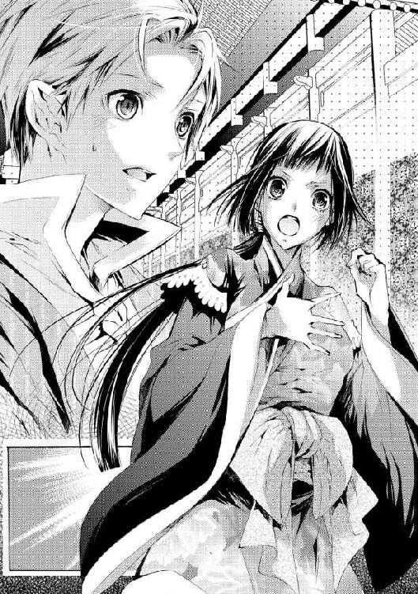

| にせもの公主の後宮事情: 3 淑女は大志を抱くものです？ (一迅社文庫アイリス) | |
| 雨川 恵 | |
| (2014) | |
イラストレーション ◆ すがはら 竜
にせもの公主の後宮事情 淑女は大志を抱くものです？
「――やっぱり、ここにいた」
突然、本に落ちていた木漏れ日が遮られる。頭上から声がして、一瞬びくりとしたものの、その必要がないことはすぐに解った。顔を上げると、光を背負った見慣れた姿が、彼女を覗き込んでいる。
「お兄様」
彼ならば、心配はない。この、血の繋がらない『お兄様』は、後宮でただ一人の彼女の理解者だ。淑蓉がここにいても――華やかな人々や、楽しげな喧騒から逃げ出しても、きっと叱ったりはしない。
「どうしたんだ。皆のところへは、行かないの。――誰かに、嫌な思いでもさせられた？」
優しげな声音は常通り、しかし最後の問いにどこか不穏な気配を感じて、淑蓉は慌てて首を振った。
「ううん、違います。でも、私がいない方がいいと思うから......」
遠くから、宮女たちの奏でる楽の音が聞こえる。後宮の妃嬪たちの娯楽には欠かせないものだ。後宮という閉ざされた世界に閉じ込められた女たちは、気散じのために様々な会を催すのだが、淑蓉はそうした場所があまり好きではなかった。美しい女たちの間に紛れ込むのは恐ろしい、自分が全く場違いの存在だと思い知らされる......。
「そんなことはない」
はっきりと口に出して言いはしなかったが、しかし淑蓉の内心は相手に伝わってしまっていたらしい。兄は依然穏やかな、けれどきっぱりとした口調で告げる。
「君は、父上に認められてここにいるんだ。誰にも引け目なんか感じることはない。一人で居辛いなら、私と一緒に行こう？」
その誘いはひどく魅力的ではあったが、しかし淑蓉は少しためらって首を振った。
「私は、いいです......」
「まだ、ああいうのは好きじゃない？」
「......はい」
「............」
「でも、私、寂しくなんかないんです。まだ、読んでない本もいっぱいあるし......それに、お兄様とお話しできる方が、ずっといいです」
別に、虚勢を張っているわけではない。気詰まりな場所に出て肩身の狭い思いをするよりは、一人の方がずっと気楽だ。完全に独りぼっちだと思えばそれは辛いことだろうが、そうでないと解っているから大丈夫――彼女の『お兄様』が、いつだって優しくしてくれるから。
しかし、彼女の答えを聞いた彼は、途端に顔を曇らせる。
「淑蓉。私は――もうすぐ、ここを出なければいけないんだよ」
「............」
ああ、そうだった。途端、胸が締め付けられるように痛んで、淑蓉は思わず俯いてしまう。
棕河国の王子は、十五になれば後宮から出される。そしてそれは、この兄においても例外ではない。既に、行くべき先も決まっている――今は心地良い木漏れ日が更に弱まり、木枯らしが吹きはじめる頃には、もうここで彼と会うことはできないのだ。
「......そんなに、遠くに行くわけじゃないよ。大丈夫だよ」
気まずい沈黙が続いた後、先にそれを破ってくれたのは彼の方だった。
「本当に、すぐ近くなんだ。だから、何かあったらすぐに教えて。必ず、帰ってくるから」
――あ。
優しい言い方はいつも通り。しかし淑蓉はその瞬間に、はっと気付く。違う、こうではない――今、彼女が返すべき答えは。
「だ、大丈夫です！」
急に上ずった声を上げた彼女に、兄は少し驚いたようだ。訝しげな表情を向ける彼に、淑蓉は精一杯の毅然とした声で言う。
「寂しいけど......でも、また会いに来てくれたら、大丈夫です」
「淑蓉」
「ね、新しいおうちって、どんなところですか」
唐突な問いかけに、兄はますます当惑したようだった。微かに首を傾げて、それでもきちんと答えてくれる。
「本当に近くだよ。昔、一族の誰かが住んでいたところに、父上が手を入れてくださった」
「大きいおうちですか？」
「？ どうして？」
「おうちが大きかったら......お掃除する人が要るでしょう？ 私、お掃除できます――前の家で、お母さんは毎日そうしてたから」
前の家――彼女が後宮で暮らすようになる前のこと、まだ母は国主の妃などではなくて、父が生きていた頃のこと。一家は下町の平房に住んでいて、優雅な暮らし向きとはほど遠かったが、しかし淑蓉にとっては今も幸福な思い出だ。水を汲んだり料理をしたり、洗濯をしたり衣服を作ったり、母は常に動き回って忙しそうだったが、それを当然と思っているようだった。父が帰ってくる頃になると、淑蓉も布と箒を持たされて、家を綺麗に掃除しなさいと命じられたものだ。
――いいかい、淑蓉。
――お父さんは、外で大事なお仕事をして帰ってくるんだからね。だから、家の中をきちんとして、お父さんがゆっくりできるようにするのが、私らの仕事だよ。
だからそれは、彼女にできる、最も誇らしい仕事だった。父のように外で働いたり、母のように家を切り盛りしたりはできないけれど、とにかく彼女にも、ちゃんと家族のためにできることがあるのだ。
「だから私、大きくなったら、お兄様のおうちをお掃除する人になりたいです」
しかし、決意溢れる宣言は、正しく報いられたとは言えそうになかった。兄は一瞬、不思議そうに彼女を見返した後、声を立てて笑ったのだ。
「な、何で笑うんですか？」
「いや、どうして君はそう......ああ、でも、気持ちだけはありがたくもらっておくよ」
ありがとう、とぽんぽんと頭を軽く叩かれる。明らかに彼には、真面目に検討してくれる気はないようだ。心から本気だったのに、と淑蓉は不満ではあったが、しかし結局のところ、彼に抗議はしなかった。
本当は、彼が笑ってくれて嬉しかった――残されていく彼女よりも、よほど憂鬱そうな顔をさせたまま、行ってほしくはなかったから。
温かい微睡みから、ゆっくりと意識が浮上してくる。掛布の下で、淑蓉は小さく身動ぎした。
薄く目を開けてみると、室内はまだ暗かったが、ものの形ははっきりと解る。透かし窓がぼんやりと明るいのは、既に東の空が白みかけているからだろう。寝台を覆う薄い紗、それを支える細工入りの天蓋。寝室用の小さな櫃子の上には、明かりの消えた台灯が置かれている。
何もかも、昨夜眠りに落ちる前のまま。しかし淑蓉は、未だこの眺めに慣れることができないでいる。
「............」
息を殺して、そうっと視線を巡らせる。微かな息遣いをすぐ側に感じると、いよいよ落ち着かない気分になった。淑蓉は慎重に身体を起こす。ゆっくりと、音を立てないように――隣にいる彼を起こさないように。
恐る恐る様子を窺う彼女の前で、彼はまだよく眠っているようだった。薄闇の中でもはっきりと見える整った顔立ちは、けれど昼の光の下で見るときよりもいくらか幼く見える。
少し前までは、彼女の立派な『お兄様』に対して、こんな風に感じるなんて想像もしなかった。愛おしさが胸に込み上げて、淑蓉はその髪を指で梳いて整えてやりたい衝動に駆られたが、すんでのところで抑え込んだ。いや、そんなことをしている場合ではない。
――今日こそは......！
重心を移動させて、彼から離れる。掛布の下から滑り出し、寝台の外に足を下ろして......。
「――淑蓉」
「！」
名を呼ばれるのと、背後から抱きすくめられるのはほぼ同時だった。突然のことに息を呑んだ彼女の耳に、ぼんやりとした低い声が聞こえる。
「どこに、行くんだ......？」
しまった、気付かれた。だが、ここで彼を振り払って駆け出すわけにもいかない。淑蓉は肩越しに振り返ると、周囲の静けさを破らないほどの小さな声で挨拶をした。
「お、おはようございます、天黎様」
「ああ......もう、朝......？」
応じる声は、どうもまだ夢現のようだ。今ならまだ、大丈夫かもしれない。淑蓉は尚更に声を落として、誘うように告げる。
「はい。でも、まだ夜明けまで時間がありますから、お休みになっていてください」
「うん......」
今にも眠り込みそうな答えとともに、背中に頷く気配があって、淑蓉は一瞬ほっとした。しかしそのままじっとしていても、天黎は離れてくれない。これでは身動きが取れない。
「あ、あの天黎様。横になってお休みになった方が」
「君が一緒に寝てくれたら」
「えっと、私は......」
「まだ、夜は明けてないんだろう？」
「私はその......先に起きて、支度をしておきたいので」
「支度......？ 何の」
一般的に、朝は一家の主婦の仕事が集中する時間だ。家人を起こし、朝食を食べさせ、家から送り出さなければならない。誰よりも早く身支度を整えて、万事遺漏がないか目を光らせ......少なくとも、日が完全に昇ってしまってから、起き抜けの顔で寝台から出るようでは、いろいろとよろしくない。
「関係ないよ」
だがそう言っても、天黎の腕は彼女を解放してくれない。
「誰がそんなこと決めたんだ......。くだらないことを言う奴は、一番鶏につつかれて死ねばいいのに......」
「天黎様」
「それに、そんなことなら、君が起きる必要はない。うちの用人はちゃんと働く」
「それは......そうですけど」
もちろん、見張ろうなどと大それたことは考えていない。この屋敷で働く者たちは皆、国主の親王の身辺に仕えるにふさわしく選ばれた人々ばかりだ。きっと、今こうしている間にも、彼らは既に起き出して、各々の仕事にかかっているだろう。ほんの一月前からここに住むようになったばかりの淑蓉が、どうこう言うことではないし、言うつもりもない。
――ただ......。
「だから、まだ寝てたらいいじゃないか......俺は眠い」
「す、すみません、起こしてしまって。私にはお構いなく、もう一度眠って......」
「それとも、せっかくだから起きようか。君と楽しく過ごす時間は、まだあるだろう？」
「！ もう朝です！」
耳元の囁きに、それまでの配慮も忘れ、淑蓉は思わず声を上げてしまう。まだ微かに残っていた微睡みの余韻を完全に吹き飛ばす勢いで、頭に血が上ってくる。動揺しきった自分の声に更に動揺し、身体を強張らせた淑蓉の背後で、押し殺した笑い声が聞こえた。
「俺は、別に気にしないけど？」
「きっ、きっ、気にしてください......！」
「そうか。――じゃあ、仕方がない」
突然、彼女の身体に回されている腕に力がこもる。半ば抱き上げられるような感覚の後、淑蓉は再び寝台の中に引き戻されていた。しかし今度は抜け出せそうもない。天黎は彼女を胸に抱きしめたまま、横になって満足そうに息をついた。
「天黎様......」
「もう少し、このままでいてくれ......君は抱き心地がいいんだ」
「そ、そうなんですか......？」
「うん」
正直、そうしっかり抱え込まれると、淑蓉としては多少窮屈さを感じないでもないが、しかし彼にそう言われては動けるはずもない。まるで気に入りの人形を取り戻したとでもいうように彼女を抱く腕の中で、しばらくじっとしていると、やがて規則正しい寝息が聞こえてくる。
「............」
伝わってくる温度が、柔らかく彼女を包み込む。淑蓉は、それでも密かに抵抗を試みる。いや、こんなことではよくない。何とかして、もう一度ここから出なければ......。
――......でも、起こしちゃ、駄目だよね......？
それが、真実彼への気遣いなのか、それとも自分に対する言い訳なのかは、淑蓉自身にもよく解らなかった。しかし一度口実を見つけてしまうと、それ以上、心地良さに抗うことはできない。後ろめたい幸福感の中、淑蓉もまた彼に身を寄せると、思い切って再び目を閉じた。
＊ ＊ ＊
「――だから、今日は少し帰りが遅くなるかもしれない」
結局この日も、夜が明けてから寝台を出た淑蓉は、天黎と二人で朝食の席についていた。既に卓上には、湯気の立つ粥と油条、香り良く煮た卵や豆、摘める小さな点心が数種、きちんと用意されている。......起きて、自分の身支度を整える以外には何もしていない身としては、何となく忸怩たる眺めだ。
「まあ、定例の議事だから、そう揉めることはないだろうけど。もし俺がなかなか帰ってこないときは、先に食事を済ませてくれていいから」
そう言って茶を口にする天黎は、もうすっかり登城するにふさわしい姿になっていた。長袍に上衣、濃色の地味な色味に華美なところはなく、ともすれば宮殿に仕える百官と変わりなく見えるほどであるが、精緻に施された銀糸の装飾だけは、決して他者に紛れたりはしないだろう。宮殿内において、それを許されるのは国主の一族のみであり、国主の親王たる天黎の身分を衆目に示すものである。
とはいえ当の本人が、いちいちそんな感慨を持って身につけているわけではなさそうだ。屋敷の用人が用意しておいたものの中から、適当に選んで着ているようだ。貴人の中には、着替えに他人の手を要する者、あるいはそれを誇りと思う者も少なくないが、どうやら天黎はそういう性質ではないらしい。......というか、淑蓉が以前に手伝いを申し出たところ、ものすごく不思議そうな顔をして「何で？」と言われた。
「私のことは、お気になさらないでください。お帰りをお待ちしています」
「いいよ、そんなに気を遣わなくても。君を待たせたくないし」
「あ、ありがとうございます。でも......」
そのとき、天黎が茶を飲み干したのを見て、淑蓉は言いかけた言葉を切った。思わず腰を浮かせかける......が、立ち上がることはできない。彼女の動きを押し留めるように、天黎が卓子の上で、淑蓉の手を押さえたからだ。
そして実際のところ、彼女が立つ必要もなかった。少し離れたところに控えていた用人が素早くやってきて、茶器を満たしていく。
やがて、用人が再び卓子の側を離れると、天黎は静かに言った。
「淑蓉――まだ、ここの生活には慣れない？」
「あ、いえ、そんなことはないですけど」
彼が何を言いたいのかは、解っている。彼女がここで暮らすようになってから、もう何度も話したことだ。
「でも......その、せめてお茶くらいはお淹れしようと」
「ちゃんと、そのための人間が控えているんだ。わざわざ君に労をかけることはないよ」
「そう......ですね」
「彼らがいるのが、落ち着かないのか？ 君のためならどこかにやろうと言ってあげたいところだけれど、いきなり彼らから仕事を取り上げるわけにはいかない。用人たちにも家族がいて、この屋敷で仕事をして養っているわけだから」
「も、もちろんです！ そんなことなさらないでください」
淑蓉は慌てて答える。用人たちに罪はないし、彼らを疎んじているわけでもない。何をするにも恭しい態度で接されることに、多少気後れを感じはするが、それは彼女の都合だ。この屋敷をきちんと回していくのに献身している彼らに感謝しこそすれ、不満などあるはずがない。
この屋敷で、主のために献身していないのは、一人だけだ。
「......私も、少しくらいは何かしないと。お屋敷に置いていただいているのですから......」
「『置いていただいている』だって？」
卓子の上で重ねられた手が、ぎゅっと握られる。鋭い眼差しを淑蓉に据えて、天黎は不快そうに言う。
「馬鹿げたことを言わないでくれ。淑蓉、君はもう俺の妻だ。用人でも、居候でもない。俺と全てを分かち合って、一緒に暮らすと言ってくれたときから、ここは君の家でもある。俺がそうなのと同じくらいに」
彼が心から、そう言ってくれているのは知っている。『妻』だなんて言葉にはまだ慣れなくて、妙に気恥かしかったりはするけれど、彼に言われるのはとても嬉しい。
誠実な、思いやりに満ちた言葉――けれど今、それを聞いて、胸にもやもやとわだかまるものがあるのは何故なのか。
「俺が、望んで来てもらったんだ。だから、それなりのことをするのは俺の義務であって、君のじゃない――君に不自由はさせないつもりだ」
「......はい」
胸中を押し隠して、淑蓉は微笑んで答える。彼は本心から、今の生活を望んでいるようだ。ならば淑蓉にとって、他に望むことなどあるはずがない。
「まあ、偉そうにそう言えるのも、君が身代を傾けるような道楽者じゃないって知っているからだけど。でも淑蓉、本当に、欲しいものがあったらちゃんと言ってくれ。着る物は足りている？ 何か新しく作りたいなんてことはない？」
「えっ、そんな、とんでもないです！」
淑蓉は仰天し、半ば怯えて首を横に振った。足りないどころか、実際のところ、そうした類のものは持て余しているくらいなのだ。結婚に際して母が用意してくれた嫁装の衣類や宝飾品だけでなく、この屋敷に来てから天黎が誂えてくれたものもある。この上、更に不釣り合いな物品が増えては、いよいよどうしていいか解らない。
しかしそんな彼女の困惑は、とうに見透かされていたらしい。慌てる淑蓉の様子に、天黎はいかにも予想通りという顔で、おかしそうに笑った。
「なるほど。相変わらず、光り物じゃ君の気を引けないみたいだな。知ってたけど。じゃあ、もっと上手にやってみようか――書庫に、気に入ったものは見つかったかい」
「あ、はい！ ありがとうございます」
今度は間髪容れず、淑蓉は喜色も露わに礼を言った。この屋敷にも様々な蔵書を収めた書庫があって、結婚式の後、天黎が好きに出入りしていいと鍵をくれたのだ。もちろん宮殿のそれとは、規模は比べものにならないが、しかし逆に宮殿にはなかった本も数多い。巷で流行の小説や講談本などは、宮殿にはほとんど納められないからだ。
「近く、出入りの書賈を呼ぶよ。市中に出回っている書物のことなら、知らないことはないような男だ。それまでに、欲しいものを全部挙げておいてくれ」
「い、いいんですか？」
「もちろん」
思わず声を上ずらせる淑蓉に、天黎がにっこり笑う。淑蓉もつられて笑みを返したとき。
「天黎様」
不意に、彼の名を呼ぶ声がする。扉のところに、今や見慣れた青年の姿があった。天黎個人に仕える侍臣である弘瑜は、淑蓉と目が合うと軽く会釈を返して、常通りのしっかりした口調で主に告げる。
「表に車を回しておきました。いつでも出発できます」
「解った、今行く」
答えて、天黎はようやく卓子の上で重ねたままだった手を離した。ため息をついて立ち上がると、同じく見送りにと立ち上がった淑蓉を押し留める。
「ここでいい。――それじゃ、行ってくる」
「はい。お気をつけていらしてください」
ここ最近習いになった、出掛けの挨拶を交わす。いつも通り、天黎が踵を返して扉を出ていく後ろ姿を見つめていた淑蓉だが、ふとその後ろ姿に気付くものがあって、急いで彼を呼び止める。
「あっ、待ってください」
「うん？」
「その上衣、裾のところが......」
追いついた淑蓉は、彼の着ている上衣を引っ張る。裾がほつれそうになっているのを、指摘されてはじめて気付いたらしい天黎は、ああ、と小さく肩を竦めた。
「しまった、どこかで引っかけたかな」
「別のものをお召しになってください。あの......もしよろしかったら、私、直しておきます」
これは好機かもしれない。意を決して、淑蓉は申し出てみた。裁縫は得意ではないが、全くできないわけでもない。むしろ、彼女の持っている技能の中では、比較的ましな方だ。時間はかかるが、そこそこ見劣りしないものができる......うっかり袖を縫い合わせたり、自分の着ているものを縫いつけたりしなければ。
しかし、必死な彼女の内心など知る由もない天黎は、軽く笑って首を振る。
「まさか。君にそんなことさせやしないよ。心配しなくても、誰かがちゃんと直しておいてくれる」
そう言って無造作に上衣を脱ぐと、彼は淑蓉を通り過ぎる。音もなく近付いてきていた用人に、気安い言葉と一緒にそれを渡してしまった。再び彼女の側に戻ってきた天黎は、優しく頭を撫でていく。
「じゃ、今度こそ行ってくる。何か困ったことがあったら、すぐに家の者を呼ぶんだ、いいね」
何の屈託もないその表情を前にすれば、彼女に言える言葉は一つしかない。
「解りました......行ってらっしゃいませ」
彼女に背を向けた天黎は、振り返らずに食堂を出て行く。落胆を押し隠し、淑蓉は今日もまた、ただその後ろ姿を見送った。
「うーん......」
――今日も、駄目だったなぁ......。
朝の失敗にため息を零しながら、淑蓉はこの一月あまりのことを思い返していた。一月――つまり、彼女が天黎と結婚して、この屋敷で暮らすようになってからのこと。
新しくはじめた結婚生活は、客観的に見て、申し分のないものと言えるだろう。結婚する前と少しも変わらず、天黎は優しい『夫』になった。彼女を庇護し、あらゆるものを与えてくれる。食べるものも着るものも、何一つ不自由のない、完全に満ち足りた生活。
不満など、あるはずがない。しかしどれだけ頭でそう思っても、心に張り付いた違和感は拭えないままだ。白布に落ちた染みのように、なかなか落とすことができない。むしろ、落とそうと足掻けば足掻くほど、ますます滲んで広がっていくようにさえ思われる。
――......お父さんとお母さんは、こうじゃなかったな。
そしてこんなとき、決まって淑蓉が思い出すのは、幼い頃の記憶だった。今は亡き父と、母との生活は、彼女が知っている最も身近な結婚生活だからだ。父が仕事で家にいないとき、母はどうしていただろう――父のために、何をしていたのか。
「............」
もちろん、父母のあり方と自分たちのそれが比較できるものでないことは解っている。市井に暮らす一介の官吏であった父とは違う、天黎は国主の御子なのだ。妻として必要とされるものだって、官吏の妻とはまるで異なるものなのだろう――少なくとも、朝早く起きて彼のために支度をしたり、茶を淹れたり、ちょっとした繕い物をするなどということは、これっぽっちも求められていないようだ。
沈む気持ちで何気なく見やった窓の外が、素晴らしくいい天気で、淑蓉はますます憂鬱な気持ちになった。こんな日は、市井では絶好の洗濯日和と言うのだが、この屋敷では彼女にそう言う資格はなさそうだ。
それでも、罪悪感めいた衝動に駆られて、淑蓉は窓を開けた。流れ込んでくる爽やかな風が、いくらか気持ちを奮い立たせる。こんなにいい天気なのだから、せめて何か役に立つことをしたい。
「奥様」
背後からそう声をかけられたのは、彼女が庭先に下りて、目につく枯葉や雑草を集めはじめてすぐだった。屋敷内に幾つかある庭園は、どれも屋敷の用人の手で整然と維持されているのだが、何せ相手は植物であるから、常に手がかかるものだ。腰を屈めて小さな雑草を取るのは、他に仕事のある用人たちにとっては面倒な作業に違いない。彼女がしておけば、誰にとっても喜ばしいことだと思ったのだが、しかし彼女を呼んだ用人が、そう言うなりいきなりその場に跪いたので、淑蓉は大いに焦ってしまう。
「申し訳ございません！ 奥様のお手を煩わせるような不備がございましたでしょうか......」
「え、ええ!? ち、違います違います！ そんなことではなくて」
「ですが、そのようなことをなさってはお手が汚れます。屋敷の者にお申し付けください。奥様の御用は何であろうと務めますゆえ」
「は、はい......」
用人の丁重な言葉を受けて、淑蓉は気まずく肩を落とした。どうやらこんなことは、彼らの『奥様』にはふさわしくないらしい。彼らの主、親王殿下の正式な『妻』たる者には。
少しでも、何か役に立つことをしたかっただけなのだけれど......。
「――それで、奥様。実は、お知らせしたいことがありまして」
しかし、続けて用人がそう言ったので、淑蓉ははっとして相手を見やった。これはなかなか珍しいことだ。普段、屋敷の用人は、彼女が呼んだのでもない限り、声をかけてくるようなことはないのだ。
「は、はい。何でしょうか！」
「お邪魔して申し訳ございません。実は......お屋敷にお客様がお見えで」
最初、それを聞いた淑蓉は、来訪を予告されていた書賈が訪ねてきたのだと思った。だが、目の前の用人が、何やら困惑している風情なのは何故なのだろう。まだ年若い青年は、ひどく恐縮そうに続ける。
「あの......おそらく、お客様、だと思うのですが......」
「おそらく？」
「その......私どもでは、判断ができませんで。もしご都合がよろしければ、あの娘をどうすればいいか、お指図をいただきたく......」
「娘？」
ということは、その客というのは女性なのか。まるで心当たりがなくて、淑蓉は首を傾げる。残念ながら、彼女に訪ねて来てくれるような友達はいないから、天黎の客に違いないが......娘？
「わ、解りました。参ります」
胸中にいささか愉快でない念が生じないでもないが、そこは気にしないことにして、淑蓉は用人の頼みに応じた。わずかに声が上ずったのは、これがかつてない機会だと気付いたからだ。天黎の留守中に、知らされていない客が訪れるなどはじめてのことだ――彼の『妻』として、立派に務める機会ではないか。
わずかに緊張と不安を抱えながら、淑蓉は用人の後に付いて客間へと向かった。開けられた扉をくぐって、中へと足を踏み入れる。
「お待たせしました」
内心は恐る恐る、しかしそうは聞こえないように声をかけると、客用の椅子に腰かけていた人物が、弾かれたようにぴょこんと立ち上がった。慌てた様子で振り向くと、ろくに目も合わせずに頭を下げる。
「は、はじめまして！ あたし、張名蓮っていいます。すみません、まさかお屋敷のご主人様にお目通りいただくなんてつもりでは......！」
けれど、そこまで言いかけて、何かに気付いたように言葉を切る。顔を上げて、淑蓉の姿をはっきり認めると、ひどく当惑したように目を瞬いた。
「え......あなたが、このお屋敷のご主人様？ あ、お嬢様？ え......？」
「ち、違います違います」
出会い頭の勢い込んだ挨拶に、思わず呆気に取られてしまった淑蓉だが、相手の困惑ぶりに逆に少し落ち着きを取り戻した。少なくとも、先刻まで想像していたような怖い客でも、気難しい客でもなさそうだ。
「主人は天黎様ですけど、まだ帰っていらしてなくて......あの、天黎様に、どういった御用ですか？」
特に問い質すような口調ではなかったはずだが、しかし言われた方は、あからさまに顔を引きつらせた。とんでもないとばかりに、大きく首を横に振る。
「まさか！ その天黎様って、もしかしなくても王子様でしょう？ そんな、あたしなんかが口を利いたら、無礼だって首を刎ねられちゃう！」
「え!? いえ、そんなことは......」
「あたしはただ、幼馴染に会いに来ただけなんです。ここで働いてるって聞いたから――あの、林弘瑜っていうの、ここにいませんか？」
突然、よく知った名前が出てきた。淑蓉は目を丸くし、次いで、屋敷の用人が困りながらもこの客人をここへ通した理由も察した。同じ主に仕えているとはいえ、弘瑜は他の用人とは立場が違う。天黎に付いて宮廷に上がることも許された、彼の生活ではなく、仕事上の補佐役だ。
普通、屋敷の用人に訪ね人があれば裏口に回されるものだが、そうするのがためらわれたのも解る。淑蓉は、まだ扉のところに立っている用人に告げた。
「弘様のお客様なら、こちらでお待ちいただいた方がいいと思います。あの、よろしければお茶をいただけませんか。お客様にお出ししますから」
「弘を知ってるの？」
用人が一礼して引き下がるのと同時に、客の娘が声を上げる。淑蓉は彼女に向き直ると、はい、と頷いた。
「もちろんです、いつもお世話になっていますから。でも、今日はまだお帰りになっていなくて......もう少ししたらお帰りになると思いますから、お時間のご都合がよろしければ、こちらでお待ちいただけると行き違わなくていいと思います。何か、お急ぎの御用ですか？」
「あ、いや、特に急ぐってわけじゃないんだけど......」
娘は口ごもるようにそう答えると、困惑の目で淑蓉を見つめる。淑蓉もまた、改めて相手を観察した。歳は彼女より少し上だろうか。黒髪を一つにまとめて、動きやすい細袖の上衣と袴子を身につけている。決して悪い仕立てではないが、年頃の娘の恰好としていささか華やかさに欠ける装いなのは、それが旅装だからだろう。彼女の足下に置かれた大きな荷物から考えれば、遠方から都にやってきて、その足でこの屋敷にやってきたということか。
「ああ、そう言えば、前に弘様にお伺いしたことがあります。南の、長巴の方のご出身だって」
客人に椅子を勧めてから、淑蓉もまた近くの椅子に腰を下ろした。客をもてなす義務もさることながら、相手自身にも興味を覚える。生まれてこの方、都である湲洲を出たことのない淑蓉にとって、遠方からの客人はとても珍しい存在だ。
「あなたも......ええと、名蓮様と仰るんですよね。幼馴染ということは、名蓮様もそちらからいらしたのですか？」
「そ、そう。さっき着いたばかり......あの、それより」
名蓮と名乗った娘は、椅子の上で落ち着かなげにもぞついている。気後れしているような、けれどどこか疑心の窺える目を淑蓉に向けると、言いにくそうに呟く。
「あなたは......誰？」
「あ！ ごめんなさい！ 私、明淑蓉と申します」
来客が珍しくて、つい自分が名乗るのを忘れていた。淑蓉は恥じ入って、慌てて自分の名を告げたが、名蓮が質したかったのはそういうことではないらしい。胡乱な眼差しはそのままで、なおも尋ねてくる。
「その......弘とは、親しい仲なの？ そんな呼び方するくらい......」
「呼び方？ ......あ、ああ！ すみません、弘瑜様、ですね」
本人にそう呼んでもらって構わないと許されたことは、この際言い訳にはならないだろう。再びの失態に、淑蓉は顔を赤らめて訂正したが、名蓮の表情は変わらなかった。ふいと目を背けて、別に、と息をつく。
「あたしに謝ってくれなくてもいいよ。そんなこと、いちいち口出す筋じゃないし。......にしても、あの馬鹿、都まで行って何してるのかと思ったら......ていうかやっぱり、こういう大人しそうで従順な可愛いのがいいの？ ほんとに男ってのは！」
「あ、あの......？」
呪わしそうに言い捨てる語気に気圧されて、淑蓉はおろおろと言いかけたが、何と言っていいか解らずに口を閉ざした。名蓮もまたむっつりと押し黙ったままで、室内に居心地の悪い沈黙が満ちたとき。
「失礼致します。お茶を――」
「あっありがとうございます！」
天の助けとばかりに立ち上がると、淑蓉は扉のところへ飛んでいく。戻ってきた用人から茶器一式を受け取ると、笑顔を作って客の許へ戻った。茶でも飲みながら話せば、この気詰まりな空気も変わるだろう。
「あの、お茶淹れますね！」
「............」
名蓮から答えはなかったが、淑蓉は構わず一式を卓子に置いた。茶壺に葉を入れて、湯を......。
「あー！」
だが、突然背後から叫ばれて、淑蓉はびくっとしてしまう。何とか湯を零さずに、卓子の上に戻せたのは幸いだった。驚いて振り向く彼女に、椅子から飛び上がるように立ち上がった名蓮は、怒りの形相で指を突きつける。
「ちょっとあんた、何やってんのよ！」
「な、何って、お茶を淹れて......」
「葉を入れる前に、茶器を温めるのも知らないの？ それに、そんなにちびちびお湯を入れたんじゃ、茶葉が湿って変な味がするだけだよ。入れるならもっと高い位置から、こう一気に注がなきゃ」
「は、はい」
鋭く指示され、淑蓉はあたふたとやり直す。が、茶器を温めるくらいはまあいいとしても、その先は難しい。高い位置とは具体的にどの位置だろうと、茶壺を見下ろして迷っている淑蓉を見やって、名蓮がため息をつく。
「もういいよ、貸して。あんたって手際悪すぎ」
「す、すみません......」
茶器を取られ、淑蓉は一歩下がって自分の場所を明け渡す。だが一方で、そうして彼女の仕事を引き継いだ名蓮の動きには澱みがなかった。茶壺の中の葉を注ぎ入れた湯で見事に膨らませて、微かに青みがかった美しい色味の茶を素早く器に注ぎ分ける。
「ほら、飲んでみて。全然味が違うはずだから。ていうか、香りからしてもう違うでしょ」
「ああ、本当です。すごくいい香り」
仄かに甘い香りが、熱とともに空気の中に立ち上っているのが解る。淑蓉がぎこちなく淹れても、十分に美味しいと思っていたが、こうしてきちんと淹れられてみると違いは歴然だ。優しい味わいに、思わずにっこり微笑みかけた淑蓉だが、しかし名蓮のきつい眼差しを受けると、立ちどころに幸せな気分は消えてしまった。
「他人事みたいによく言うよ。あのねえ、せっかくいいお茶淹れるんなら、もうちょっと気を遣ってやりなよ。こんなお屋敷じゃ、茶葉なんて溝に流しちゃっても構わないくらいの気持ちかもしれないけど、溝に流される茶葉だって、一所懸命作ってる人がいるんだから」
「......すみません」
名蓮の言う通りだ。本当に自分は何もできないのだと思い知らされて、淑蓉は胸が詰まるような心地になった。そんなつもりは少しもなかったけれど、これまで知らず怠けていたつけを、今払わされているのかもしれない。彼女に何もできないと知っているから、天黎は彼女に何も任せてはくれないのだろうか。いつまでも半人前で――何の務めも果たすことができない......。
「ごめんなさい......」
「えっ!? や、やだちょっと、そんな顔しないで。そんな、何かあたしがいじめたみたいな......お、お願いだから泣かないで！」
「な、泣いてません」
ぼやけそうになる視界を、何とか瞬きではっきりさせると、名蓮が狼狽した顔をしているのが見えた。気まずそうに顔を赤らめたかと思うと、慌てて身を乗り出してくる。
「あああごめんね、きついこと言っちゃって！ まさか、泣かせちゃうなんて思わなくて......」
「泣いてません！」
「わ、解ったよそれでいいから。でも、ほんとごめん......美味しくお茶を飲んでほしいのに、嫌な気分にさせるのはおかしいもんね」
「いいえ、名蓮様が仰ったのは本当のことです。私、何もできなくて......」
「大丈夫だよ！ こんなの、何度かやればできるようになるって！ あんたまだ若いんだし、ちょっとくらいできなくてもすぐ覚えられるよ！」
さして歳が違うようにも見えないくせに、名蓮は力強くそんなことを言った。そして淑蓉の手を取ると、元気づけるように両手で握る。
「やり方、教えてあげる。何でも、最初から上手にできる人なんていないんだから。慣れないお屋敷で大変だろうけど、そんなに気に病まなくていいんだからね」
「は、はい」
あれ、と淑蓉は不思議に思った。何故名蓮は、淑蓉がこの屋敷に来たばかりだと知っているのだろう。だがそんな疑問は、目の前の名蓮が心底ほっとしたような笑顔で彼女の頭を撫でたので、すぐに飛んでいってしまった。
「そうそう、くよくよしてもいいことないんだから。あ、お茶おかわり要る？ って、あたしが言うのも変だけど」
「お手数でないなら、是非。――名蓮様は、お茶を淹れるのが上手なんですね」
「ああ、様なんて付けなくていいよ。名蓮って呼んで。......まあ、一応茶商の娘だからね」
その言葉は誇らしげなような、けれどどこか鬱屈したような、ひどく複雑な響きをしていた。彼女の表情にわずかに翳りが兆したことに淑蓉は気付く。何か事情でもあるのだろうか。
「長巴はお茶の産地だって、弘様が仰ってました。弘様に、どういった御用なんですか？ ......あ、すみません！ 差し障りがあるようなら、お答えくださらなくてもいいんですけど」
名蓮の表情が、今度ははっきりと曇ったので、淑蓉は急いで言い足した。何気なく問うただけで、特に詮索するつもりではないのだ。
「ああ、いや、別に秘密にするようなことじゃないんだけど」
名蓮は卓子の上から自分の茶杯を取り上げると、その中に視線を落とす。しばらく黙って水面を揺らしていたが、やがて意を決したようにそれを飲み干した。
「実は、ちょっと面倒なことになってて......」
だが、その続きを聞くことはできなかった。不意に扉の向こうで音がして、人の気配が近付いてきたのだ。挨拶の声とともに、扉がさっと開かれる。
「失礼します。すみません淑蓉様、私に客と、か......？」
「弘！」
淑蓉が振り向いて返事をするよりも、名蓮が反応する方が早かった。茶杯を卓子に勢いよく置いて立ち上がると、ようやく現れた待ち人に叫ぶ。
「どこ行ってたの!? どうしていないのよ！ ていうかあんた、こんな時間に外で何してるのよ、お屋敷勤めなんじゃなかったの？」
「――名蓮！」
室内に足を踏み入れた瞬間に、質問とも非難ともつかない文句を浴びせかけられた弘瑜は、一瞬呆気に取られていたが、すぐに相手を認識したらしい。仰天した様子で言い返す。
「何でここにいるんだ!?」
「あんたを訪ねてきたからに決まってるでしょ！ いなかったけど！」
「僕が仕事中だとは考えなかったのか？」
「考えたよ！ だから、仕事先なら絶対捕まると思って」
「そういうことを訊いてるんじゃないだろ！」
突如、目の前ではじまった言い合いに、淑蓉は驚いて目を丸くした。勢いに圧倒されたということもあるが、それ以上に、弘瑜の言い方が今まで聞いたことがないものだったからだ。彼女だけでなく他の人々にも、常に礼儀正しく穏和な態度の彼が、こうも率直な物言いをするところを見たことがない。
「ちゃんと裏に回ったって！ なのに、あんたに会いたいって言ったらこんな立派なとこに連れてこられたの！ 何このお屋敷すごいんだけど！ むしろ怖くて生きた心地がしないんだけど！」
半ばはどきどきと、しかし半ばは感心するような気持ちで見守っている淑蓉の前で、名蓮は弘瑜に深刻な顔で詰め寄っている。

「弘、あんた、ここで何やってんの？ まさか変な仕事してるんじゃないでしょうね？」
「変な仕事って、どういう意味だよ？」
「だってこんなのおかしいじゃない！ いくら偉い人にお仕えしてるからって、ただの用人を訪ねてきた客が、こんな丁重に扱われるわけないし。いつもは、その、なんか怖い人とか来るんじゃないの？ だからあたしまでこんな......ねえ弘、お給金がいいのか何なのか知らないけど、危ない仕事はしちゃ駄目だって！ 都会には悪い奴がいるんだよ！」
「いや待ってくれ、どうしてそんな想像に......」
「――なかなか面白い客人じゃないか、弘」
混沌としてきた言い合いに、更に別の声が混じる。弘瑜の後から扉をくぐって現れた相手に、淑蓉もまた、ぱっと椅子から立ち上がった。
「ということは、俺は悪の元締めなのか。おまえを騙して、道義に外れた仕事をさせる......」
「止めてください混ぜ返さないでください」
「あっ、あんた誰!? 弘に何するのよ！」
声の方を振り返りもしない弘瑜が嘆息するのと、闖入者に目を剥いた名蓮が声を上げるのはほとんど同時だ。淑蓉は急いで説明しようとしたが、詰問された本人が口を開く方が早かった。
「ああ、はじめまして。屋敷の者が失礼をしたようだ。弘の知り合いだというから、丁重に案内したと思うんだが、気に入ってもらえなかったのは残念だ――そうだろう、淑蓉？」
「は、はい」
突然話を振られて、淑蓉は反射的に返事をしてしまう。一方で、名蓮はそこでようやく淑蓉の存在を思い出したようだ。たった今まで会話していた相手が、特に不審がる様子もなく、いきなり割り込んできた男の言葉に応じるのを見て、事態を把握しきれなくなったらしい。彼女が大人しくなった、その一瞬の隙を突いて、弘瑜が素早く言った。
「失礼しました、天黎様......それに淑蓉様も、彼女の面倒を見てくださってありがとうございました。これは張名蓮といって、私の古い友人です。――名蓮、こちらは天黎親王殿下。僕のお仕えしている方で、この屋敷のご主人だ」
淡々とした弘瑜の声には、少しも激しいところはなかったが、果たしてその効果は見事なものだった。まるで凍りついたように固まった名蓮は、目を見開いて天黎を見つめていたが、彼がちょっと肩を竦めてみせると、傍目にも解るほど真っ青になる。
「く、首......首が......」
「首？」
「申し訳ございません！」
謎の単語に怪訝な顔をする天黎には答えないまま、名蓮はいきなり床に膝をついた。身を投げ出すように叩頭すると、必死の声音で叫ぶ。
「すみません、あたし、存じ上げなくて......！ ご無礼お許しください。本当に、わざとじゃないんです！ どうか首だけは......！」
「あの、名蓮様、大丈夫ですから」
これはいけない。名蓮の心底怯えきった声と、天黎の怪訝を通り越した困惑の気配を察して、淑蓉は彼女の側に歩み寄った。床に膝をついて、相手に宥めるように声をかける。
「顔を上げてください。天黎様は、そんな恐ろしいことをなさったりしませんから」
「だ、駄目だよ淑蓉！ 勝手にそんなこと言ったら、あんたまで首を刎ねられちゃう」
「そんなことないです。心配しないで」
「だって王子様だよ!?」
「......弘。おまえ、勤め先を郷里に何て説明したんだ」
何とか気を落ち着けようと話しかけている淑蓉の背後で、事情を察したらしい天黎が不満そうに弘瑜を質すのが聞こえる。
「別に変な風には言ってませんよ！ こちらでお世話になるってことも、家族にはちゃんと知らせてあります。ただ......田舎の人間ですから、国主の御子にお仕えするなんて知らせても、まだいまいち想像ついてないんじゃないかと」
「そ、そうだよ。あんた全然帰ってこないし......あたしに、手紙一つくれないし......」
その答えを聞き咎めて、ようやく顔を上げた名蓮が、恨みがましく呟く。その言葉には、単なる不満というよりは、もっと拗ねたような響きがあるように淑蓉には思えたが、しかし弘瑜は別のところに気を取られたようだった。今度は名蓮に向き直ると、それで、と話を続ける。
「どうして、僕のところに来たんだ？ 君がここにいるってことは、張家の旦那様もいらしてるんだろう。いくら都見物がしたいからって、勝手にふらふら出歩いて、また旦那様に叱られても知らないからな」
だが瞬間、はっと名蓮の表情が強張る。少しの間、言い澱む間があって、室内には奇妙な空白が満ちた。
「......名蓮？」
「その......実は、あんたにお願いがあって......」
「待った。もう一度訊くけど――旦那様は？」
「お願い！ あんたの家に泊めて！ しばらく、ううん、ちょっとでいいから！」
「はあ!?」
突然切り出された用件に、弘瑜は目を剥いた。絶句した彼に、しかし名蓮は更に言い募る。
「ほんとお願い、あんたしか頼れないんだよ！ 都に知り合いなんて、他にいないんだもの。ほんの少しでいいから――あたし、仕事を探すつもりなの。住む場所も見つけて、お金が払えるようになったら出てくから、だからその間だけ！」
「待てよ、どういうことなんだ？ もしかして......ご両親に、何かあったのか？」
「いやいや、親は二人とも健在だよ！ 元気、すこぶる元気だから。元気すぎて、ちょっと離れたくなるくらい......」
「ああ、それはよかっ......って、離れたくなるって何だよ！ まさか!?」
「大丈夫、あんたの名前は出さなかったから。だから、あの人たちはまだ、あたしがどこにいるか知らないと思う」
「馬鹿！」
弘瑜が声を荒らげて怒鳴ったので、淑蓉は驚いて目を丸くしてしまった。いつも彼女に接するときには、穏和で落ち着いた物言いしかしない彼が、そんな風に言うところなど想像もつかなかったのだ。
「ってことは、じゃあこれは家出なんだな？ 都まで、一人で来たのか？ 何てことを！ そんなことをしていいかどうかも解らないほど、分別のつかない歳じゃないだろ！」
「してはいけない理由って何よ！ あたしは自分で行きたいところに行くよ！」
「今頃、君の家はどうなっていると思う？ ご両親が死ぬほど心配してるなんてことは、考えつきもしないのか？」
「そりゃ心配するでしょうよ、あの人たちにはあたしが必要なんだもの！ でも、逆もそうとは限らないでしょ！」
「何を馬鹿言って......！」
「いちいち馬鹿って言わないで！ あたしが何も考えてないとでも思ってるの？」
名蓮は、きつく唇を引き結んで彼を見つめる。今やその顔色は、先刻天黎の正体を知ったときよりも、まだ血の気が引いて見える。
「あんたは......あたしを、助けてくれないんだ」
「............。話くらいなら、いくらでも聞くよ。でも、こんなやり方はないだろう」
責めるように言われた弘瑜は、一瞬たじろいだようではあったが、しかしすぐに厳しい表情を作って彼女を見返す。険悪に相対す二人に、見ている淑蓉はいよいよ落ち着かない気分になった。二人が、こんな風に争う理由はないのではないか――もっと冷静に、お互いの話を聞くことができるようになるまで......。
「――あの」
気付いたときには、淑蓉は思わず声を発していた。瞬間、室内の視線が一斉に集中するのを感じて動揺する。
「えっと......名蓮様に、お帰りになってもらっては困ります。まだ、さっきの約束を果たしていただいていません」
「淑蓉様」
怪訝な顔をしたのは弘瑜だけではない。当の名蓮も驚いたように視線を上げて、彼女を見やる。淑蓉は、慣れない視線と自らの行動にどぎまぎする内心を押し隠して、何とか笑みを返す。
「美味しいお茶の淹れ方を、教えてくださるって仰いました。私、是非教えていただきたいです。だから名蓮様は、弘様のだけじゃなくて、私のお客様でもあるんです。だから、その......もう少し、いていただいてもいいですか？」
最後の問いは、名蓮に向けたものではない。視線の先で、案の定、弘瑜は顔をしかめる。
「淑蓉様。お心遣いはありがたいのですが、そういう問題じゃありません。彼女がこんなに遠くへ来ているなんて、彼女の家の人間は想像もしていないはずです。早く知らせるなり何なりしないといけないのは確かでしょう」
「そ、それはそうです。けど、名蓮様にも何か事情が......」
「後は私が聞いておきますから、淑蓉様はお気遣いなく。――行こう、名蓮」
弘瑜に促されても、名蓮はすぐには応じなかった。その横顔が何だかひどく痛ましく思えて、淑蓉がもう一度口を開こうとしたとき。
「――どうしておまえはそう、変なところで頭が固いんだ？」
「！ 何するんですか！」
突然、背後から頭をぐしゃぐしゃとかき回されて、弘瑜が非難の声を上げる。だが当然のことながら、それに感じ入るような相手ではなかった。どころか逆に責めるような眼差しで彼を見返した天黎は、呆れたように言う。
「それが、久しぶりに訪ねてきた旧友に対する態度か。友達甲斐のない奴め」
「ちょっ......あなたには関係ないでしょう！」
「いいや、大いにあるとも」
やけに断定的に言い切って、天黎は視線を巡らす。それまで黙って成り行きを見ていた彼の突然の行動に、やはりびっくりしていた淑蓉に向かって、何気ない口調で問う。
「淑蓉――彼女が気に入ったのかい」
だが、真っ直ぐにその瞳の奥に、意味ありげな光が煌めくのを見て、淑蓉はほとんど反射的に頷いていた。思わず本物の笑みが零れたのは、彼の意図を察したからだ。
「はい、天黎様！ とても」
「そうか。じゃあ、彼女が適任だ。――張名蓮」
「はい!?」
いきなり親王殿下に名を呼ばれる栄に浴した名蓮は、しかしそれを光栄と受け入れる余裕はないようだった。とっさに視線を彷徨わせたのは、隠れる場所を探していたからかもしれない。逃げ場を見つけられるはずもなく、落ち着かずに身構えている彼女に、天黎は簡潔に問うた。
「さっき、仕事を探していると言っていたな。この屋敷で、働くつもりはないか？ たとえば、そう......女主人付きの、侍女とか」
「えっ、ほ......本当ですか!?」
「ただし、条件が一つ。君がちゃんと無事でここにいることを、実家の家族に伝えるんだ。手紙がいいだろうな。君自身の手蹟と言葉で、何もかも正確に書いて送ること。家出人を拐して働かせているなんて、怒鳴り込んでこられるのはごめんだ」
実際のところ、親王殿下の屋敷に怒鳴り込みなどかける者がいるとは思えないが、ちらりと天黎が視線を向けた先を見れば、彼がどうしてこの条件を付けたのかはよく解る。主の発言に、弘瑜は一瞬抗議するように口を開きかけたが、結局断念したらしい。不本意そうな表情で、けれどそれ以上何も言う様子のない彼を確認すると、天黎は改めて名蓮に向き直った。
「どうする？」
「や、やります！ やらせてください！」
名蓮は即座に、勢い込んで答える。その瞳からは、さっきまでの絶望的な色が消えていて、淑蓉もまた密かにほっとした。
「ありがとうございます！ ええと、親王殿下。ご恩は必ず！」
「礼なら、淑蓉に言ってくれ。彼女が君を助けたがったんだから」
「ああ、ありがとうね淑蓉！ あんたのおかげで助かったわ」
「そ、そんな、私は何もしてないです。天黎様が......」
「そんなことないよ！ あんたのおかげだよ！ あんたがきちんとお仕えしてるから、親王殿下もあんたの言うことを許してくださったんでしょ？ ねえ、ところであたし、誰にお仕えすることになるの？ 女主人、ってどんな人？ 知ってる？」
え、と淑蓉はきょとんと彼女を見返してしまった。......よく考えてみれば、名乗りこそしたが、きちんと自己紹介した記憶はない。今更ながらに困惑する淑蓉に向かって、天黎も怪訝そうに眉を顰めて尋ねてくる。
「......淑蓉。彼女に言わなかったのか？」
「あ......そうみたい、ですね......。すみません、言いそびれた......かも」
「えっ、何？ 何が？」
何が起きているかは解らないまでも、自分がきっかけになったらしいことを察した名蓮が、やはり困惑したように二人を見やる。その肩を、見かねたらしい弘瑜がぽんと叩いた。
「名蓮。君がお仕えするのは、あの方」
「え？ あの方って......え？」
「す、すみません名蓮様、私、言い損ねてたみたいで......。私、ここで働いてるわけじゃなくて、えっとその、だから......よろしくお願いします」
何と言っていいか解らない。大いに焦りながら、慌ててぺこりと頭を下げた淑蓉を、名蓮は呆けたように見ていた。
「......ってえええちょっと待って!? あ、あんたが、このお屋敷の女主人なの!?」
「お、恐れ入ります」
「さっき、お嬢様じゃないって言ったじゃない！」
「『お嬢様』ではないな」
不意に頭上で声がする。と同時に、しっかりとした腕が淑蓉の身体に回された。慣れた仕草で彼女を抱き寄せると、天黎は素早くその髪に口付ける。
「もう、俺の『奥様』なんだから。――愛しい妻の願いなら、用人を一人雇い入れるくらいは造作もない」
「天黎様......！」
その言葉が嬉しくないわけではないが、今はそれ以上に恥ずかしい。人目を意識して真っ赤になった淑蓉を、名蓮はしばらくの間微動だにせずに凝視していたが、やがて崩れ落ちるようにがっくりと膝をついた。そのまま項垂れるように床に顔を伏せて、低い声で何やら呟く。
「な、何これ......。何かもう、いろいろ......疲れる......！」
「......だから、素直に帰った方がいいと思うんだけどな」
その姿を見下ろして、ぼやくように応じた弘瑜の声は、しかし先刻よりは幾分か、同情めいた響きに聞こえなくもなかった。
「――それで、あれからどうなったんだ？」
「その後にこっちに目を通していただいて......は？ 何ですって？」
唐突に説明を遮られた弘瑜は、目を瞬いて主の顔を見返してきた。国主の宮殿である朔稜城内で天黎に与えられた房室には、今は彼と弘瑜の二人だけだ。何を話しても、他に聞かれる心配はない――屋敷の中では話しにくいことも。
「だから、昨日のあの娘のことだ。名蓮って言ったっけ？ あれから、ちゃんと話をしたのか」
「ああ......。いえ、それがまだ。話そうとはしたんですが、どうもうまくいかなくて」
「そうだろうとも」
らしくもないことだ。呆れた声音を隠しもせずに言いながら、天黎は昨日の一幕を思い返した。彼の屋敷を訪ねてきた客が、意外な人間だったのは確かだが、天黎にとってより意外だったのは、よく知っているはずの自分の侍臣の言動の方だ。
「あんな言い方するからだ。わざわざおまえを訪ねてきたんだろうに、話も聞かずに追い返そうとする奴があるか」
天黎の知る限り、弘瑜はそういう振舞いをする性質ではない。他人に対しては常に愛想よく、まずは相手に喋らせるのが彼のやり方のようだ。要領を得ない話や、天黎には価値を見出せない会話でも、嫌な顔せず真面目に付き合えるせいか、難しい交渉事もうまく片付ける。つまらない相手にははっきりとそういう顔をする天黎には真似のできない芸当で、そのたびに弘瑜に「あなたには辛抱ってものが足りないんですよ」と説教されているのだが、その彼にして、昨日は何か勝手が違ったらしい。
それとも、あるいは逆か。――『他人』に対して接するように、彼女には接する必要がないということなのか。
「すみません」
多少は本人にも思うところがあったのだろう。天黎の指摘に、弘瑜は少し気まずそうな顔をして謝った。
「ご迷惑をおかけして。すぐに、帰るように説得しますから。......ですが、ご厚意にこう申し上げるのも何ですけど、どうしてあんなこと言ってくれたりしたんです」
あんなこと、というのは、名蓮を屋敷で働かせると言ったことだろうか。おかげで、彼女に帰るよう促すための切実な理由を一つ失ってしまったと、不満そうに言う弘瑜に、天黎は肩を竦めた。どうしてか、そんなことは解り切っているではないか。
「だって、淑蓉がそうしてほしそうだったから」
「ええ解ってますよ！ 淑蓉様が言い出した時点で、ああこれはまずいと思いました。でもですね、犬猫じゃないんですから、そう簡単に人間を拾うなんてことは......」
「人間だろうと何だろうと、こんな好機を逃してなるものか。滅多にないんだぞ――淑蓉が何かを欲しがることなんて」
結婚して一月と少し、ともにしてきた生活を顧みて、天黎は密かに嘆息する。本当に、何も欲しがらない娘なのだ。華やかな衣装にも高価な装飾にも、美味な食べ物にも気晴らしの娯楽にも、あまり関心がないらしい。もちろん、彼が贈れば喜んで礼を言ってくれるし、それは決して上辺だけのものではないと感じられるが、本質的に彼女の求めているものではない。
だから、あの名蓮という娘は渡りに船だ。淑蓉は、彼女が気に入ったようだった。歳の近い娘が側にいれば、いろいろと話もしやすいだろう。
「そのうち、淑蓉のために女の用人を入れなければいけないと思っていたからな。ちょうどいい。......いつもあんな顔をして喜んでくれるなら、何人だって家に置いていいのに」
「いつも思うんですけど、歓心の買い方が即物的すぎませんか。そんなことしなくても、淑蓉様は不満に思ったりなさる方じゃないですよ」
「釣った魚に餌をやらないでどうする。そのために釣ったんだ。思う存分、餌をやって構って大事にするさ」
「ああそうですか......」
「最終的には、俺なしでは生きていけないと思ってくれるようになるまで」
「その発想は邪悪ですよ!?」
弘瑜は嫌な顔をして主を見返す。素直に呆れたものか、それとも真剣に止めるべきか悩むような目をしていたが、やがて軽く頭を振った。
「......魚を飼うときは、餌をやりすぎてもよくないですから、気をつけてくださいね。それはともかく、名蓮はそう長く勤めませんから、淑蓉様には別の方を探してくださった方がいいです。もしそのおつもりでしたら、私が候補を見つけてきます」
「どうして彼女が続かないと言える？ 本人はやる気があるみたいだったぞ」
「彼女は家出人ですよ！ 家に戻すのが筋でしょう」
「小さな子供じゃあるまいし、親の家だけが居場所でもないだろう。心配をかけるのは感心しないが、都まで出てくるからには、何かよほど思うところがあるんじゃないのか」
「だからって、よくもこんなこと！ 街道だって安全なわけじゃないのに」
「そうだろう。だから、このまま彼女を追い返すのは得策じゃない」
「それは......」
言い返しかけた弘瑜は、しかしそこでふと言い澱む。反論できずに言葉に詰まったという様子ではない。何か言うべきことがあるものの、口にするのがためらわれるといったようだったが、天黎が答えを迫る目で見つめていると、ふいと視線を逸らしてため息をついた。
「......私はそれでよくても、張家のご主人と奥様にはよくないでしょう。『お嬢様』が他所のお屋敷で用人なんかしていると知ったら、卒倒しかねませんよ」
「お嬢様？」
「名蓮の実家は、地元では名の知れた茶商なんです。あの辺りの農家は皆、張家の旦那に頭が上がりませんし、小作も多く抱えています。代々商売をやっていて、信頼もある」
「土地の名士というやつか。その割には、娘はそんな感じでもなさそうだが」
「名蓮は......その、ちょっと変わってて......。ですが、ご両親は常識的な方です。娘を大事に育てて......いつか、家の格にふさわしい相手に嫁がせようと思っておいでです。その娘が、こんなところでふらふらしていると解ったらただじゃ済みませんよ」
ふむ、と天黎は首を傾げた。弘瑜が口にしたことと、同時に、口にはしなかったことを考え合わせてみる。
「――つまり、嫁入り前の娘が、わざわざおまえを頼って訪ねてきたと知られるのは、都合が悪いということだな」
「な......変な言い方しないでくださいよ。僕はただ――」
「何か、勘繰られるような心当たりがあるのか？」
「ありません！」
噛みつくような勢いで言い返された。だが、その常ならぬ反応こそが、何より雄弁な回答に思える。天黎は目を瞬き、次いで思わず笑みを浮かべた。何年もの間、毎日顔を合わせていても、人は解らないものだ――大体の場面において、理路整然と弁の立つ彼の侍臣が、とっさに反論の言葉も出てこないまま立ち尽くしているのを見るのははじめてだ。
「ふうん」
「......何をにやにやしてるんですか。気味の悪い」
「長年の謎が解けてすっきりしただけだ。――女の影も浮いた噂もない、絵に描いたような堅物、よくもそう品行方正でいられるなと思っていたが、理由がないわけでもなかったんだな」
「！ あなたこそ、ご身分の割にそういうところは真面目な方だと感心してたのに、まさか『妹』を虎視眈々と狙っていたとは思いませんでしたよ！」
人聞きの悪い、と思わなくもなかったが、天黎は少し肩を竦めただけで、弘瑜の非難を受け流した。何と言われようと、淑蓉は彼の妻になったのだ。過去の経緯など些細なことだ。
「言っておくけど、俺の屋敷にいるからって、遠慮することはないからな。旧交を温めるのに適当な場所は、いくらでもあるだろう」
「天黎様！」
今やはっきりと動揺を露わにして、弘瑜は声を上げる。訳知り顔の主に向かって、更に何やら言いかけたが、結局それは発されなかった。
代わりに出てきたのは、深いため息だ。弘瑜は、今度は真っ直ぐに天黎を見つめて言う。
「......あのですね。何をどうお考えか存じ上げませんが、私と名蓮は、特に......近しい関係じゃありません。ただ、古い知り合いというだけです」
「何年も連絡を取らなかったのに、それでもおまえを頼って訪ねてくる幼馴染？」
「............。うちの母親が、張家の用人として働いていたことがあるんです。その頃に、私は彼女の遊び相手でした。お転婆なお嬢様を、大人しく安全に遊ばせるためのです。そうでもなければ、私のようなしがない行商人の息子が、張家のお屋敷に出入りできるわけがありません」
「............」
「子供の頃は、そんなことは関係なかった――けれど、いつまでもそうはいかないでしょう」
それで話は終わりとばかりに、弘瑜は素っ気なく手を振ってみせた。彼がこれ以上の会話を望まないものだと解ってはいたが、それでも天黎は敢えて話を続ける。もしそんなことが理由なら、いくらでもどうにかなるのではないか。
「でも、おまえは『進士』様じゃないか。田舎の名士どころか、都のどんな名家だって、下にも置かない扱いをするぞ」
進士とは、棕河国の官吏登用試験である『六科選』を通過した者のことだ。何年かけても通れない者の方が圧倒的に多い六科選を、当時わずか十六で突破したのは、未だ更新されていない最年少記録である。その折に天黎と出会って、結局官吏にはならなかった弘瑜だが、それでも試験に受かった事実に変わりはなく、今でも『進士』の資格はある。
「馬鹿仰らないでください。官職をいただかない進士に、何の意味があるんです？」
「もしおまえにそのつもりがあるなら、今度は俺が推挙してやる。もう、若すぎて妬まれることもないだろう......前ほどには」
「嫌ですよ。それで平官吏になったとして、地方に異動になったらどうしてくれるんですか。自力で馬に乗るなんて、考えただけでも死んだ方がましです」
十六歳の進士がはじめてのことなら、官吏として不適格とされた理由が『馬に乗れない』なのも前代未聞ではあるが、しかし弘瑜は既にそれを何とも思っていないようだ。主の申し出を微塵のためらいもなく却下すると、苛立たしげに天黎を睨む。
「いい加減にしてください。――私は、あなたにお仕えすると宣誓しました。今になって違えるくらいなら、最初から誓ったりしません」
「ああ、解ってる。ただ、気が変わったら言ってくれ」
「変わりません！ ていうか、何でこんなに絡んでくるんですか」
心底嫌そうに言われてしまった。その反応に、天黎も顔をしかめる。せっかく、良かれと思って言っているのに。
「やっぱり、不公平な気がして」
「不公平？」
「家に帰ると、俺には淑蓉がいるだろう。でも、おまえには誰もいない」
「余計なお世話ですよ！ そんなこと考えてたんですか!?」
「家に帰って、『お帰りなさい』って言われるのは結構いいものだぞ」
「だいぶ新婚ボケてますね？ 鬱陶しい！ ほんと鬱陶しい！」
まるで毒薬でも飲まされたかのような顔をして、弘瑜はわずかに身を引いた。頭痛を堪える仕草でこめかみを押さえたが、ふとそこで何かを思い出したらしい。手許に持っていた紙面を見やって、主に冷たい目を向ける。
「......解りました。本当は気の毒なので後にして差し上げようかと思いましたが、その分なら平気そうですね。先に、こっちを片付けていただきましょう――頭の中が幸せなうちに」
さすがにむっとした天黎だが、しかし苦情を述べるより、弘瑜が彼の鼻先に書面を突きつける方が早かった。反射的に受け取ってしまった天黎に、弘瑜の声が無情に告げる。
「太子殿下から、お呼び出しが来ています。都合が付き次第、清隆殿においでになるようにと。――『厄介事は、元凶に片付けてもらう』と言伝が付いていましたが」
清隆殿とは、宮殿内にある太子の公務用の建物だ。予期せぬ異母兄からの呼び出しに、天黎は驚いて受け取った書面を確かめた。兄が彼を呼び出すことは、そう多くはないがままある......だが、その不穏な言伝は一体何なのか。
「......俺、何かしたか？」
「知りませんよ」
嫌な予感がする。だが、太子殿下の呼び出しとあらば、応じないわけにもいかない。弘瑜のにべもない返事に追い立てられて、天黎は渋々ながら、命令に従うべく席を立った。
＊ ＊ ＊
「ああ、それだ」
清隆殿正殿に足を踏み入れた途端、奥からそう声がかかる。挨拶をする暇も与えられず、天黎はきょとんとして声の主を見やった。
中央に据え置かれた机案に向かっている兄は、弟の来訪に顔も上げなかった。何やら筆を走らせながら、一方的に用件を告げる。
「そこに積んでいるものを全部持っていって、私の代わりに目を通してくれ。比較検討して、結果を手短に報告してくれると助かる」
示された方向には、確かに紙の束がうず高く積まれていた。本来は茶や軽食で客人をもてなす、優雅な装飾の美しい黒檀の卓子であるが、士傑にかかってはただの手近な物置台らしい。
そして今、その気の毒な卓子から溢れんばかりに置かれているものは、宮廷を巡る無味乾燥な文書とは、見た目からしてまるで異なっていた。多くは冊子で、使われているのは滑らかな上質の紙だ。錦で裏打ちされたものも多い。巻物は、鮮やかに染め分けられた表紙に、繊細に色味を合わせた絹紐が付いている。贅を尽くした風雅な絵物語といったところか。
淑蓉が見たらさぞ喜ぶだろうと天黎は思ったが、しかしこの場にあっては違和感しかない。何事においても実際的な太子殿下が、それも執務を行う場所で、こういうものを楽しむとも思えない。何気なく手に取ってみた天黎だが、しかしその内容を確認した途端に言葉を失った。
「......兄上。これを、どうするって......？」
「だから、適当に仕分けて、必要そうなところだけまとめておいてくれ。......残念ながら、なかったことにして廃棄するわけにもいくまい」
「当たり前でしょう！ これ、身上書じゃないですか！ あなた宛ての！」
淡々とした兄の声音に、言葉通り心底残念そうな響きを聞き取って、天黎は慌てて言った。身上書――つまり、縁談の相手となる人間の来歴を記したものだ。
「もしかして......全部そうなんですか」
「まだある」
さもありなん、だ。天黎は感心したものかうんざりしたものか、判断をつけかねた。太子の妃になるということは、ゆくゆくはこの棕河国の国后になるということだ。少しでも容色に覚えのある者や、ある程度名のある家に娘がいれば、国中から推薦状が舞い込んでくる。
いずれ劣らぬ美女たちの中から好きに選んで妻にできる、と言えば聞こえはいいが、実際は決してそう簡単な話ではないと天黎には解っている。兄の立場には羨望など欠片も感じない、むしろ同情を覚えさえするが、しかしこの件のどこに彼が首を突っ込む余地があるのか。
「あなたの縁談ですよ。断るにしろ何にしろ、身上書ぐらいはご自分で確認してください」
「見ての通り忙しい。いちいち見ている暇はない」
「時間を作ってでも見てください。ていうか、何で俺に言ってくるんですか」
正直、どんな素晴らしい女性がいると言われても、この数の身上書を逐一検討するとなれば、面倒なのは確かだろう。だが、ことは結婚話なのだ。当人以外の誰が判断できるというのか。
しかし、当惑してそう言った弟を、士傑はむっとした顔で睨んだ。......鋭い眼差しに、どこか恨みがましい気色が見えるのは気のせいだろうか。
「他人事みたいに言うな。おまえのせいだぞ」
「俺の？ 何が」
「おまえが結婚してから、途端にひどくなった――標的が絞られたからな」
ああ、と、天黎は兄の言わんとすることを察した。つまり国主の二人の息子のうち、娘を嫁がせられるのは、今や一人に限定されたということか。
「いやでも、言い方は悪いですが、あなたの受け持ち総数は変わらないでしょう。兄上に断られて、次善の策として俺に、ということはあるでしょうが、逆はあり得ません。大体、これまでだって大量に持ち込まれてたでしょうが」
「こんな切羽詰まったような勢いではなかったぞ。それに忌々しいことに、無関係の連中まで説教してくる。弟が先に身を固めて兄がいつまでも独り身なのは、度し難い不善だと」
「あー、それは......」
そう言われると、天黎としても辛いところだ。一般的に、兄弟は年長者を重んじて、歳の順に結婚するのが望ましいとされている。もちろん、そうでない例も世の中には数多く存在するが、伝統的な体面を気にする人間はなかなか消え去りはしないものだ。幸いというべきか、国主である父も、兄の士傑自身も、そうしたことは全く気にしなかったから、天黎は状況が許す限り迅速に、淑蓉を自分のものにすることに成功できたのだが......。
「......まさか、兄上の方でそんなことになってるとは知りませんでした。すみません」
「謝る必要はない。それを全部片付けてくれれば」
「だからどうしてそうなるんです！ 誰が結婚すると思ってるんですか」
「おまえが、これなら私と結婚しても問題ないと思うような女を探せばいい。――家族や親戚に、大それた野心や反逆の兆しを持つ者がなく、それなりに有力な後ろ盾のある娘。宮廷に近すぎても、遠すぎてもいけない。近すぎれば専横を許す。遠すぎては使えない」
「............」
「私の結婚は、なかなかの餌になるはずだ。この国に最も利益をもたらす女を見極めなければ」
太子の結婚は、この国の未来を左右する重大事である。その選択には、熟慮と慎重さは当然欠かせない。だが何より大切なのは、それを運用する視点だ。天黎は兄の言い分を呑み込むと、代わりにため息をついた。
「......だから、俺を呼んだんですか」
「この件に関しては、信用できるのはおまえと父上だけだ。人は必ずどこかで繋がっている。他の人間では、絶対に作為的な判断が入らないとは言い切れない」
権勢に対する欲求から自由でいられ、権力の構造を客観的に評価できるのは、その構造の頂点にいる国主の一族のみであろう。まさか父上にこんな雑用をさせるわけにもいくまい、と言う士傑に、天黎は渋々頷かざるを得なかった。結局のところ、これは家族の問題なのだ。そしてその中で、一番の下っ端が面倒を押し付けられるのも、当然の帰結と言うより他ない。
天黎は再び、卓子の上の冊子を幾つかぱらぱらと眺めてみた。流麗な手蹟で並べられた美辞麗句は、読む者の心を捕らえるべく細心の注意を払って記されたものに違いないが、しかしそれを見るほどに、何となく気が滅入るのを感じる。この先の作業が果てしなく面倒そうだからという理由ではない。
「解りました。太子殿下のお望みとあれば、できる限りやってみます。ですが......」
「何だ」
「何か......もっと他に、条件はないんですか。お好きな女性の特徴とか」
もし何かの間違いで、天黎が太子として生まれていたら、きっと淑蓉と結ばれることはなかっただろう。だが今、彼にとって、淑蓉のいない人生は考えられない。血統や財産、名声や権力といった外側の要因が、個人の幸福を左右するものではないという証左だ。
国家の幸福は、それを支える個人の幸福を必ずしも約束しない。――できることならどちらにも、幸せであってほしいのに。
「？ そんなことを訊いてどうする」
しかし弟の憂慮など知る由もなく、士傑は不思議そうに首を傾げる。
「特徴とは、顔かたちのか？ そんなもの、絵姿を見ただけで解るものか。誰でも絵師に大枚を叩いて、美しく描かせているに決まっている」
「それはまあ、そうですが......。でも、他にもあるでしょう。性格とか」
「身上書によるならば、皆、気立てがよく才知に優れ、明朗にして素直で誠実だ」
「確かにそうなんですが......。いや、俺が訊いてるのは、そういうことではなくてですね」
実際に、身上書から真実の姿を暴きだせるかどうかではない。もっと単純に、理想の女性像を問うているのだと言われて、士傑はいよいよ眉を顰めた。そんな仮定に何の意味があるのかと不満そうな表情ではあったが、弟に重ねて問われると、至極真面目に考え込む。
「――現実的には調査のしようがなく、明確な結論が出せない判断基準でも構わないのか？」
「......好みって、結論を出すことを期待する基準ではないと思いますが、構いません。どうぞ」
「子供だ」
「は？」
「健康で丈夫な子を産む女性が望ましい。それも多ければ多いほどいい。次代の後継者を正しく据えることも、結婚に期待される私の義務だ。ただ、まあこればかりは、やってみないことには解らん」
「............。それ、外で俺以外の人間に言うのは止めてくださいね」
やっぱり伝わっていなかった。がっくりと肩を落とし、天黎は何とかそう釘を刺しておくのが精一杯だった。どこまでも己の義務に忠実なこの兄らしい答えといえば、これ以上の回答もないが......それにしても、もう少し何とかならないものか。
「何なんだ。おまえが答えろと言うから答えたんだ」
「ええ、ええ、俺が間違ってました。もうお訊きしません」
これはもういっそ、彼が余計に世話を焼いて、あらゆる意味で兄にふさわしい相手を探してやった方がましかもしれない。一旦その考えが頭に浮かぶと、むしろそうしなければならないような気になってきて、天黎は積まれた身上書を回収にかかった。
「ああ、嵩張るようなら残していっていい。後で誰かに持っていかせる」
「そんなところだけ気を利かせていただいてもですね......あ」
と、そのとき、卓子の上から冊子が滑り落ちた。床からそれを拾い上げた天黎は、ふとそこに書かれているものに目を引かれる。この国で使われる文字と並んで記されているのは、見覚えはあっても意味の取れない記号だ。
「これは......西方語か。サ......？」
弟が怪訝な顔で身上書に向き合っているのを見て、士傑が見せろと合図を寄越した。言われた通りに冊子を見せると、ああ、と納得したように教えてくれる。
「それは、サマリカだ。西方の国の名で、我が国では『沙荷国』と書く。知らないか？」
「ああ、それなら解ります」
とはいえ、天黎がかの国について知っていることは、その名前と、ここから遠く離れた西方の小国だということくらいしかない。棕河国の西側の付近には、街道に沿って自治都市が点在するくらいで、脅威的な国家はない。土地の多くは岩だらけの荒野で、獲物を追って暮らす部族が時折国境を侵して争いになることがあるものの、恒常的な緊張状態にはない。沙荷国――サマリカ王国はその荒野の更に向こう、大河を渡った先にある国だ。
「ですが、何でそんなところから、兄上に身上書が来るんですか？」
「少し前に、陛下に親書が送られてきたと聞いている。サマリカからこちらへ来る隊商に、我が国への入国許可と、移動と商売の自由を保障してほしいと。個別の隊商に対しては、よほどの理由がない限り拒否したことはないはずだが、それを正式に約したいと言ってきている」
こうした通商条約自体は、それほど珍しいことではない。商人による物の移動は富の流れであり、それを妨げても益はない。棕河国も隣国や、南部の港に出入りする船を持つ南海諸島の国々とは、既にそうした条約を交わしている。しかし、そのサマリカという国とは、これまでのところ特にそうした密接な付き合いはなかったはずだ。
「......何か、魂胆があるんでしょうね。何なんですか？」
「近く、先方から使節が来る予定だ。まずはそこで、探りを入れるところからはじめることになるだろう。......それにしても、一体いつの間にこんなものを滑り込ませてきたんだ」
どうやら士傑も、この身上書がこの場にある詳しい過程は知らないらしい。天黎は改めて、ざっと内容に目を走らせた。基本的に西方語で書かれたものに、後からこちらの文字で訳をつけたもののようだ。『公主』の文字が見えるところから察するに、身上書の主は王家の血筋に連なる娘なのだろうか。名は......読めない。棕河の文字がついていない。
更に数瞬それを眺めやった後、天黎はそれを脳内で『未決』の棚に押し込んだ。外交上の案件、しかも他国の王族絡みとなれば、彼にどうこうできるものではない。
それに、いろいろと迷っている暇はなさそうだ。腕に抱えた冊子の重さと、まだ卓上に残っている身上書の量を見てげんなりする。
「とりあえず、これだけ先にお預かりしていきます。残りは、手の空いた者がいるときに、宮廷の俺のところまで届けさせてください」
ちょうど新たな来客が、扉を叩いたところだった。士傑は軽く片手を上げて弟に了承の意を伝えると、扉の向こうに応じる。天黎は形式通りに素早く一礼すると、これ以上別の用事を思いつかれないうちに、多忙極まりない太子殿下の御前を辞した。
微かな水音とともに、染み一つない白磁の茶杯に、薄く澄んだ茶を注ぐ。量としてはごくわずか、しかし凝縮された香気を解き放つには、それで十分だ。芳香が混ざった空気の色が変わるのが、茶を注いだ淑蓉にも見えるような気がする。
目の前に座っている名蓮が、茶杯に手を伸ばす。香りを味わうように水面を揺らすと、淑蓉が息を詰めて見守る中、茶杯を傾けて一口飲んだ。
「......うん、美味しいよ！」
「！ 本当ですか！」
「本当本当、蒸らし時間もちょうどいいし。ほらね？ やってみれば難しくないって」
「はい、でも、それは名蓮様が付いてて教えてくださったから......」
だがそう言いかけて、淑蓉は自分の過ちを悟った。途端に名蓮は渋い顔をすると、悪事を指摘するように指を突きつける。
「だーかーら、あたしにそういう話し方しないって言ったでしょ。もっと普通！ 普通に」
「す、すみま......ごめん、なさい。名蓮」
実際のところ、母以外の他人に、こんな話し方をしたことはほとんどない。恐る恐る相手の様子を窺う淑蓉を、名蓮は顔をしかめて見返したが、やがて仕方がないと肩を竦める。
「まだ、何か違う気がするけど......まあ、急に言っても無理か。あたしだって、あんたみたいに馬鹿丁寧に喋れって言われても困るし」
「い、言いません。名蓮......は、そのままでいいよ」
「でもそうすると、あんたがその喋り方を何とかしてくれないと、どっちがお仕えしてるのか解んないよ。偉そうにしろとは言わないけど、まさか『奥様』だなんて思わないでしょ......」
後で聞いたところによると、はじめて淑蓉に会ったとき、名蓮は彼女を、屋敷に来たばかりの用人と思い込んでいたらしい。もしそれと解っていたら礼を失することはなかったのに、と恨みがましい顔をされて、淑蓉は慌てて謝る。
「す......ごめんなさい。でも、その『奥様らしく』って、どういう風にしたらいいの？」
「そ、そう言われると、困っちゃうんだけど。そういうのって、自然と身につくものなんじゃないの？ あんた、後宮育ちの公主様じゃない」
「ち、違うよ！ 全然違うよ！」
市井の生まれながら、母が国主の寵妃となったために後宮で育った淑蓉の来歴は、名蓮に話してある。そうでもしなければ、『親王殿下の奥様』に恐れ慄いた名蓮が、ろくに口を利いてくれなくなりそうだったからだ。天黎はともかく、淑蓉自身は高貴な血筋でも身分でもない、ただの平民だと伝えたかったのだが、しかし名蓮はこの件に関しては依然懐疑的である。
「いや、生粋の庶民としては、公主様でもお妃様のお嬢様でも、同じようなものだと思うんだけど......深く考えたら怖いから、考えないようにしてるけどさ......」
「怖い......ですか」
「あんたに、変に気を遣ってもらったりしたら怖いよ。公主様にそんなことさせたらまずいってどきどきしちゃうよ。でも、『友達』なら、いちいちそんなこと考えなくてもいいでしょ」
また一口、美味しそうに茶を飲んで、名蓮は何気ない口調でそう言った。戸惑う淑蓉を見上げると、はにかむような笑みを浮かべる。
「だから......あたしのこと、友達にしてくれたら嬉しいなって。そりゃ、お上品に丁寧にお話しするのも悪くないけど、でも『友達』は、そうじゃなくたって構わないでしょ？」
笑って言う名蓮に、淑蓉も思わず笑みを返す。ひどく不思議な感じがした。ほんの数日前まで見知らぬ者同士だったはずの相手と、こんな風に笑い合うだけで、どうしてこんなに浮き立つような心地になるのだろう。そう言えば、彼女のことを全く知らない人間と新しく知り合うのは、どれほどぶりになるのだろう。母の娘でも、『にせもの公主』でも、あるいは親王殿下の結婚相手でさえなく――ただの淑蓉として話してくれる人と。
口にした茶は、確かに美味しかった。いつも彼女が自分で淹れるものとは全然違う――この味も、新たな関係がもたらした恩恵の一つに違いない。
「それにしても、後宮かー」
やがて、ようやく落ち着いて茶を飲みながら、名蓮が半ば感嘆するように言った。
「まさか、そんなところに住んでた子と知り合うなんてね。ねえ、やっぱり美人ばっかりなの？」
「そ、そうだね。綺麗な人が多いよ」
「やっぱりそうなんだ。美人ばかりが寄り集まって、誰が一番国主様に気に入られるか争ってるんだもんね。怪しい道士にお金を積んで邪魔な妃を呪い殺したりするんだよね！」
「えっ!? し、しないよそんなこと」
何故か、名蓮が目を輝かせて言うので、淑蓉は慌てて否定する。後宮に足を踏み入れられる男は、国主その人を除けば、事前に申請して許可を与えられた、ごく限られた人間だけだ。
もっとも、完全に不可能というわけではないが......しかしそれでもあり得ないことだと、淑蓉は思う。あそこにいる女性たちは、もっと......堅実で、実際的だ。
「えー、そうなの？ 講談じゃ、大体そういうことになってるけど」
「皆、普通に暮らしてるだけだよ。それは、多少仲が良かったりそうじゃなかったりすることはあるかもしれないけど、そんなにいがみ合ったりはしてない......と思う」
なあんだ、と呟いた名蓮は、ほっとしたような、少しがっかりしたような顔をした。人情話から歴史上の出来事まで何でも面白おかしく語る講談は、庶民に馴染みの娯楽だが、淑蓉は紙に記録された平話を読んだことがあるくらいで、実際に自分で聞いたことはない。名蓮がこんな思い込みをするような、一体どんなことを言っているのだろうか。
「あれ、講談聞いたことないの？ でも、小さい頃はまだ後宮にはいなかったんでしょ？ あ、そう言えば、幼馴染はいないの？ 子供の頃一緒に遊んだ子は？」
「名蓮と、弘様みたいな？」
「ああ......まあね」
何気なく出した名前に、しかし名蓮の反応は芳しくなかった。たった今まで楽しく話していた相手の表情が途端に曇って、淑蓉は目を瞬いた。
「......まだ、弘様と話してないの？」
「どうせまた、人の話も聞かずに帰れって言うに決まってるもの。いいんだ、もう。淑蓉が拾ってくれたし」
これで当座の居場所は確保できたからと、名蓮は満足そうに言ったが、しかしその表情はどこか浮かないものだ。淑蓉は重ねて問うてみる。
「でも、弘様に会いに来たんでしょう」
「都で、泊まるところを見つけたかっただけだよ」
「弘様に、何かお話があって来たんでしょう？ 何か――相談したいことが」
「......昔は、違ったんだけどな」
だが、はっきりとした答えはなかった。名蓮は手元の茶杯に視線を落とす。
「弘とは、結構長く一緒にいたんだよ。小母さんが......弘のお母さんがうちで働いてて、それで遊ぶようになったの。あいつ頭はよかったんだけど、喧嘩は駄目だし、家が行商やってるくせに馬が怖くて近寄れないし。あたしたちの郷里は田舎で、勉強なんかできたって何の役に立つのって感じでさ。馬鹿な奴らにすぐに絡まれて......で、あたしがそのたび追い払ってた」
「名蓮が？」
それはまた勇ましい話だ。淑蓉が目を丸くすると、そうだよ、と名蓮も笑みを返してくる。どこか誇らしげな声音は、しかし一瞬のこと、すぐにその視線は茶杯に落ちた。
「でも、あたしがどんなに悔しがっても、弘は怒んなかった。しょうがないって言って、ただ、自分がすることをずっと続けて......それで、誰も思ってもみないことをやった」
「............」
「弘が六科選の郷試に受かって、都に行くことになるなんて、街中誰も想像もしてなかったのにね。あたし、ほんとに嬉しかったし......それに思ったの。皆ができないって言っても、できることはあるんだって」
「............」
「でも......あいつもう、忘れちゃったのかな」
低い呟きは、責めるものというよりは、ただ寂しげな響きに聞こえた。淑蓉は、先日彼女の面前で繰り広げられた二人の再会を思い返す。
顧みれば、いささか非情な対応だったのは間違いない。けれど、それは......。
「名蓮。多分、弘様は、昔と変わってはいらっしゃらないと思うよ」
「何でよ。どうしてそんなこと解んの」
「もし、名蓮が知っている弘様が、意地悪されても怒らないくらい強くて賢くて、人の心を思いやる優しい方だったら、それは今でも同じだよ。私も、いつも助けていただいているもの」
「それは、あんたが公主様だから......」
「私だけじゃなくて、誰にでも親切な方だよ。どんなことでもちゃんと考えてらしてて、誰にとっても一番いい方法を探してくださる方なの。でも確かに、この前、名蓮に会ったときはそうじゃなかった――弘様は、昔と変わったんじゃなくて、名蓮にだけ違うんじゃないかな。名蓮には、私たちに対するみたいに気を遣って話したりしなくていいって......本当の気持ちを話してもいいって、思ってらっしゃるんじゃないかな」
「............」
「きっと、名蓮が突然やってきて、弘様もすごくびっくりなさったんだと思うの。びっくりして、すごく......心配なさったんだと思う」
そうでなければ、いくら天黎が口添えしてくれたとはいえ、弘瑜は名蓮をこの屋敷に滞在させることをよしとはしなかったはずだ。言葉の上では、主である天黎に対しても結構容赦ない指摘をする弘瑜だが、実際の振舞いは君臣の立場を意識して、相応の行動を心がけている節がある。もし単純に、名蓮が彼の職場であるこの屋敷を訪ねてきたことに迷惑を感じていただけなら、きっと誰が何と言っても、弘瑜はあのときの言葉通り、さっさと彼女を追い返してしまっていただろう。彼女がこうして屋敷に留まることを、弘瑜が黙認しているのは――何か抱え込んでいるらしい幼馴染を、無理に実家に戻すより、自分の目の届く範囲にいてもらった方がいいと、そう思っているのではないか。
「だから、弘様とちゃんとお話ししてみて。きっと、名蓮のこと解ってくださるはずだよ」
「まあ......気が向いたらね」
だが、名蓮の返答はいかにも気乗り薄である。弘瑜が、この数日間、何度か彼女と会話を持とうとしていたのは淑蓉も知っている。しかしそのたびに名蓮は、彼を避けて話をしたがらないでいるのだ。最初に再会したときの彼女の落胆を考えれば、気持ちは解らなくもないが、しかしこのままでは何も解決しない。
「ねえ、名蓮。私が訊いてもいいのか解らないけど......どうして、家を出て来たの？」
淑蓉は、思い切って尋ねてみる。これまではずっと、部外者の自分が立ち入ったことを聞くのはよくないと考えて、その件を自分から彼女に質したことはなかった。
けれど、『部外者』ではないのなら――名蓮が、彼女の『友達』であるならば。
「あの、嫌だったらごめんなさい。でも、話してくれたら、私でも何か役に立てることがあるかもしれないと思って......その、友達、だから......」
「淑蓉」
「名蓮がそう言ってくれて、すごく嬉しい。だから――あなたの力になりたいの」
意を決してそう言った淑蓉に、名蓮は一瞬驚いた顔をした。目を瞬いて、何か言いかけるように口を開いて......けれど結局何も言わずに、その口を閉ざしてしまう。気まずそうに目を背けられ、淑蓉もまたしょんぼりと肩を落とした。
しかし、二人のどちらも、居心地の悪い沈黙を破る必要はなかった、謝ろうかどうしようか迷っている淑蓉の耳に、そのとき、扉の向こうから近付いてくる音が聞こえてくる。
「ああ、淑蓉、ここにいたのか」
「天黎様！」
無造作に扉を開けて姿を現した相手に、淑蓉は慌てて立ち上がった。しまった、彼が帰ってきていたなんて気付かなかった。名蓮と美味しい茶の淹れ方を練習しているうちに、随分時間が経ってしまっていたらしい。
「すみません、お出迎えもしなくて......！」
「いいよ。――もしかして、邪魔したかな？ 出直した方がいい？」
「あ、ええと......」
「そんなことないです！ 申し訳ございません！ どうぞ」
淑蓉が答えあぐねている間に、代わりに名蓮が焦ったように声を上げる。名蓮の、彼に対する......というか高貴な身分の人間一般に対する偏見は、依然根強いままのようだ。
淑蓉としては、自分の好きな相手がそんなに怖がられていると思うのは、何となく悲しい気持ちになるのだが、しかし当人は何とも思っていないらしい。天黎は特にそのことに何か言うこともなく、名蓮に向かって、そうかと軽く頷いただけだ。
「じゃあ遠慮なく、我が妻を返してもらうとしようか。ああ、ついでによければ、俺にも茶を淹れてくれないか」
「ははははい！ ただいま！」
「あ、待ってください。私が......」
淑蓉ははっとして、すかさず横から言いかけた。さっき、名蓮に習ったことを実践するいい機会だ。彼女にだって、彼のために茶くらいちゃんと淹れられるのだと解ってもらえたら......。
「？ いや、いい。名蓮に淹れてもらうから。彼女は茶を淹れるのが上手だって、自慢してたのは君じゃないか。俺にも少し貸してくれても、罰は当たらないだろう？」
「そう、ですね......」
「それより、教えてほしいことがあるんだ」
突然、天黎にそう言われて、淑蓉は密かな落胆を押し隠した。当たり前のように椅子を引き出して、彼女の隣に座った天黎は、意外な言葉に驚く彼女の前に、美しい冊子を出してみせる。
「確か、君は西方語に堪能だっただろう。これ、何て読むのか解る？」
冊子を受け取って、淑蓉は中を見てみた。西方語の文章が先に書かれたものらしく、棕河国でも使われる東方文字の対訳が、少し不自然な形で記されている。
「ああ、お名前なんですね......すみません、私が知っているのは文字だけで、人名や地名って上手く発音できないものが多いんです。ええと、これだと、ふぃ......えりあ、さんってお読みするんでしょうか」
「......何だって？ もう一回言ってくれ」
「ふぃえりあ？」
「ふぃ......無理だな。よし、何とか名前は呼ばない方向で行こう」
「ふぃえりあ・えいで・えるたでぃあな......エルタディアナ？」
その響きには覚えがある。棕河国の遥か西、境波荒地を越えた先にエルターディという名の川があったはずだ。その向こうに住む人々のことを、古い言葉でエルタディアと呼ぶ。遥か昔の、歴史上の名称......だがそれを姓名に持つ女性とは、一体何者なのか。
「沙荷国の公主だそうだ。ああ、西方だから、王女って言った方がいいのかな。沙荷国の王の、四番目の娘と聞いてる」
「これ......が、その方ですか？」
冊子の最後の頁には、絵姿が描かれていた。棕河国を含め、黄原の文化圏で描かれるものとはまるで違う絵の筆致もさることながら、何より新鮮に映るのは、描かれた対象だ。白磁のような肌に、夏の空の色の瞳。金とも茶ともつかない幻妙な色合いの髪は見事な巻き毛で、肩から下へ緩く流れ落ちている。癖のない漆黒の髪が美人の条件と言われる東方の基準にはまるで当てはまらないが、しかしそんなことは問題にならないほど、彼女ははっきりと美しかった。整った顔立ちには、まだ少女めいた気配が残っていて、その儚げな風情がまた魅力的だ。
「美しい方......」
「まあ、身上書だからな。嘘とまでは言わないが、だいぶ水増しして描いているだろうけど」
「身上書？」
そうだ、と淑蓉は改めて冊子を見やる。言われてみれば、確かにそれに違いない。装丁こそこの国には珍しい革表紙だが、内容は王女に関する様々な紹介を、称賛の文章で記したものだ。どう見ても、結婚の申し込みに際して取り交わされる、古式ゆかしい身上書である。
しかしどうしてそんなものを、天黎が持っているのか。
「これは兄上宛てだ」
「太子殿下の、ですか？ でも、それならどうして天黎様がお持ちに......」
「それは俺も不思議なんだが、とにかく今は俺が預からされてる。他の大勢の分と一緒に」
淑蓉は改めて、身上書を眺めやった。一国の王女であるならば、棕河国の太子の相手として、身分の上では釣り合いが取れていると言うべきか。だがそれにしても......随分と遠いところから話が舞い込んできたものだ。
「では、もしこの方が選ばれたら、長く旅をしていらっしゃらなければならないんですね......」
人の話か書物の中でしか知らない遠い国に、憧れる気持ちは淑蓉にもある。だが実際に、その距離を山河を越えやってくるのは大変な困難であるはずだ。熟練の隊商でも必ず安全に行き来できるとは言い難いのに、まして高貴な女人には耐え難いものなのではないか。
だが、しみじみとそう言った淑蓉に、天黎は小さく肩を竦めてみせる。
「それが、実はもう来てる」
「え？」
「先日、沙荷国からの正式な使節が湲洲に着いたんだ。そこに、この王女も同行している。まあ、同行というか、実際は使節が彼女に同行してきたんだろうけど。一応、使節は、先方と我が国の間で通商条約を取り結ぶ話し合いのために来たということになってるんだが、どう考えても彼女を送り込みに来たんだろうな」
まあ、と淑蓉は目を丸くした。王女が長い旅を耐えてやってきたであろうことに対する賛嘆の念はあるが、それ以上に沙荷国のやり様に驚いたのだ。必ず結婚するとも限らない相手のために、わざわざ王女本人を送り込んでくるとは。
しかし彼女にとって、驚愕するべきはそこではなかった。天黎は続けてこう言ったのだ。
「それで、彼女と使節を歓迎しなくちゃならない。明後日、慶寧園で歓迎宴をやることになってるから、君も俺と一緒に来てほしい」
「え......ええ!? 私もですか？」
どうして、と言いかけて、しかし淑蓉はすんでのところでその問いを呑み込んだ。どうしても何もない、彼女が天黎の妻になったからだ――棕河国国主の息子、この国で最も尊貴な血を継ぐ彼の妻として、彼女にも相応の役割がある。
急に動悸がしてくるのを感じて、淑蓉は密かに震える。天黎の『妻』となったことが、これほどにずっしりと感じられたことはない。自分に務まるだろうか――いや、務めなくては。
「沙荷国と、条約結ぶんですか!?」
だが、そこに突然割って入った声がある。それまで黙って、天黎に所望された茶を淹れる作業に従事していた名蓮が、思わずといったように口を開いたのだ。
「沙荷国と行き来をしやすくするんですよね？ どういうお話するんですか？ 通商ってことは、今よりもっと簡単に商売に行けるようになるんですか？」
「名蓮」
「あっ......す、すみません！ あの......実家が、商売をしてるんです。それで、気になって......申し訳ありません！」
名を呼んだ天黎の声音には、決して荒っぽい響きはなかったが、しかしその意図は正確に伝わったらしい。名蓮は傍目に解るほど真っ青になると、恐縮しきって頭を下げる。
やがて、居心地が悪くなるほどの沈黙が過ぎた後、天黎が重々しく口を開いた。
「名蓮。君は今のところ、この屋敷の用人だ。淑蓉の側にいるから、いろいろと表には出ない話を耳にする機会もあるだろう。だが、君がそれに関わるのは筋が違う。俺は君の質問に答えることはできないし、答えるつもりもない」
「本当に申し訳ありません！ 二度とこんなことは......」
「――どうしても知りたいなら、弘に訊くといい。俺より、あいつの方がよく知ってるだろう。君に話しても問題のない範囲で、答えてくれるんじゃないか」
名蓮は、はっと顔を上げる。彼の言葉をどう捉えていいか解らない様子だったが、天黎は特に説明はしなかった。ただ何食わぬ顔をして、茶杯に手を伸ばしただけだ。
「ああ、ありがとう。――もう、行っていい」
「は、はい！ 失礼します！ あの、えっと......ありがとうございます！」
だが、今度は言外の意味に気付いたらしい。名蓮は、血の気の失せていた頬にぱっと朱を走らせると、勢いよく頭を下げる。撤退の機会を逃さず捕らえ、そそくさと房室を出て行った。
二人きりになった室内で、淑蓉は感謝の念で天黎に向き直る。
「......ありがとうございます、天黎様。名蓮を怒らないでいてくださって」
「使節の来訪は、別に機密でも何でもない。聞かれても何も問題はないし、怒るようなことでもない。まあ、ちょっと行儀は良くないが。......それにしても、今度はどうかな」
上手くいくかな、と天黎は視線を巡らせる。突然の話題転換に、一瞬きょとんとした淑蓉だが、すぐに彼の意図を察した。
「ああ、それで、弘様のことを仰ったんですか？」
「あいつが、いつまで経っても彼女に逃げられて話ができないみたいだから。まったく、あんなに鈍くさい奴とは知らなかった」
「私も、名蓮に言ってはみてるんですけど......なかなか、弘様とは顔を合わせ辛いみたいで」
「......本当、何をぐずぐずしてるんだか」
呆れたように頭を振って、天黎は茶杯に口をつける。と、ふとその表情を変えた。驚いたように目を瞬いて、満足げににっこりする。
「ああ、本当だ。確かにこれは美味いな。うん、まあ俺としては、別に彼女の問題が解決しようがしまいが構わないんだけど。もう少しいてもらってもいい」
「......お茶が、美味しいからですか......？」
「弘をからかって遊べるから。こんな機会そうそうないんだ、是非活用したい」
「それは......」
想定外の答えが返ってきた。一瞬沈みかけた気持ちが妙に軽くなったのはいいものの、淑蓉は彼を窘めたものかどうか迷ったが、しかし結論を出すまでには至らなかった。それに、と、天黎が何か企むような視線をくれる。
「君にも、側付きの侍女が要るだろう？ 慶寧園には、うんと綺麗な恰好をしてきてくれ――皆に、君を見せびらかしたいんだ。こんなに可愛い子が俺の妻だって」
「！ えっ、あっあの......ぜ、善処します」
他人事ではない、彼女にも果たすべき務めがあるのだ。天黎の隣に『妻』として立つからには、彼の評判を悪くするわけにはいかない。ようやく自分にも役割が与えられた気がして、淑蓉は気分が浮き立つのを感じたが、しかし次の瞬間に現状を認識すると、ひどく心許なくなった。礼儀に適った装いというだけならともかく、『綺麗に』と言われると甚だ自信がない......。
「いや、待ってくれ。そんなに深刻に考えてほしいわけじゃ......ああそうだ、せっかくだから、新しく衣装を仕立ててもいい。君に一番似合うような」
「だ、駄目です、これ以上は！ 前にたくさんいただきましたから、それで十分間に合います！」
「............。君は、本当に欲がないな」
欲がないのではない、分不相応な贈り物に、罪悪感で打ちひしがれそうになる機会を避けたいだけだ。天黎の声音に、当てが外れた落胆の響きが混じっていることにも気がつかず、淑蓉は今から緊張で身震いがしてきそうになるのを何とか抑え込んだ。
＊ ＊ ＊
慶寧園は、数ある国主の離宮の一つだ。現在の宮殿である朔稜城に比べると、かなりこぢんまりとした作りだが、人が滞在して生活するということを考えれば、むしろ宮殿よりも居心地はいいかもしれない。朔稜城からの距離が近く行き来に便利なこともあり、現在は主に他国からの賓客を滞在させるのに用いられている。
そして今日はまさにその慶寧園で、異国からの客人をもてなすための歓迎宴が催されていた。まずは庭園に設えられた舞台で、楽の演奏が行われる。笙笛や琵琶、鼓に筝といった楽器を巧みに鳴らすのは、宮廷から派遣されたいずれ劣らぬ名手たちばかりだが、中には見慣れぬ楽器もあった。張った弦を手にした弓で擦って、柔らかく豊かな音を出す。おそらくは、西方の楽器だ――ここでもてなされる人々への配慮だろう。
「それにしても、大勢の方がいらしてるんですね」
演奏の間、居並ぶ人々を眺めながら、淑蓉は思わず呟いた。宮殿と比べて小さいといえども、通常の基準に鑑みれば、慶寧園は大邸宅だ。広い庭園にも、そこかしこに人がいる。
「半分は警備だ」
淑蓉の呟きに、隣に座る天黎が応じる。舞台から離れたところに設けられた専用席から、舞台と客たちを見渡した。彼らを含め、貴人たちには各々別個に席が用意され、少し高い位置から舞台の全景を眺めることができる。......眺めることができるということは、向こうからもこちらを見ることができるということで、淑蓉は非常に落ち着かないのだが、もちろんそんなことを口にして、天黎を困らせるつもりはない。
「何と言っても、主賓は他国の王族だ。万が一にも、滅多なことがあってもらっては困るからね。それに、うちの太子殿下もおいでのはずだし」
「えっ、そうなのですか？」
淑蓉は、慌てて身を乗り出して、見知った姿を探そうとした。彼もここに来ているのなら、一言くらい挨拶をしなければ......。
「いや、まだいらしてない。宮廷で、別の使節を引見するから、ここへはその後に来るそうだ。まあ、順序から行けば向こうが優先で間違いないけど......ここの王女殿下がどういう相手か、忘れたわけじゃないだろうな」
やるせないため息混じりにそう言う天黎に、淑蓉は励ますような微笑みを浮かべるしかなかった。士傑宛ての身上書が、どういった経緯を辿って天黎の手許に至ったかは、既に彼女も聞いている。自分の花嫁を選ぶのに、政治的な利点や付随する条件のみで決めようというのは、いかにも彼らしいと淑蓉も思ったが、しかし同時に心配にならなくもない。
淑蓉は、これまでに何度か近くに接した士傑のことを思った。常に威厳を漂わせ、滅多ににこりともしないから、彼と最初に話すときはひどく緊張させられるものだが、話してみればそれだけではないことが解る。冷静だけれど冷淡ではない、思いやりのある人だ――だから彼の伴侶となる人にも、そうであってもらいたいと思う。
だがしかし、どんなに寛大で優しい女性でも、彼がどうやって花嫁を選んでいるかを知れば、少なくとも歓迎する気にはならないだろう......。
「ああ、ほら淑蓉、あそこだ――彼女だ」
不意に、天黎に抑えた声で囁かれ、淑蓉は思索から引き戻された。彼がさりげなく示した先に目をやって、淑蓉もまたその意を理解する。
彼女たちの席とは、舞台から見て反対側に設えられた席に、人の姿が現れていた。距離が遠くてはっきりと細部まで見通せるわけではないが、それでも見間違えようがない。
淡い色合いの布地を幾重にも重ねた、大輪の牡丹を思わせる異国の衣装を纏った女性が、側に付き従う男性の手を借りて席につく。その男性もまた、明らかにこの国の人間ではなかった。やはり西方では一般的な、身体の線に沿った動きやすそうな服を着ているが、その上着に付けられた装飾や、あるいは彼自身の洗練された動きから、その恰好が労働のためのものではないとはっきり解る。高貴な女性に仕えることに慣れている、身分のある男性なのだろう。
用意されていた絹張りの椅子に腰を下ろした王女は、真っ直ぐに舞台を見つめる。彼女の存在に気付いた他の客たちが、ちらちらと振り返るのにも、まるで動じる気配もない。淑蓉は密かに感嘆してしまった。彼女などは、こうして天黎の隣にいるだけで、もうすっかり縮こまりたいような気持ちになるのに、やはり本物の公主様は違うのだ。
「後で、挨拶に行かなきゃならない。一緒に来てもらえるかな」
「はい、ご一緒させていただきます」
そうだ、今日はそのために来たのだから。改めて決意を新たにして、淑蓉は敢然と頷いた。今日の彼女は公に、天黎の『妻』として伴われているのだ。
それに彼女自身、実は密かに相手に興味を抱いてもいる。国家間の思惑だとか、彼女が太子の婚約者候補だとかいう点はともかく、遠い異国からの客人なのだ。少しでも、親しく話せる機会を得てみたいものだが......。
やがて、舞台上での演奏が終わって、いよいよそのときがやってきた。建物の中で宴の支度が整うまでの間、人々は美しい庭園を散策しながら、歓談したり、用人たちが捧げ持つ軽食を摘んだりして時間を過ごす。今日の主賓である沙荷国からの使節一行の周りにも、大勢の人々がたむろっていたが、天黎が淑蓉を連れて近付くと、皆一歩退いて、彼の前に道を譲った。
「――これは、天黎親王殿下」
彼に気付いて、一行の一人が声をかけてきた。先刻、王女の側にいた男性だ。天黎よりも年上に見えるが、それでもまだ若い。西方人らしい彫りの深い顔立ちは整っているが、決してきつい印象はなく、どちらかと言えば穏和な印象を受ける。
「わざわざのお運び、恐れ入ります。素晴らしい演奏に心奪われて、ご挨拶が遅れました。申し訳ございません」
「楽しんでいただけたなら何よりだ。国主陛下もお喜びになるだろう」
「ええ、ありがとうございます。東方の音色はやはり独特ですね。我々の耳には、大層神秘的に聞こえます」
しかし何よりも淑蓉にとって意外だったのは、彼の口から発せられた言葉だった。非の打ちどころのない、綺麗な棕河の言葉だ。棕河国を含めいわゆる東方の国々は、同じ文字を使い、意志疎通ができる程度に近しい言葉を話しているが、発音やちょっとした言い方は、それぞれの国で違っている。しかしこの男性の言葉は、完全に棕河国のものだ。西方人が東方語を聞くとすれば、黄原の強勢な国々のどこかの言葉であるのが普通だが、彼はわざわざこの国の言葉を習い覚えたのだろうか。
「淑蓉、彼はオルド伯爵。サマリカ王国からの使節の副使を務めておられる。――伯爵、彼女は明淑蓉、我が妻だ」
聞き慣れない異国の響き、しかし彼の名が棕河人にとっても発音が困難なものでなかったのは、誰にとっても幸いだっただろう。正式な名称での紹介を受けて、淑蓉もまた答礼を返す。
「はじめまして。お会いできて光栄です、閣下」
「こちらこそ、妃殿下に御意を得る機会を賜るとは恐縮です。お名前はかねてより伺っております。つい最近、親王殿下と婚儀をお挙げになったばかりとか」
「は、はい」
「おめでとうございます。お美しい花嫁姿を拝見できなかったのは残念ですが」
そう言って、異国の伯爵は上品な笑みを浮かべる。淑蓉は気恥かしくて、曖昧な笑みを返したが、次の瞬間、驚愕してその場に固まってしまった。伯爵は、身に染みついた流れるような仕草で彼女の手を取ると、そこに軽く口付けたのだ。
「！」
反射的に手を引っ込めてしまう。一体何が起きたのか、とっさには呑み込めなかった淑蓉だが、そのまま呆気に取られたままでいる暇はなかった。半ば守るように、しかし半ばは自分のものを取り返すように彼女を抱きしめると、天黎は鋭い声で告げる。
「どういうつもりだ？ 彼女は俺の妻だと言ったはずだ――誰が彼女に触れることを許した」
一方で、咎められたオルド伯爵もまた、ひどく当惑したようだった。一瞬、息を呑んで目を丸くする......が、しかしすぐにその表情は変わった。何か思い当たったような顔になると、狼狽も露わに口を開く。
「ああ、申し訳ありません！ 決して失礼を働くつもりでは......我が国では、高貴な女性にはこのようにしてご挨拶をするしきたりなのです。その方に対する敬意と忠誠を示すものです」
「我が妻は、貴公にそうしたものを求めてはいない。断りもなく触れられることも」
「非礼をお許しください。妃殿下にはご不快であったことを、深くお詫び申し上げます」
「あ、あの、私こそすみません。失礼なことをしてしまって」
天黎が更に厳しく何か言いかけるのに気付いて、淑蓉は慌てて口を挟む。彼女が原因で、天黎がこの伯爵と揉めるようなことがあってはいけない。何と言ってもオルド伯爵は、正式な使節として棕河国を訪れた国賓なのだ。
「西方の文化は、よく解らなくて......あの、でも、こうしてお近付きになれたのも、いい機会だと思うんです。どうかこれからも、いろいろご教示いただければ嬉しいです」
言いながら、恐る恐る天黎の気配を探る。彼女を抱き寄せている腕は、依然力がこもっていたが、言い終えた淑蓉が気まずそうに身動ぎすると、渋々といった感じで力が弱まる。そっと見上げた視線の先で、露骨に不本意な表情ながら、天黎は小さくため息をつくと、ようやく彼女を放してくれた。
「ありがとうございます。両殿下のご厚情に感謝申し上げます」
そしてその様子に、オルド伯爵もまたほっとしたようだ。西方の習慣にはないはずの、深々と腰を折る一礼をした後、おもむろに切り出した。
「......ところで、この折に、我が主にお二人へのご挨拶をお許しくださいませんでしょうか。このように盛大な宴を催していただいたお礼を、申し述べさせていただきたく」
「それはこちらこそ望むところだ。王女殿下にお目通りを願いたい」
二人をその場に留めておいて、伯爵は従者と思しき者に何やら合図をする。従者は走り去り、少しして天幕の陰から、王女その人が姿を現した。先刻遠目に見ただけでも華やかだった西方風の衣装は、間近で見ると息を呑むほどに繊細で美しい。
だがそれよりもなお目を奪うのは、王女自身である。以前見たあの絵姿は嘘ではなかったのだと、淑蓉は密かに感嘆した。日の光の下で燦然と輝く長い巻き毛に、肌理の細かい白い肌。
ただ、一つだけ、絵姿とは違うところがある。空の青にも劣らない鮮やかな瞳が、意外な鋭さで見返してきたのを見て、淑蓉は内心でたじろいだ。絵姿の、どこか儚げな雰囲気は微塵も感じられない。堂々として揺るぎない――敵意めいた光で険しく煌めく瞳。
「こちらが、我がサマリカ王国第四王女、フィエリア・エイデ・エルタディアナ殿下です」
伯爵が恭しく、自国の王女の名を口にした。次いで、天黎が儀礼に則り挨拶をする。
「はじめてお目にかかります。私は棕天黎、こちらは妻の明淑蓉です。父の国主から、王女殿下とそのご一行には、くれぐれもよろしくお伝えするよう言付かって参りました。ささやかな宴ですが、よく楽しんでいただくように、とも」
彼の言葉が終わった途端、伯爵が王女を振り向き何事か囁いた。漏れ聞こえる言葉に、淑蓉は事情を察する。今の天黎の言葉を、西方語で伝えているのだろう。
やがて、美しい王女が口を開いた。こちらもやはり、西方語だ。
『ええ、結構ね。特に、他人のことを見世物みたいにじろじろ見てくる無礼な連中を上から見下ろしてやれるなんて、いい趣向だったと思うわ。胸がすくような気持ちになれて』
『殿下！』
『適当に変えても構わなくてよ。あなたがそうしたければ』
「......大変、面白い趣向を凝らした舞台で、とても楽しく拝見したと仰っておられます」
一瞬で表情を抑え込み、ごく真面目な声音で伯爵は告げる。しかし、淑蓉はそこまで巧みに取り繕う技術は持っていなかった。口をきつく閉ざして、俯くのが精一杯だ。
――えっと......これって......？
「それはよかった。父によい報告ができそうです。こちらでの滞在で、何か不都合はありませんか？ できる限り、快適に過ごしていただきたいと思っているのですが」
『特に不満はなくてよ。ここがとんでもない辺境の、未開の国ってことを忘れていられれば』
「どなたにもよくお気遣いいただき、心安く過ごしていますと仰っておられます」
――............。
一体、自分はどうすればいいのだろうと、淑蓉は迷った。しかし、どうやら先方は、彼女に話の内容が筒抜けだとは思っていないらしい。要らぬ指摘をすることもないと、淑蓉は改めて表情を作り直したが、続く会話には更に居心地の悪い思いをさせられることになった。
「後ほど、我が兄にもご挨拶の機会をお許しください。是非とも王女殿下に、近しくご挨拶をしたいと申していましたので」
『......近しく話したいことなんか、何もないわ。近付かないでほしいわね』
『王女殿下。今はまだ、そのようなことは......』
『解っているわ。いいように言いなさい。それと、用事を思い出したから失礼するって伝えて』
「太子殿下のお越しとあれば喜んで、とのことです。それから、大変申し訳ないのですが、いささか所用がございまして......また後ほど、お目にかかる機会をいただければ幸いです、と」
「ああ、それは失礼しました。お時間を割いていただいて、感謝します」
元より、形式的な会話以上のものではない。互いに軽い会釈を交わし合って、淑蓉は天黎とともに王女の許を辞した。
「とりあえず、これで義理は果たしたな」
一人、予想外の事態にどぎまぎしている彼女の隣で、天黎がそんなことを言っている。
「それにしても、どうもいけ好かない連中だ。――あの王女殿下の方も、あまり麗しい反応とは思えないし」
「............」
「淑蓉、君は本当に大丈夫だっ......どうしたんだ？」
不意に、ひょいと彼が顔を覗き込んできたので、淑蓉はぎくりとしてしまう。天黎は不審というよりは心配そうな顔になって、じっと彼女を見つめる。
「どうかした？ どこか具合でも悪いのか？」
「あっ、いえ......」
彼に話した方がいいのだろうか。しかし、何と説明すればいいのだろう。沙荷国の王女殿下が、見た目に似合わず辛辣な性格らしいと言うべきか。こちらのことをよく思っていないらしくて、どころか太子殿下との縁談のことはもっと......などと言うべきか。
「......何でもないです。すみません」
会ったばかりの人間のことを、ほんの少しの会話から聞き知ったことで、悪く言うのも気が引ける。淑蓉は結局そう言って、天黎に安心させるような笑みを返すに留めたのだった。
＊ ＊ ＊
とにもかくにも、話をしてみないことには何も解らない、と淑蓉は思っていた。どんな人間でも、一目で相手の全てを見抜くことなどできるはずがないのだ。まして、他国の王女を判断するのに、偶然漏れ聞いた言葉の一部だけを根拠にするのは、あまりにも恐れ多い。
だが、そう思っていたにもかかわらず、再び彼女と接する機会は案外早く来てしまった。
――あ......！
淑蓉がそこを通りがかったのは偶然だった。楽の音が絶えることなく響き、歓談の続く宴席は華やかだったが、それだけに彼女には些か気詰まりなところがある。もちろん『親王殿下の妃』に不躾な振舞いをする者はなく、天黎も常に側にいて気遣ってくれて、嫌な思いをすることなど全くなかったのだが、それでも少し息がつきたい。
歩廊へと出てみると、いつの間にか外は日が暮れていた。慶寧園の瀟洒な建物の至るところに灯火が置かれ、庭園の薄闇から浮き立って見える様はとても幻想的だ。淑蓉は何気なく庭園へ下りようとしたが、そのとき視界の端で白っぽい影が動くのを捉えて、はっと息を呑む。
建物から離れた、明かりの届かない宵闇の中で、その影はじっと動かなかった。流水の流れ込む池の側で、一人蹲っている。
――王女殿下？
日の光の下では彼女の動きに合わせて微妙に色合いを変えていた繊細な衣装が、土に汚れるのもまるで気にしていないように、王女はただ膝を抱えて水面を見つめている。その背中は、はじめて遠目に彼女を見たときの堂々とした振舞いとも、会話を交わしたときの強気な印象ともまるで違って、淑蓉は当惑を覚える。彼女は何をしているのだろう。あんなにも凛として、他人のことなど歯牙にもかけない公主様然とした人が――淑蓉と同じように、宴席を気詰まりに思って抜け出してきたのか。
いや、あるいは単に具合を悪くしているのかもしれない。なのに言葉が通じなくて、言い出せないでいるのかもしれない。もしそうだったら大変だと、淑蓉は意を決して話しかけた。
『王女殿下、どうかされたのですか？ ご気分がよろしくないのですか？』
『！』
次の瞬間の、王女の反応は激しかった。華奢な肩がびくりと震えたかと思うと、飛び上がるように立ち上がる。どうやら淑蓉の接近に気がついていなかったらしい。目を剥いて彼女の方を振り返ったかと思うと、愕然とした表情で息を呑む。
『な、何......どうして......』
『急に、お声をかけてしまってすみません。でもその、もしお身体の具合が悪いのでしたらよくないと思って......』
『あなた......何者なの』
『あ、私は明淑蓉と申します。日中に、少しだけご挨拶させていただき......』
『そんなことを訊いてるんじゃないわ！』
突然、王女がずいと距離を詰めてきた。大きな空色の瞳で、まじまじと淑蓉を見つめる。
『あなた――わたしの言っていることが解るの？』
『は、はい。あ、あんまり難しいお話だと解らなくなりますけど』
いっそ無遠慮とも言えそうなほどに見つめられ、淑蓉は気まずく視線を逸らしかける......が、続く瞬間、目の前の光景に目が釘付けになってしまう。
『すごいわ！』
まるで、固い蕾が一瞬にして大輪の花を咲かせたようだった。それまでの、美しいが険のある表情からは想像がつかないほど、王女は喜色あふれる笑顔になったのだ。
『嬉しいわ、ここであなたみたいな人に会えるなんて！ この国ったら、誰も彼も、わたしの言葉が解らないのだもの』
心底嬉しそうに言われて、淑蓉はひどく驚いてしまう。毅然とした公主様は、どこか近付きにくい雰囲気だったのに、そんな顔をすると、まるで別人だ。とても無邪気で――可愛らしい。
『ねえ、あなたはどこから来たの？ やっぱり、わたしたちみたいに西方から？』
『い、いいえ、私はこの国の......この都の生まれです。言葉は、本を読んで覚えて......だから、こんな風にお話ししたことはあまりないんです。お聞き苦しかったらすみません』
『そうね、聞いたことない変な発音だわ。でも、そんなことはいいの。この国で、あなただけよ――わたしと、わたしの国の言葉と文化に、敬意を払ってくれたのは』
その声音に、落胆めいた響きが混じるのを、淑蓉は確かに聞き取った。思い出したのは、昼間の庭園での対面のときのことだ。
――他人のことを見世物みたいにじろじろ見てくる無礼な連中......。
――ここがとんでもない辺境の、未開の国だってことを忘れていられればね。
『......すみません、王女殿下』
あのときは、単に辛辣な物言いだとしか思わなかった。強く怖いもの知らずな異国の公主――だが、だからと言って彼女が何も感じていないということではなかったのだろう。
『我が国にいらして、不愉快な思いをされたことは申し訳なく思います。でも、誰も決して、殿下とサマリカ王国に敬意を払っていないということではないんです。この国ではあまり西方を知る機会がなくて......殿下の仰る通り、西方から見れば、辺境で未開、ですから......』
『あ！』
淑蓉の言い回しに、王女ははっとしたように口許を押さえた。少しの間、記憶を探るような間があったが、やがてはじめて見るというように淑蓉の顔をまじまじと見つめる。
『そうか、あなた、あのときの......！ 嫌だ、じゃあ、全部聞いていたの!?』
『あ、申し訳ありません。その、お伝えする機会がなくて......』
『信じられない！』
王女が声を荒らげたので、淑蓉はびくりと肩を竦める。しかし、王女は彼女を責めはしなかった。その白磁の頬にぱっと朱が差す。そのまましばらく視線を彷徨わせていたが、やがて小さな声で、ごめんなさい、と呟いた。
『失礼なことをしようと思っていたわけではないの。聞かれているなんて思わなかったから......それじゃ言い訳にならないわね。でも、聞かれていると解っていたら、そんなことは言わなかったわ。誰も、わたしの言うことなんて解らないから......ちょっと、苛々していたのよ』
『......お国が、恋しいのですか』
少なくとも、淑蓉ならそう思う。しかし彼女の言葉に、王女は目を瞬くと微かに首を振った。
『いいえ、少し違うわ――何故、わたしがここに来なければならないのかと考えていたの。どうして、わたしがここに要るのかしら。こんな、遠い......誰一人、わたしの名前さえ正しく呼べないほど遠いところに』
『！ す、すみません......』
今度は、淑蓉の方が気まずく謝る番だった。フィエリアという王女の名はいかにも西方語の音で、東方にはない発音である。天黎が即座に断念したように、棕河国で彼女と接見した者は、彼女の名を呼ぶことを避けて敬称で相対したに違いない。
淑蓉の恐縮ぶりに、王女はわずかに唇の端を上げる。しかしその微笑みはすぐに消えてしまった。沈んだ表情で視線を落とすと、誰にともなく呟く。
『どうして、わたしだけなの......？ お父様は......わたしを』
だが、その言葉は不意に途切れた。何かに気がついたように、王女はぱっと顔を上げる。表情を強張らせると、何やら言いたげな視線を向ける。淑蓉は一瞬きょとんと彼女を見返した。が、すぐにその注意が、自分の背後に向いていることに気付く。
振り向くと、煌々と照らされた歩廊から、庭園に下りてくる人影がある。迷いのない足取りでこちらへ向かってくる人は、決して知らぬ相手ではなかった。銀糸の装飾のついた長袍と紅玉の玉帯を隙なく身につけた――その両方を同時に許されるのは、この国にただ一人だ。
『......太子殿下です』
『何ですって？』
王女の当惑に、しかしそれ以上答えている余裕はなかった。棕河国太子士傑は、真っ直ぐ二人の前まで歩いてくると、まずは慌てて頭を下げた淑蓉に声をかけた。
「しばらくだな、明淑蓉。あなたと天黎の婚儀以来か。息災か」
「は、はい、おかげさまで。あの、婚儀の折には、いろいろとありがとうございました」
「礼を言われる筋ではない。身内の慶事は歓迎すべきことだ。それより」
士傑はそこで言葉を切ると、視線を転じる。未だ硬い表情のまま、警戒する眼差しを向けている王女を眺めやると、再び淑蓉に向かって言う。
「珍しい連れがいるようだが？」
「あ、えっと、ええと、こちらはサマリカ王国の、ふぃ......ふぃえりあ王女殿下です」
やっぱりうまく言えなかった。しかし、さっきの王女の言を聞いて、彼女の名を避けて紹介するのはためらわれたのだ。淑蓉は王女に向き直ると、同じくこちらにも告げる。
『すみません、お名前、うまく言えなくて......。こちらは、士傑太子殿下――国主陛下のご嫡男で、次の国主になられる方です』
前半の淑蓉の詫び言に、王女は答えなかった。彼女の紹介に一瞬たじろいだように見えたが、すぐに前にも増して鋭い目で士傑を睨みつける。そうだった、と淑蓉は今更ながらに思い出した。確かこの王女は、太子との縁談を歓迎していないのではなかったか。
一方で、王女に険悪な視線を向けられている士傑は、少しも動じる気配はなかった。どころか、淑蓉の方を見やって、意外そうに言う。
「あなたは、西方語が話せるのか」
「はい。あ、少しだけ......ですけど」
「それはちょうどよかった。彼女に話したいことがある。伝えてくれないか」
どうやら太子は、王女と話すために宴席を外れて、一人でここへ下りて来たらしい。もし誰も通訳がいなければ、王女を連れて広間に戻らなければならないところだった、手間が省けた、と士傑は平然と言ったが、突然仕事を割り振られた淑蓉は身震いしてしまう。できることなら予定通り、別の誰かに任せてほしい。あのオルド伯爵などは、淑蓉よりもずっとどちらの言葉にも堪能だろう。だが、太子直々に命じられて、拒否する術などあるはずがない。
「......あの、あまり込み入ったことは話せないんです。すみません」
「構わない。単純な用件だ。すぐに終わる」
せめてもと念押しした淑蓉の言葉を、まるで意にも介さず、士傑は王女に向き直った。
「まずは、あなたの訪問を歓迎する、王女殿下」
向けられる視線の露骨な警戒と非友好的な表情に気付いていないわけではなかろうが、それを正面から受け止めて、士傑は顔色一つ変えない。無難な切り出しの口上に、淑蓉はほっとして王女にそれを伝えた。これならお互いに、深刻に気分を損ねることはないだろう......。
「そちらから提案のあった交易路の件については、我が国にとっても有益な話だと理解している。互いに多少の意見調整が必要だろうが、おそらくは前向きな合意に至れると確信している。しかし、あなたとの縁談については、正直まだ評価を定めかねている。サマリカ王女の身分に不満があるわけではないし、敬意を表すに吝かではないが、我が妃として迎えることができるかどうかは、はっきりしたことが言えない。しばらく、あなたの価値を検討させてもらう」
と思いきや、いきなり当たり障りどころではなくなった。身も蓋もない言い様に、淑蓉はぎょっとして口を閉ざす。こんなことを、どうやって王女に伝えればいいのだろう。
「だが、事情はそちらも同じだろう。婚姻を結ぶ相手として、そちらが私に望む条件を知らせてほしい。どういった点で妥協できるかを、話し合うところからはじめるべきだと思う」
「............」
これをそのまま伝えるのは、非常にまずい気がする。しかし狼狽する彼女とは裏腹に、原因となった人間は、まるで自らの言葉に省みるところはないらしい。言うべきことはそれで終わりと言うように手を振って、早く伝えろとばかりの視線を寄越す。
『あ、あの......』
泣く泣く王女を振り向いた淑蓉は、しかしそこでもまた竦み上がってしまう。先刻までは、ただ警戒する眼差しで太子を見つめていただけだったはずの王女が、今や射殺さんばかりの強さで相手を睨みつけているのだ。その頬が憤りに赤く染まっているのを見て、淑蓉は慄きながらも同情せずにはいられなかった。仮にも縁談の相手に、面と向かって条件だの妥協だの言われれば、それは怒りに打ち震えても仕方がない......。
――......って、あれ？ でも、私まだ......。
が、そこまで考えたときだった。不意に、建物の方からざわめきが聞こえてくる。振り向いて、歩廊に現れた人影が慌しく行き来するのを確認した淑蓉は、怪訝そうに首を傾げた。突然どうしたのだろう、何かあったのだろうか。
建物とは別の方角から、人が近付いてくる。暗がりから現れた男は、しかし用人ではなかった。鎧を身につけ剣を佩いた――おそらくは太子の身辺に仕える親衛兵士だろう。主の姿を認めると、真っ直ぐに近付いてきて、士傑の前に恭しく膝を折った。
「太子殿下、こちらにおいででしたか」
「何事か」
「は、実は......」
しかし、そこで声は不自然に途切れる。兵士の視線が何かを窺うように向けられるのを感じて、淑蓉はどきりとする。いや、見られたのは彼女ではない。
「少々、お耳に入れたいことが。恐れ入りますが、ご足労いただいてもよろしいでしょうか」
兵士の言葉に、差し迫った危険の気配は感じられなかったが、士傑は即座に頷いた。二人の娘に短く辞去を告げると、そのまま踵を返して去っていく。颯爽とした足取りは彼の常......だが、それが妙に不安に感じるのは気のせいだろうか。
『な、何なの......！』
側で小さく呻く声が聞こえて、淑蓉は遠ざかる背中から、傍らの王女に意識を戻した。まだ怒り冷めやらぬ様子で、きつく拳を握り固めている彼女は、しかしわずかに当惑した風でもある。そうだろう、と淑蓉は思った。さっきの兵士が気にしていたのは、淑蓉ではなく彼女の方だ。何か、彼女の面前では口にしにくいことが起きたに違いない。
『王女殿下、広間にお戻りいただいた方がいいかもしれません』
『何故？ 嫌よ。中で、どうでもいい話をするのは飽き飽きだわ』
『何か、危ないことが起きていたらいけませんから......』
『危ないこと？』
説得しかける淑蓉の言葉を遮って、王女は問い返した。怒りに煌めく瞳で彼女を睨んだが、やがてその美しさには似つかわしくない捻じれた笑みを浮かべると、皮肉な声音で言い放つ。
『......いっそのこと、それも悪くはないかもしれないわ。もしわたしに何か起きたら、どうなるのかしら――あの偉そうで無礼な男は、どんな顔をするかしらね』
『それは......』
その毒々しい響きに胸をつかれて、淑蓉は言葉を詰まらせた。王女がそう言いたくなる気持ちも解るのだが、しかし士傑のことをそんな風に言われるのは、やはり悲しい。
『解りました......じゃあ、ここにいてくださいね。何かあったのか、私、確かめてきますから』
相手の答えは聞かないままに、淑蓉は急いで走り出した。少し前、士傑が親衛兵士と歩いて行った方へ向かう。彼の後を追って、どういうことか聞いてこよう。
建物の角を曲がり、庭園の明かりの届かない部分を横切ると、ようやく人の声が聞こえてきた。建物の一画に、何人もの人々が集まっている。厳しい顔をして、何かを指し示しているようだが、ここからはよく見えない。
人々の中に捜していた相手を見つけ、淑蓉は彼に近付いた。機を見計らって、声をかける。
「あの、すみません、太子殿下......何があったんですか？」
問われた士傑は、少し驚いたように彼女を見た。どうやら淑蓉が追ってくるとは思っていなかったらしい。しかし、特にそれを責めはしなかった。ただ軽く肩を竦めて言っただけだ。
「いや、たいしたことではない。まあ、国主陛下の離宮に対して不敬ではあるがな」
「え......？ ............！」
しかし、彼の視線を追ってその先を見やった淑蓉は、思わず上げかけた悲鳴を押し殺さなければならなかった。
真っ先に目に飛び込んできたのは、灯火の明かりに照らされてなお暗い赤だ。人が本能的に忌避感を覚える――赤黒い血の色。壁一面に飛び散ったその色は、はっきりと文字を形作っている。この凄惨な光景がただの悪戯ではない、明確な意志を伝えるものである何よりの証――即ち『夷狄の女、国后に戴くべからず』と。
「――何ですって？」
その日、再び清隆殿へ呼び出された天黎は、呆気に取られて声を上げてしまう。しかし彼の目の前で、この場所の主である士傑太子は、至極真面目な表情を崩さなかった。何ということでもないだろうという顔で、弟の驚愕に平然と答える。
「それが、一番都合がいいだろうということになった。慶寧園から他の離宮に全員を移動させるとなると、だいぶ宮殿から離れることになる」
「俺の屋敷は離宮じゃありませんよ！」
「似たようなものだろうが。せっかくいい立地に住んでいるんだ、少しは協力しても罰は当たらん。それに、何も全員を受け入れろと言っているわけではない。少し居候が増えるだけだと思えば、目くじらを立てることもあるまい」
「そういう問題ですか！ 何があっても、俺は責任取れません――王女をうちに滞在させるなんて！」
「警護に、宮殿の衛士を回してやる。とにかく、慶寧園をこのままにはしておけないだろう」
兄が言うのが何のことか、天黎にもよく解っている。先日、彼自身も滞在している最中に件の離宮に残された、禍々しい落書きのことだ。見る者をぞっとさせる血色の文字は、明らかに書き手の悪意を思わせる。『夷狄の女』――異国の出自を蔑む言葉が、沙荷国王女の滞在している慶寧園に書かれた以上、その悪意の対象もまた明白である。
「それで、犯人の目星はつきそうですか」
「あの夜、慶寧園にいた我が国の人間については、用人に至るまで全員証言を取った。これから精査してみなければ、確かにとは言えないが、今のところ疑わしい人物の報告は上がってきていない」
しかし一体、誰が何の目的でこんなことをするのか。沙荷国の王女が慶寧園に滞在しているのが、決して極秘というわけでもなかったように、彼女が士傑に持ち込まれた縁談の相手の一人であることも、ある程度、宮廷の事情に通じる立場にある者たちには当然に知られている。しかし彼女はあくまでも、たくさんいる候補の一人に過ぎない。沙荷国が、自国の使節に加える形で王女を送り込んできたのは些か強引なやり方で、宮廷内にも多少困惑の声がないでもなかったが、これほど直接的な行動が現れるほど険悪な雰囲気でもない。
「......結局、あの血は何のものだったか解ったんですか？」
「宮殿の医局に確かめさせた。やはり、生き物の血ではないということだ。万が一、人が害されているようなことがあってはならないから、周囲を捜索させたが、今のところ人も動物も死体が発見されたという話は聞いていない。......ほら見ろ、私の言った通りだっただろう？」
「ええそうですね、あなたが正しかったのは解りました。でもお願いですから、そんなことを調べるために変事に近付くようなことは止めて、警備の兵に任せてください。何かあったらどうするんですか」
「そんなものがあるはずはない。わざわざ親切にも、私宛てに伝言をくれているんだ。私を死なせるようなことがあっては、伝言の意味がなかろう」
「親切って言うんですか、それは」
だが、記された言葉が太子の結婚に関する意見であることが間違いなさそうな以上、士傑に対しての伝言という見方もあながち外れてはいないのかもしれない。異国の王女に対する排斥と見せかけて、実は太子に、引いては宮廷に対する不満の表明と見ることも可能だ。
いよいよ厄介なことになってきたと、天黎は思った。そうした不満分子が、国内にまるで存在しないと考えるほどめでたくはないが、しかし市井に紛れているはずのその連中を、どうやって捜し出すのか。やはり、あの夜慶寧園に出入りできた者を徹底的に調べて、そうした繋がりを探すことになるのだろう。果てしない作業を予想して、天黎は既にげんなりしそうになったが、しかし士傑には別の読みがあるらしかった。
「あるいは――我々には、手の届かないところにいるのかもしれん」
「......どういうことですか」
「あの夜、慶寧園に出入りした者は全員を調べた......沙荷国使節の人間以外は」
まさか、と天黎は眉を顰める。確かに、正式な使節として訪れている人々を、棕河国側が一方的な嫌疑をかけて取り調べることは避けたい。国家間の関係に悪影響をもたらす事態に発展しかねないからだ。もっとも、国や国民に重大な被害が生じる事件であった場合は話が別だが、今のところ現実に起きた事象は、単に壁に落書きされたというだけのことだ。
「ですが......沙荷国の人間が、自国の王女を『夷狄の女』だなんて書くでしょうか」
「おまえは、我が国の民一人残らず全てに崇められている自信があるのか？」
「そういう言い方は止してください」
「どこでも、人間は一枚岩ではないということだ。もちろん、彼らを一番に疑っているわけではない。だが、可能性の一つとしては十分にあり得る。そしてもし万一、王女の身に危害が及んだら、我が国もある程度は非難を覚悟せねばならなくなるだろう――それが誰の仕業であってもな」
つまり王女の身になって考えれば、自国の使節でさえ全面的には信用できないということだ。もし叶うことならば、使節の人間とも離しておいた方がいいに違いない。その考え自体は天黎にも認められないものではないが、しかし何故それに彼が巻き込まれなければならないのか。
「事情は解りますが......でもそれで、何でうちに押し付けようなんて話になるんですか。この際、ちょっとくらい都から離れても構わないでしょう？ 使節を慶寧園に足止めしておいて、王女だけを離れたところに招待するとか、いろいろやりようはあるでしょうに」
「それも考えたが、先方には警戒されるだろう。おまえの屋敷に、ごく個人的に招待するという体裁なら角も立たない。......実際のところ、王女殿下は大層乗り気で、おまえの家なら行くと仰せだそうだ」
「!? どうして！」
「多分、おまえではなく、細君の得点だろうな。仲良くしていたようだし、懐かれたんじゃないか」
「淑蓉が？」
いつの間に、と天黎は少し唖然としてしまった。慶寧園での宴の夜、淑蓉がかの王女と会話をする機会を得たということは、本人からちらりと聞いてはいる。しかし不穏な落書きの件と、彼女の身の安全を確認することに気を取られていて、詳しい状況はまだ聞いていなかったのだ。
先日、少しだけ対面した王女のことを思い出す。単純に容姿の特徴だけ見れば、身上書の絵姿は嘘をついてはいなかったが、しかし印象はやはりまるで異なっている。愛想笑いの一つもしないのは、一国の公主としては当然なのかもしれないが、到底好感を持てるとは言い難い。挨拶を交わすときに、露骨につまらなそうな表情をするのは、公主としても失格だろう。......あのとき彼女が口にしていた西方語も、どうもまともな挨拶ではなさそうだった。深く追及して面倒なことになるのも嫌だったので、適当にやり過ごしたが。
無礼で居丈高な、可愛げのない異国の王女......そんな彼女が、淑蓉と話をしているところなど想像がつかない。性質的にはほぼ対極にあるようなものではないか。
「まさかあの王女、淑蓉をいじめたりしないでしょうね。そんなことしたら、たとえ後でどんな不都合が起きようと、二度と戻ってこられないほど遠くの山に捨てずにいられる自信はないですが」
「そういう様子でもなさそうだったがな。私には西方語は解らないから、何を話しているのかは解らなかったが。あの娘は、意外な特技があるのだな」
ああ、と、天黎はそのことを今更ながらに思い出した。そういえば、淑蓉は向こうの言葉が解るのだ。なるほど、もしかしたらその辺が王女と話をするきっかけになったのかもしれない。
しかしこの分では、もはや王女の来訪を断る術はなさそうだ。それでもどうにかならないかと、往生際悪く考えを巡らせていた天黎だが、続く兄の言葉で、更なる不愉快な問題が存在することに気付いた。
「あの娘がいるのなら、王女を単身で預けても問題ないか。それとも、副使の男――オルド伯爵と言ったか、彼も一緒の方がいいか？ 王女の通訳を兼ねているそうだから」
「！ あいつ......」
まさか、あの男もついでに預けられそうになっているのだろうか。冗談ではない。忌まわしい記憶が鮮明に蘇りそうになるのを、天黎は無理矢理に追い払う。
「......申し訳ありませんが、それだけは絶対に駄目です。どうしてもと仰るのでしたら王女一人は受け入れますが、あの男が付いてくるなら王女ごと拒否します。嫌です」
「？ 何故だ？ そんなにおかしな人間にも見えないが」
「断りもなく他人の妻の手を取って口付けるような奴なんか、家に入れたくありません」
「......何だそれは？」
「何って、そのままの意味ですよ。......何でも、向こうではそういう挨拶みたいですが、それにしたって」
返す返すも腹立たしい。異国風の挨拶の一件を兄に説明しながら、天黎は再び神経がささくれだってくるのを感じた。半分は独占欲の裏返しによる不満だと自分でも解っているが、しかしもう半分は、もっと事実に基づいた印象だ。あれは故意だと、天黎はほとんど確信していた――あの男は淑蓉の手を取る前に、ちらりとこちらを見たのだ。彼の反応を窺って、わざとああしたに違いない。
しかし一方で、あの男がそんなことをする理由はないはずだ。オルド伯爵は沙荷国の副使、棕河国と交易をはじめようとする側の人間だ。彼が天黎の気を損ねて、万一にも話し合いの行方を悪い方向へ持っていくような危険を冒すのは得策ではない。悪意には理由があるはずだが、それらしきものが見当たらない。本当にただの過ちなのか、それとも――まだ彼の知らない事情が隠されているのか。
怪しい奴には、近付かないに限る。ましてや、彼の最愛の妻の近くなど、もっての外だ。
「......考えすぎじゃないのか？ 異国の習俗や習慣は理解しがたいものだが、それを一方的に責めるのはよくない」
「一方的に習慣を侵されているのはこっちです。それに宴で聞いた話だと、あれは口付けだけではなくて、片膝をついて拝跪するのが正しい作法だそうですよ。だったらいっそ、そこまですればよかったんだ。それなら、おかしな習慣だと誰にも一目で解るのに」
一般的に、棕河国では、拝跪というのは儀礼上、あるいは任務上の場面に限られた仕草だ。地に額をつける叩頭よりは軽いが、主君や上官に対する服従を示す礼であることに違いはない。常に主君の身辺に仕えている軍人でもなければ、日常的な場で行うことはまずないし、ましてや大の男が公衆の面前で、しかも女性に対してするようなことでは決してない。女性は庇護するものであって、服従するものではないからだ。
しかし天黎の批判は、兄に別の感慨を与えたらしい。拝跪の下りではさすがに意外そうな顔をしていたが、やがて考え深げに首を傾げる。
「つまり、貴重な異文化交流の機会を得たというわけか。なかなか興味深くはある。できれば現場に居合わせたかったものだが」
「見世物じゃないんですよ！ 大体、あなたが最初から来て挨拶してくれていればこんなことには......」
「しかし、おまえの要請は理解した。ならば、王女だけをおまえに任せることにしよう。それでいいな」
「あ、ありがとうございます......？」
思いきり話を逸らされた気がしたが、しかも、彼が礼を言うことはない気もしたが、とりあえず最悪の事態は避けられそうだ。仕方がない、と諦め気味に頭を振った天黎に向かって、なに、と士傑は悪びれもせず告げる。
「実際、その方がこちらもありがたい。沙荷国使節の名目上の代表は王女だが、実質はあのオルド伯爵という男が仕切っているようだからな。これで、彼にはこちらの交渉に専念してもらえるだろう」
つまりその間、自分が王女のお守りを押し付けられるわけか、と天黎は思ったが、口には出さなかった。口に出すまでもないほどに自明のことで、しかも覆ることは決してないだろう。無益だ。
だから、代わりに別のことを言っておく。
「......なら、俺からもご忠告申し上げておきますが、あの男には――オルド伯爵には、決してお気を許さないようになさってください。あれはよくない交渉相手です。こちらに悪意がある」
考えれば考えるほど、胡散臭い男だ。恐ろしいほど正確に棕河の言葉を話すというだけでも、既に十分不審だが、そんな人間が果たしてあんな初歩的な過ちを犯すだろうか。あれほどに言葉を話せるなら、当然こちらの文化にもある程度通じているはずだ。自分の振舞いがどう見られるか、重々承知していただろうに。
だが、沙荷国の人間がわざわざここまで来て、棕河国に対して自国の悪印象をもたらすことに何の意味があるのだろう。単にこちらを下に見ているということかもしれないが、それではわざわざ言葉を覚え、使節の代表として訪れる理由はない。何かもっと、別の理由があるのか、と真剣に考えている彼に、しかし兄の返答は無情だった。
「解った、一応覚えておく。おまえの私怨だとは思うが」
「私怨じゃないです！」
「異存がなければ、王女を迎えに行ってくれ。今日は壮養殿で、国主陛下が拝謁をお許しになっているはずだ。そのまま連れて帰れ」
「......解りました」
言い張っても、あまり耳を貸してはくれなさそうだ。せめてもの腹いせにわざとらしくため息をついてから、天黎は従順に兄の言葉に応じた。
＊ ＊ ＊
慶寧園で園遊会が催された昨日に引き続き、今日も空の明るいいい天気だった。庭木の緑の下に、屋敷の用人が茶卓と椅子を出してくれたおかげで、淑蓉は初夏の爽やかな風と木漏れ日を存分に味わうことができた。名蓮が淹れてくれた花茶の香りが優しくて、ほっとする心地良さだ。
「でも、昨日は何かすごいところに行ったんじゃないの？ 慶寧園、だっけ？ 偉い人しか入れない、立派なところなんでしょ？ どうだった？」
「あ、そ、それは、綺麗だったんだけど......」
正直、そんなことに関心を向けている余裕はなかった。大勢の煌びやかな人々の間で、何とかきちんと振舞えるよう必死だったのだ。
「あんまり、よく覚えてないの。どきどきしちゃって」
「えー、勿体ない！ あたしなら喜んでお邪魔しちゃうんだけどなあ。それに、もっと派手に着飾っていくよ！ あんなにたくさん綺麗な衣を持ってるのに、何でわざわざ地味なのばっかり選ぶの？」
慶寧園に赴くに当たって、淑蓉の装いを一緒に選び、手を貸して着せつけてくれた名蓮は、しかしその際の選択が未だに不満らしい。それでも彼女の押しに負けて、淑蓉の当初の希望よりもだいぶ華やかなものになってしまったのだが。......もっとも、本当の希望を言えば、後宮で宮女をしていたときのような目立たない恰好が一番好きだが、それでは天黎にくっついているのにふさわしくない。結果的に、二人の好みが折り合ったところでちょうど良かったのだろう。
「そんなに、地味ってこともないと思うけど......。それに、主賓は沙荷国の王女様だもの。私が着飾っていく必要はないよ」
「ああ......沙荷国の、公主様......。......ねえ、どんな人だった？」
「どんな？ ええと、すごく綺麗な人だったよ。あの身上書の絵と同じくらい」
「あー、そうじゃなくってさ。その人......沙荷国の使節として来たんでしょ？ 何か......言ってなかった？」
何かとは何のことだろうと、淑蓉は首を傾げる。先日、はじめてその話題が出たときからそうだったが、どうも名蓮は沙荷国の王女に対して、何か関心があるらしい。しかし、棕河国ではそれほど身近な国とは言えない沙荷国に、名蓮は一体どんな思い入れがあるというのだろう。
何となく不思議に感じて、淑蓉はそれを訊きかけたが、そこで物音がするのに気付いて口を閉ざした。急いで立ち上がったのは、明るい庭園に見慣れた姿が現れたからだ。
「淑蓉、ここにいたのか」
「天黎様！ お帰りなさいませ。すみません、お帰りをお迎えもしないで」
だがどうして、彼がこんな時間に帰ってくるのだろう。淑蓉がここで暮らしはじめてからというもの、天黎が宮廷から屋敷に戻ってくるのは大体日が傾きはじめてからで、こんなに早かったことは一度もない。
「あの、どうかされたのですか？ どこかお加減でも......」
「いや、そうじゃない。実は......」
『淑蓉！』
言いかけた天黎の言葉を、突如遮る声が上がる。名を呼ばれた淑蓉が声の主を思い出す前に、視界の向こうで何かが動いた。天黎の後ろから駆けてきた勢いそのままに淑蓉に飛びついてくると、ぎゅっと彼女を抱きしめる――日の光に輝く艶やかな長い髪。
『会いたかったわ！ もう、昨日はどうしてすぐに帰ってしまったの？ まだ、次に会う約束もしていなかったのに』
「あ、お、王女殿下？」
『でも、ねえ、これでもっとお話しできるわね？ 嬉しいわ！』
とっさに抵抗もできず抱きしめられながら、淑蓉は驚いて相手を見やった。棕河国の人間と比べれば明らかに色味の違う白い肌に、異国風の、それだけに魅入られるような美しい顔立ちは、たった今ここでも話題にしていた沙荷国の王女に違いない。だがその様子は、昨日、庭園で会ったときとはまるで違う。青い瞳をきらきらと輝かせている王女に、淑蓉は何とか言葉を引っ張り出して問うた。
『王女殿下、あの、どうしてここへ......？』
「ああ、本当に、妃殿下は我々の言葉がお解りになるのですね」
だが答えを得るより先に、別の声が割って入る。落ち着いた男の声に、思わず視線を巡らす淑蓉の前で、天黎がやけに平板な口調で言った。
「確かに、そのように伝えたと思ったんだが。それとも、副使殿には何か我が妻の能力にお疑いの点でも？」
「い、いえ。そのようなことは全く」
決まり悪そうに答えた男もまた、昨日の会で顔を合わせた相手だ。流暢すぎるほど正確な棕河国の言葉を話す、沙荷国使節の副使――確かオルド伯爵と言ったか。
「ただ、本当に存じ上げなかったので驚いてしまって......ご不興を被ったのでしたら申し訳ございません。それに、妃殿下も......先日は、大変に失礼を致しまして」
彼女に対した伯爵の顔が、いよいよ身の置き所のなさそうな色を帯びるのを見て、淑蓉は何となく彼の謝罪の意図を察した。おそらくは、昨日、庭園で儀礼的な対面を果たした折の王女の言と、それを庇った彼の訳語が、彼女には筒抜けになっていたことについてのものだろう。淑蓉もまた、気まずく顔を伏せてわずかに頷いた。そんなつもりではなかったとはいえ、何だか盗み聞きをしてしまった気分だ。
とはいえ、沙荷国の二人は淑蓉を責めにきたのではないらしい。当惑して、縋るような視線を向ける淑蓉に、天黎は何やら気の進まなさそうなため息をついた。
「実は、王女殿下をしばらくこの屋敷でお預かりすることになった」
「え？」
「昨日......君も知っている通り、慶寧園であまり愉快でない出来事が起きただろう。ただの悪戯に違いないところだが、万一にも、王女殿下の身の安全に不測の事態が起きてはならないということで、うちに移っていただくことになったんだ」
「ああ、あの......」
天黎が言葉を濁した『愉快でない出来事』のことを、淑蓉は昨日感じた不安とともに思い出した。慶寧園の建物の扉に、はっきりと書かれた悪意ある文字。『夷狄の女、国后に戴くべからず』というその言葉は、字義通りに取れば、太子の縁談相手である沙荷国の王女に対する軽蔑と拒絶の言に他ならない。
確かに、ああした文言の刻まれるような場所に、王女を置いておくのは得策ではないだろう。慶寧園の中に忍び込んで落書きをするなどという不穏で不敵な輩が、次にどんな挙に出るか誰にも解らないのだ。得体の知れない悪意の存在に、他人事ながら心配になる淑蓉だが、しかし当の本人はまるでそんなことを気にする様子はない。
『あなたに会えるって聞いたから、こっちに移ることにしたのよ。話の通じない人間が大勢いるより、あなた一人いた方がずっといいの』
「どうか、この私もお側にお連れください」
満足げな笑みを浮かべる王女とは対照的に、オルド伯爵は渋い顔をしている。王女と天黎を代わる代わる見つめると、咎めるような哀願するような口調で言った。
「王女殿下を、お一人で滞在させるわけには参りません。もちろん、ご厚意は重々承知致しておりますが、しかし王女殿下は我々にとっても大切なお方です。いざというとき側付きの一人もいなければ、我々は国王陛下に顔向けできなくなります」
「いざというときとは、具体的にはどんなことを？ この屋敷と我が親衛兵士に、王女殿下をお守りする能力はないという意味なのか」
「決してそのようなことは......」
「なら、この話は終わりだ。個人的には俺もそちらにお返ししたいが、何度言われても命令を覆すことはできない。どうしてもと言うなら、太子殿下と直接交渉してくれ」
既に何度も交わされたやりとりなのか、天黎の答えはにべもなかった。澱みない拒絶に、オルド伯爵はいよいよ眉を顰めて、今度は主である王女に向き直る。
『王女殿下、どうかお考え直しください。お一人で滞在などと、あまりにも軽はずみです』
『もう決めたの。その話は、もう終わりと言ったでしょう。あなたも、他の従者も必要ないわ――彼女がいるもの』
抱きついている王女の腕に力が込められるのを感じて、淑蓉は目を瞬いた。王女はこの屋敷に滞在するという。一人で――側付きの者も、通訳を務める伯爵もなく、たった一人で......。
『お、王女殿下。あの、お一人でって、どうして......オルド伯爵にいていただいた方がいいのではないですか』
『あら、それはわたしが決めたことじゃないわ。彼をこの屋敷に置きたがらないのは、あなたの夫の意向ではないの？』
『え？』
淑蓉は再び天黎を見やる。一体どうして彼はそんなことを言っているのか。王女と淑蓉の会話が解らない天黎は、彼女の視線に首を傾げたが、淑蓉が改めて問うと、あっさりと認めて頷いた。
「うちに預かるのは王女だけ、という条件で、仕方なく話を受けたんだ。君に無断でこんなことをするのは気が引けたんだが、太子殿下直々の命令では、断るわけにもいかなくて。......それとも、君は嫌かい？ もし君が気に入らないなら、今度は全力で断ってくるんだけど」
念を押すような言葉は妙に力強く、できれば嫌だと言ってほしいと言わんばかりの口調だったが、淑蓉は慌てて首を横に振った。嫌だなんて、そんなことは言えるはずはない。
それに、この王女と近しく話せる機会が持てそうなのは正直嬉しい。昨日はあんなことがあって中断してしまったが、もう少し長く話すことができれば、いろいろと異国の興味深い話を聞けるかもしれない。
「そんな、嫌だなんてことは決して。ですが、本当にお一人なのですか？ お側付きの方や......オルド伯爵にも、いらしていただいてはいけないのですか？」
「......いろいろと、事情があるんだ」
「そうですか......」
『淑蓉、わたしが来てはあなたは嫌なの？』
当惑を押し殺して頷いた彼女の表情を見咎めたのか、側で王女が不満の声を上げる。淑蓉は慌てて彼女に向き直った。
『いいえ！ いらしていただいて光栄です。私こそ、昨日はもう少し王女殿下とお話しできたらと思っていましたから。でも、あの......こんなことを申し上げるのは恐縮なんですけど、満足なお世話ができるかどうか不安で......』
『まあ、そんなこと。気にしないで、あなたに気を遣わせに来たわけじゃないのよ。特に面倒をかけるつもりはないわ、あなた付きの侍女を一人か二人貸してくれれば、それで十分だから』
『あの、それが......』
未だ屋敷の女主人としての暮らしに慣れず、後宮の宮女をしていたときとあまり変わらない、自分の身の回りのことは自分でする生活を続けている淑蓉だが、後宮にいただけに、身分のある女性がどのように日々暮らしているかはよく解っている。
しかし、そうした生活をこの屋敷で実現できるかどうか。
『すみません、王女殿下。実はこの屋敷には、お側にお仕えできるような女性の用人がいないんです。もちろん、私ができる限りお仕えさせていただくつもりですけど』
こんなことになるのだったら、もっと早く天黎の勧めに従って、女用人を雇い入れてもらっておくべきだったのかもしれない。一応は宮女であった淑蓉だが、その経験が役立つとはとても言えない落ちこぼれであったから、果たして王女に満足してもらえるかは自信がない。
案の定、王女は驚いたように目を丸くして彼女を見やる。
『どういうことなの？ ......あなたの夫はこの国の王子なのではないの？ 使用人も雇えないほど困窮しているの？』
『そ、そうじゃないです。単に、私が落ち着かないので......』
『いくら何でも、あなたに仕えてもらおうなんて思っていないわ！ 大体、一人もいないなんてことはないでしょう――ほら、そこにだって』
「......え？」
呆気に取られた声を発したのは、それまで黙って茶卓の側に立ち尽くしていた娘だった。突然の貴人たちの闖入に、圧倒されたように息を潜めていた名蓮は、突然王女に指し示されて目を瞬く。
しかし、王女の方は彼女の当惑を意にも介さなかった。淑蓉を振り返ると、鷹揚に微笑む。
『あれでいいわ。一人で構わないのだもの。......あの娘は、どの程度よく働くの？ あまり贅沢を言う気はないけれど、少しは気が利くと助かるんだけど』
『あ、あの王女殿下。彼女は......』
「ねえ淑蓉。その公主様、何て言ってるの？」
名蓮が、眉を顰めて訊いてきた。言葉が解らないなりに、自分が話題になっているらしいことは察したらしい。淑蓉は何と言っていいか言葉に詰まったが、その隙に王女がまた口を開いた。
『あら、西方語は話せないのね。まあ、それほど期待してはいなかったけど。でも、わたしの世話をしてもらう以上、最低限の指示は理解してもらわないと困るわ。淑蓉、少し時間を差し上げるから、簡単な言葉を教えてその娘を仕込んでおいてちょうだい』
「ちょっと、あの人本当、何て言ってるの？ ......何かすごく嫌な感じなんだけど」
『......それにしても、しっかりしていない顔をしているわね。本当に役に立つのかしら』
「あのねえ、あんたにいろいろ言われる筋合いないわよ！ 何なの、初対面のくせに失礼すぎ！」
『淑蓉、あなたどうしてこんな娘を雇っているの？ 悪いことは言わないから、もっと忠実で従順な者に代えた方がいいわ』
「淑蓉、この人に言ってやって！ 確かにあたしはあんたの侍女になったけど、この人の奴隷になったわけじゃないんだって！」
「え、えっと......」
言葉は通じていないはずなのに、何となく意志疎通ができているところがすごい......などと感心している場合ではない。双方からほぼ同時に詰め寄られ、淑蓉はおろおろと二人を眺めやる。
「......淑蓉？」
けれど、視界の端に天黎の訝しげな表情が見えて、はっとする。彼女の困惑を察したらしい天黎が、何か言いかけるより前に、淑蓉は急いで口を開いて、彼の言葉を奪った。
「大丈夫です、天黎様！ あの、王女殿下を客間にご案内してもいいですか？ それに、お泊まりになるところにも」
「ああ、それは構わないが......君は、それでいいのか」
「もちろんです。本当に、ちゃんとやれますから」
もし淑蓉が王女の存在に困惑していると判断すれば、天黎は先刻の言葉通り、王女を屋敷で預かることを止めてしまうだろう。彼女のために――彼女のためだけにそうしてくれてしまうはずだ。しかし、王女がここへ滞在するのは、太子の命だとも聞いた。王女がここにいるのには、それだけの理由があるはずで、それを覆させていいはずがない。
『王女殿下、どうぞこちらへ！ 屋敷をご案内します』
『え、ええ......』
「名蓮も、一緒に来てくれる？ よくお話しすれば、王女殿下のこともよく解ってもらえると思うの！」
「う、うん」
「すみません、天黎様。先に失礼させていただきますね。オルド伯爵、どうぞまたいつでもいらしてください」
ならば彼女がするべきは、王女を不足なく預かって、天黎の務めを果たす手助けをすることだ。彼に釣り合う『妻』であるとは、お世辞にも言えないけれど......少なくとも、彼のために何かをすることができる。
何としてでも、うまくやり遂げなければならない。この屋敷の『女主人』として、自分の仕事を果たさなくては。淑蓉は、まだお互いに不穏な視線を向け合っている娘たちの手を引くと、大急ぎで彼女たちをこの場から引き離した。
＊ ＊ ＊
しかし......とはいえ、それは存外に難しいことであったらしい。
『もう、席を外しなさい。使用人が立ち会っていいところではないのよ』
卓子についた王女が、尊大な仕草で手を振ってみせる。が、言われた方はまるで従う気配がなかった。どころかこちらもつんとして、顔を背けて耳も貸さない。
「えー、何て言ってるか解んないし。知ーらない。あ、淑蓉ありがと」
『ちょっと淑蓉、どうしてあなたがお茶なんか淹れているの？ そんなこと、使用人の仕事でしょう？ 主の方が使用人をもてなすなんて、聞いたことがないわ』
『すみません、もちろん名蓮が淹れてくれた方が美味しいんですけど、私が練習したくて......お味は如何ですか？』
名蓮に出したのと同じように、王女にも茶を出してみる。東方の茶は、どうやら王女の故郷である沙荷国をはじめ西方の国々では馴染みが薄いらしい。白磁の茶杯に注がれた黒々とした液体を、物珍しそうにまじまじと見つめる王女の側で、名蓮が明るく声を上げた。
「うん、美味しいよ、淑蓉！ だいぶ上手になったじゃない」
「本当？」
「本当本当。あ、二煎目はもう少し手早く淹れてもいいかも。もう味が出るようになってるから」
「うん、解った。次やってみるね」
『淑蓉！ その娘を追い出してったら』
名蓮の言葉を遮るように、王女が口を挟む。ここ数日、何度もあったことだ。対する淑蓉もまた、ここ数日何度も繰り返してきた答えを辛抱強く繰り返す。
『王女殿下、名蓮は私のお友達です。今は形の上では、屋敷で働いてもらっていることになってますけど』
『友達でも何でも、屋敷で働いているなら使用人でしょう。わたしはあなたとだけお話ししたいの。わたしたちの言葉も解らない野蛮人なんか、一緒にいたくもないのに』
『そんな......』
「淑蓉、どうしたの。また何か嫌なこと言われたの？」
口ごもる淑蓉に何か察するものがあったらしく、名蓮がそう声をかけてくる。彼女は彼女で、淑蓉が王女と二人きりで話すのは歓迎できないという態度である。「あいつ、公主様だか何だか知らないけど性格悪いよ！ あんた絶対泣かされるよ」と言い張って、こうして淑蓉が王女の許を訪れるときには必ず同行し、二人の会話に目を光らせているのだった。自分を守ろうとしてくれている友情の表れだと思えば嬉しくはあるが、しかしこの場合は少し考えものだ。
「そんなことないよ。王女殿下は嫌なことなんて仰らないもの」
「......今、何かすごい目でこっちを見てる感じからすると、とてもそうは思えないんだけど」
『あなたがさっさとどこかへ行きさえすれば、問題なくなるのよ。どうしてそう気が利かないのかしら』
「何かよく解んないけど、その言葉そっくりあんたに返すわ。他人が言葉解んないからって、悪口ばっかり言うなんて卑怯！」
『何ですって！』
「ふ、二人とも、止めてください......」
異なる言語が矢継ぎ早に耳に入ってきて、淑蓉は頭がくらくらしてくるのを感じた。中途半端に意味が通っているのがまた、その感覚に拍車をかける。前に、名蓮に西方語が解るのかと訊いたところ、西方語は解らないけれど悪口を言われれば解る、と自信満々に答えられたものだが、彼女の勘は実に正確なようだ。
だが、もう一方は、まるで勘とも言い難い......。
「わ、淑蓉、大丈夫？」
『どうしたの？』
またしても、別の言語が同時に響く。指でこめかみを押さえて、ぎゅっと一度きつく目を閉じてから開いた淑蓉は、そこで同じように心配そうな顔をしている二人に気付いて、思わず小さく笑みを返した。――本当は、二人とも優しい娘なのだ。どうにかして、それをお互いに伝えることができればいいのだけれど......。
「大丈夫、何ともないです」
「頭痛いの？」
「ううん、平気。ただ、二人にいっぺんに話されると......慣れてなくて」
「ああ！ ごめん」
名蓮は申し訳なさそうに謝ってくれた。辛うじて西方語を理解できるというだけで、決して堪能とは言えない淑蓉の能力では、そうした状況がいささか荷が勝ち過ぎると知っているのだ。
一方で、王女は何も言わない。ただ、何か考え込むような顔で口を閉ざしている。その表情に、罪悪感めいた逡巡が去来するのを見て、淑蓉はそっと声をかけた。
『すみません、王女殿下。私は何ともありませんから』
『............。そんなこと、別に謝る必要はないわ』
気まずそうに答えた王女は、ふいと視線を逸らす。その美しい横顔がどうにも浮かないままなので、淑蓉は気を逸らして楽しんでもらうべく、別の話題を振ることにした。
『......そういえば、オルド伯爵とのお話は如何でしたか？』
王女がこの屋敷に滞在して、既に数日が経過したが、かの沙荷国の青年貴族は、一日も欠かすことなく王女のところへやってきていた。今日もつい先刻帰って行ったばかりだ。沙荷国の副使であり、実質上、使節を取りまとめる立場であるらしい彼は、王女の身の安全にひどく心を砕いているらしい。
『どうって、別に変わったことはないわ。交渉の推移の報告だけ』
しかしそれよりも淑蓉が驚いたのは、名目上の大使であるこの王女が、決して名目だけには甘んじていないらしいことだ。きっと内密の話だろうと、淑蓉は席を外すようにしているので詳しいことは知らないが、日々訪ねてくる伯爵と、真剣な顔で話し込んでいる。
沙荷国は、この棕河国と正式な交易路を持つ目的で訪れたと聞いている。もちろん、この国にとっても益のある話だし、実際、交渉を前向きに進めるつもりであると、以前太子である士傑が明言していたくらいだ。それほど難渋しているとも思えないが......しかしその割に、いつも王女たちの表情が深刻な気がするのは気のせいだろうか。
とはいえ、交渉相手の使節のこと、詳しい内容を訊くのは憚られる。その件には触れず、淑蓉は別の話題を挙げることにした。前々から訊いてみたかったことがある。
『オルド伯爵は、どちらでこの国の言葉を覚えられたのですか？ とてもこちらの言葉に堪能でいらっしゃるのですね』
東方諸国の言語は、同一のものからそれぞれに変化していったもので、今もそれほど大きな差はなく、意志疎通を図れる程度には似通っている。しかし発音や言い回しなどには、各国特有のものがあり、オルド伯爵の言葉ははっきりと、棕河国の言葉の特徴を示している。この国に住むか、あるいはこの国の民と身近に接することがなければ、身に付かないはずのものだ。
『ああ、それはきっと、東方の旅人と会う機会が多いからじゃないかしら。オルド伯爵領は、サマリカの一番東にあるの』
一番東、つまり東方からサマリカに入ろうとする場合、玄関口となる地域だ。国同士で通商を保証するような条約が結ばれていないとはいえ、人々はどこへでも行くものだ。棕河国をはじめとして東方から西方を目指す商人や文物は、通常大きく南周りをして航路で運ばれることが多いのだが、中には危険を冒してでも陸路で向かうものもある。そうした人々が、まず最初に足を踏み入れる西方の国がサマリカ王国、中でもオルド伯爵の領地ということらしい。
『まあ、そうなんですね。でもそれで、あんなに上手に話せるようになるなんてすごいですね』
『そんなに上手なの？ わたしには、東方語の細かい差はよく解らないのだけれど』
『ええ、とても。伯爵様ということは、領主様でいらっしゃるんですよね。きっと普段から、身近な人々の話によく耳を傾けてくださる方なのでしょうね』
そうでなければ、領主その人が異国の言語に堪能になるはずがない。異国からの旅人を通り一遍に遇するなら、話のできる者を雇うなり何なりして、使えばいいだけのことだ。彼らの話を直接自分で聞こうとするからこそ、培われた技術なのだろう。
『では、今回の使節のお仕事は、あの方にとっても大事なものなのでしょう。もし陸路の危険がなくなって、たくさんの人がサマリカへ行けるようになったなら、伯爵のご領地も、きっともっと発展しますから』
『......そうね』
だが、応じる王女の表情はあまり芳しくない。そうだった、と、淑蓉は改めて思った。使節の仕事がうまくいくということは、両国の間に条約が結ばれるということ――そしてもしかしたら、王女が太子に嫁がなければならなくなるかもしれなくなるということだ。
――太子殿下は......。
果たして、彼女の境遇をどう考えているのだろう。彼が決して冷酷な人間でないことは、淑蓉にはよく解っている。だが先日、慶寧園で顔を合わせたときに彼が言い放った言辞は、一体どこまで本気なのか。彼が本当に、あの言葉通りのものしか花嫁に求めていないとしたら、それは誰にとっても、あまり幸せなこととは言えないのではないか......。
『......ちょっと、何て顔をしているの』
不意に王女にそう言われて、淑蓉ははっと我に返った。どうやら気付かないうちに、暗い顔になっていたらしい。慌てて表情を繕った彼女に、しかし王女は冷えた眼差しを向ける。
『何を考えているのか知らないけれど、そんな目でわたしを見るのは止めて。あなたのことは気に入っているけれど、わたしを可哀想がるような傲慢さは我慢ならない』
『！ そんなつもりじゃ......』
『まあ、それも仕方がないのかもね。あなたみたいに――何の苦労もない人から見れば』
『............』
『幸せな結婚をして、誰からも大事にされて、何かのために身を捧げる必要もない......恵まれたあなたから見れば、他の人間は皆、本当に不幸せに違いないものね』
刺のある言葉は、おそらくはただの意地悪だったのだろう。ちょっとした悪意、おそらくは淑蓉が気まずい顔をして、ごめんなさいと謝れば済むはずの――けれど今、淑蓉はどうしてもそうする気になれなかった。自分が失礼なことをしたかもしれないと思っていても――王女の言うことが正しいと解っていてさえ、どうしても認めることができない。
――何かのために身を捧げる必要もない。
自分が恵まれ過ぎるほどに恵まれていると知っている。天黎は彼女のために何でもしてくれるし、心から愛してくれていると解っている。何不自由ない生活、文句などあるはずがない――だが、『あるはずがない』と、無意識にも唱えてしまうのは何故なのか。あるはずがないものが、もし万が一にも存在してしまうとしたら、自分は何と欲深くて恩知らずな人間だろう。
だから、そんなもののことは知りたくない。今のままで、十分に満足していなければならない。王女に何と言われても、自分は一点の曇りもなく幸せだと、胸を張っていたいのに。
「淑蓉、今、この人何て言ったの？」
しかし、長く黙り込んでいるわけにもいかない。それまで黙っていた名蓮が、彼女の表情が曇ったのを見咎めて、そう尋ねてきたのだ。
「あ、ううん、何でもないの」
「『何でもない』なんて言ってないでしょ。この人が言ったこと、正確に繰り返してみてよ」
「ええと......本当に、たいしたことじゃないから......」
「たいしたことじゃない、って、ちょっとしたことではあるんでしょ。もう、淑蓉、嫌なことは嫌ってちゃんと言わなきゃ！ 一人で我慢したって、いいことなんか一つもないよ。それからあんた」
とっさの指摘に、淑蓉が口ごもっている間に、名蓮は素早く王女に向き直った。言葉などなくても解る、明らかに責める目で睨む。
「偉そうにするのは勝手だけど、他人に文句言って憂さ晴らしするのやめなよ。淑蓉があんたにどんなに気を遣ってるか、そんなことも解ってないの？ それとも、淑蓉なら絶対に言い返さないから？ 相手見ていびるなんて最低！」
『なっ......』
王女の白い顔に、ぱっと憤りの朱が走る。何か言わなくてはと、淑蓉が言葉を探している間にも、今度は王女が激した調子で口を開く。
『あなたこそ、勝手なことばかり！ こっちの言うことなんか、全然解っていないくせに！』
「あーそう。あんたが何言っても、どうせあたしは解んないもんね。好きに言えば？ あたしも好きに言うけど！」
『この、野蛮人！』
「沙荷国の王女様なんて言うからどんな人かと思ってたけど、高慢ちきで性根が腐ってて、その上頭も悪いなんてね！ 国が国なら王女も王女だわ」
『何ですって!?』
王女は目を剥いたと思うと、椅子を蹴倒して立ち上がる。白い拳を握りしめると、怒りに満ちた声で叫んだ。
『もう、出て行って！ あなたたちの顔も見たくない！』
『す、すみません、王女殿下。失礼を......』
『本当よ！ こんな侮辱を受けたのははじめてだわ』
淑蓉は懸命にとりなそうとしたが、既に時は遅すぎた。王女は淑蓉をもきつく睨みつける。
『あなたもよ。......あなたも、そんなにわたしのことが迷惑なら、もう気を遣って来てくれなくてもいいんだから』
『そんな、私は』
『いいから、もう行って！』
ぴしゃりと言われて、淑蓉は言いかけていた言葉を呑み込んだ。こんなとき、どうしていいか解らない。後宮にいたときの彼女なら、とにもかくにも謝っただろう。他人との間に波風を立てないように、とにかく相手の機嫌を損ねたくなかった。
けれど、今はどうやら、あの頃とは違うようだ。王女の言葉は、後宮で彼女を『にせもの公主』呼ばわりしていた人々のような、こちらを軽んじる響きではない。怒りに震える声には、同時にどこか打ちひしがれた、絶望的な響きがあって......そしてそれは淑蓉自身も同じだった。何だかひどく胸が痛む――ここで、偽りにでも王女の機嫌を取るために頭を下げたら、きっと尚更に痛みそうな気がする。
『......解りました。失礼します』
どうしてこんな気持ちになるのか解らない。当惑を抱え込んで、淑蓉は何とかそれだけ言って立ち上がった。
「行こう、名蓮」
「え？ あ、うん。......いいの？」
「うん。今は、これ以上お邪魔しても悪いから......また今度」
先刻までの剣幕はどこへやら、何故か意外そうな顔をしている名蓮を促して、扉へ向かう。開ける前にもう一度振り返ると、王女は頑なにそっぽを向いていた。彼女がこちらを見てはいないと知りながら、それでも一度小さく礼をして、淑蓉が扉に手をかけたとき。
「！」
どすん、と大きく扉を打つ音がした。衝撃で扉が激しく揺れて、淑蓉は思わずあとじさる。彼女だけではない、室内にいた娘たちは、皆一様に身体を強張らせた。唐突で、強烈な――本能的に恐怖を覚える、暴力めいた気配。
「......い、今の何？」
やがて、少し間を置いて、最初に名蓮が恐る恐る口を開いた。淑蓉は小さく頭を振る。
「解らない......名蓮、ちょっと下がってて。危ないかもしれないから」
「え、何が......って、淑蓉！」
名蓮が声を上げるのにも構わず、淑蓉はわずかに扉を開けた。あの一打の後、続く攻撃の気配はない。そうっと頭だけ出してみるが、辺りには人の気配はなかった。歩廊にも、面した小さな中庭にも、誰の姿もない。いつの間にか空の色が夕刻のそれへと変わっていて、景色の陰影が濃くなりつつあるだけだ。
しかし次の瞬間、扉を出て衝撃の正体を確かめた淑蓉は、思わず息を呑まずにはいられなかった。
「ちょっと、一体どうしたっての......。............！」
おっかなびっくりといった様子で、次に扉を出てきた名蓮も、淑蓉が見ているものに気付くとすぐに絶句したようだった。目を丸くした後で、唇を固く引き結ぶ。わずかに顔が青ざめたのは、それが示す意味に気付いたからだろう。
『......何なの？』
やがて、室内に最後に残った王女が、怪訝な顔をして尋ねてくる。全身で不機嫌を表していたはずだが、他の二人の反応を不審がる気持ちには勝てなかったようだ。しかし、彼女が何事かと扉に近付いてくるのを見て、淑蓉ははっと我に返った。
「駄目！ 駄目です、こっちに来ないで！」
『な、何よ！ わたしにだけ何も教えないつもり......』
「違います！ ――誰かがまだ、あなたを狙っているかもしれないから」
淑蓉は、再び外を見つめる。何度見ても、そこには誰の姿もない――だが一瞬前には、確かに誰かがいたはずだ。そうでなければ、こんなことができるはずがない。
「扉に......矢が打ち込まれているんです。もし、誰かに当たっていたら......」
扉板につき立った矢は、ちょうど淑蓉の目線の高さにあった。板に深く食い込んで、到底彼女の力では抜けそうにない――もしこれが板でなく、人間の身体であればと考えるまでもない、明確な害意の証。
真剣な顔で言う淑蓉に、王女の表情も一変する。肩を震わせて息を呑むと、信じられないというように唇を噛む。
『そんな......じゃあ、誰かが、わたしを......殺そうとしているっていうこと？』
「解りません。でも、危険なのは確かです。前の、落書きのこともありますし」
『あれは関係ないわ！』
淑蓉の言葉に、王女は鋭く反論した。今やはっきりと青ざめた顔は、表情こそ平静を保っていたが、危うく輝く青い瞳が、内心の恐慌を表しているように見える。
『どうして、わたしが狙われなくてはならないの？ わたしが何をしたっていうの――どうして放っておいてくれないの！』
「安全だって解るまで、ここにいらしてください。この房室の中にいれば、大丈夫ですから......。私が外を確認してくるまで待って」
『！ 駄目よ！ 狙われているのはあなたかもしれないのに』
「え、でも、私には心当たりないですから......」
『わたしにだってないわよ！』
何だかおかしい、と淑蓉はようやく思った。自分の身に危険が迫っていると思えば、確かに動揺しはするだろうが、それにしても王女のこの反応は激しすぎはしないだろうか。先だって、慶寧園に警告めいた落書きをされたときは、不快な顔こそしたもののまるで関心などなさそうなくらいだったのに、どうして今回はこうも違うのか。
――それに私、今、何を喋って......。
自分でも意識はしていなかったが、不測の事態に際してとっさに口をついて出たのは、慣れ親しんだ母国の言葉だ。西方語に言い直してはいないのだが......明らかに、王女には話が通じているのではないか。
きょとんと目を瞬く淑蓉に、危機感が正しく伝わっていないと思ったのか、王女は苛立たしげに頭を振る。真剣な顔で淑蓉を見つめると、はっきりと告げる――耳慣れない響きの、けれど確かに理解できる東方語で。
「こんなことしろだなんて、言ってない！ これはわたしのせいじゃないわ――今度は、わたしじゃないの！」
＊ ＊ ＊
天黎が屋敷に戻ってきたのは、それから半刻もしないうちだった。元々、帰宅するところだったが、家人から知らせを受けて、更に大急ぎで帰ってきたらしい。彼の姿を見た瞬間、淑蓉は心底ほっとしたのだが、しかしそれに続けて、人目も構わず抱きしめられて本当に怪我はないかと何度も尋ねられるに至っては、些か決まりの悪さを感じずにはいられなかった。もちろん、天黎が心配してくれているのはよく解っているし、嬉しくもあるのだけれど、他人のいるところでそうされるのは、やはり少し恥ずかしい。
とはいえ、一通り彼女の無事を確認し終えた後は、天黎も時間を無駄にはしなかった。日没までのわずかな時間に、親衛兵士を動かして屋敷中を探し、残された痕跡を洗い出した。
「――なら、矢を射た位置はそこで間違いないんだな」
「おそらく。塀の上に妙な傷がありましたから。角度もちょうど合いますし、他には考えられないでしょうね」
主の問いに、兵士の報告を取りまとめた弘瑜が答えている。
「通り沿いだぞ。衛士の巡回もある。完全に誰にも見咎められずに弓なんか引けるか？」
「弩の類なら、辛うじて射ることまではできなくもない、というところですね。塀の傷がその設置痕だとすれば、説明がつきます。ただその場合でも、対象を狙っている余裕はないでしょうけど」
「とりあえず射かけて、どこかに当たればいいというくらいの目論見か。脅し目的だな」
「それに、使われた弩の威力もまるで弱いものです。我が国の軍で使われているものだと、あの距離から射ると扉が吹き飛ぶそうですよ。もっと小型で、扱いやすい代物だと思いますが......でもそんなもの、そうそう流通していません。舶来品か、そうでなければどこかで特別に作られたはずです」
「もう調べたのか」
「都の、そういうことができそうな工房に話を聞きに行ってもらいました。作られたのなら、何か聞き出せると思います。舶来品ならお手上げですけど」
「解った、そっちはそれでいい。それと......屋敷の連中に詳しく状況を説明させるのが、まだ終わってなかったんだったか」
「そうですね、もう何人か残ってます。――私が行っても？」
「他の誰がやれるんだ？ 後で報告してくれ」
「御意に」
主命に、あくまで淡々と応答していた弘瑜だが、そこでふと室内に視線を巡らせた。彼が何を捜したのか、淑蓉にはよく解る。親王殿下の側にいて、何やら素早く言葉を交わす幼馴染を、まるではじめて会う人間を見るような顔で眺めていた名蓮は、彼と目が合うと、不思議そうに目を瞬いた。
そして、その動きに気付いたのは、淑蓉だけではなかったらしい。側にいる彼女の耳に、天黎が低く呟くのが聞こえる。
「任せろ」
「......よろしくお願いします」
請け合う天黎の声に、常のからかう気配が含まれていないことに気付いたのか、弘瑜もまた簡潔な言葉を残して立ち去った。
「――さて」
そして、その場に残った天黎は、一つ息をついて辺りを見回す。漆黒の瞳を眇めると、薄暗くなって灯火の明かりを入れられた室内の、ただ一点を見つめた。
「俺は、俺の仕事をしようか。――改めて、話を聞かせてもらえますか、王女殿下」
その一点、サマリカ王国フィエリア王女は、椅子に座ったままきつく唇を引き結んでいた。頑なな表情のまま押し黙っていたが、天黎に再度促されると、渋々口を開く。
「......聞かせる話なんて、もうないわ。全部話したもの。これでいいでしょう」
「いいわけあるか。あなたは一体、自分が何をやったか解っているのか？ あなた一人の身の安全を守るために、どれだけの労力が費やされたか。今だって、何人もの人間が犯人を突き止めようと働いているのに――それが、全部狂言だって？」
慶寧園に突如として書かれた、あの落書きのことである。国賓として迎えた異国の王女が滞在する場所に、彼女を貶めるような内容の文言が書かれたことは、棕河国としても外交問題に発展しかねない事態として憂慮されていたのだ。王女だけではない、使節としてこの国を訪れた人々全員、それこそ随身や馬引きの一人一人に至るまで、徹底的な警備が敷かれているのだ。全て、彼女を害する企みがあるかもしれないとの前提の上でのことだったが、まさかこんなことでそれが崩れようとは。
「そうよ、あれを書いたのはわたし。......一応、配慮はしたつもりよ。水で洗えばきれいに落ちる顔料を使ったの。なかなかいい雰囲気の建物だったから、汚れが残ったら悪いと思って」
「そんなことを言ってるんじゃない」
もはや天黎の口調からは、王女に対する儀礼上の敬語も消え去ってしまったようだ。彼の立場では無理もないことだと、淑蓉も思わざるを得ない。慶寧園の件以来、王女を自邸に預からされたことは別としても、何かと忙しそうな様子だったのは、彼も警備対策なり犯人捜しなりに関わっていたからだろう。
「一体、何だってこんなことを？ 誰の考えなんだ？ サマリカは、我が国と友好的な関係を結ぶつもりがないのか」
「............」
王女は再び口を閉ざして、答えようとはしなかった。ただ、責められて俯くのでも、動揺を見せるのでもなく、強い光の宿る瞳で毅然と顔を上げている。その表情には紛れもない覚悟の色が見えたと思った瞬間、淑蓉は、更にきつく問い質しかける天黎を遮って尋ねる。
「あの......顔料を、使ったって仰いましたよね。わざわざ、お国から持っていらしたんですか？」
棕河国に来てから、彼女にそれを手に入れる機会があったとは思えない。異国を訪問中という状況では難しいし、また慶寧園の文字が発見された後の調査で、顔料を入手した形跡があれば解ったはずだ。慶寧園で棕河国側の調査が及ばないのは、サマリカ使節の内側だけである――ましてや王女が手ずから持ち込んだものであれば、改めようがない。
「最初から、こうしようと思っていらっしゃった、んですよね。こんなに、遠く......長く旅をされている間も、ずっと」
出来心などではない。それは明確な、そして必死とも言える強い意志に他ならない。たとえどんなことであれ、長く一つの意志を保ち続けるのは、相応の辛さがあるはずだ。ましてそれが、彼女の本質とは相容れない悪意であるならば――扉に矢が打ち込まれたとき、外を確かめようとした淑蓉を、『狙われているのはあなたかもしれない』と引き止めてくれるような優しい彼女が、どうしてそんな怨念めいた計画を胸に抱えてこなければならなかったのか。
淑蓉の問いかけに、王女ははじめて表情を変えた。一瞬、呆気に取られたような顔をして、やがてその瞳を伏せる。小さくため息をつくと、王女は呟くように言った。
「だって......もう、こうするしかなかったのだもの。お父様は、私の言うことなんて聞いてはくださらなかった。だから、あなたたちの方で何とかしてもらうしかないの――わたしが、この縁談を受けずに済むためには」
「......縁談？」
ああ、と思う淑蓉の隣で、天黎が呆気に取られたように呟いた。国家間の関係や陰謀の可能性ばかり考えていたであろう彼にとっては、まるで思いつきもしなかった単語に違いない。しかし、その不意をつかれた響きが気に入らなかったのか、王女はぐいと顎を上げると、そうよ、と声を荒らげる。
「わたしは、こんなところになんか来たくはなかったわ！ でも、お父様は勝手に話を決めて、わたしを国から追い出したの。わたしがこの国に嫁いで、サマリカとの関係をよく保つのが重要だって――それが大事でないとは言わないけれど、でもわたしは嫌。わたし一人、こんなに遠く離れた国に来て、それで一体何の意味があるの？ お姉様たちは皆、西方の国に嫁いだのに、どうしてわたしだけ......こんなところに捨てられなければならないの？」
棕河国の民としては、あまりありがたくない言われ様だが、しかし今、それを責める者はなかった。政略結婚は、王家に生まれた者にとってある種義務に近いものであるが、もちろん個人にとって幸福とは言えない。
「......だから、わたしの周りで面倒なことが起きれば、あなたたちの方から断ってくれると思ったの。国民に歓迎されていない異国人を、わざわざ迎えようとは思わないでしょうし......それも、言葉も通じない相手だったら尚更」
「ああ！ それであんた、こっちの言葉が解らないふりしてたの？」
合点がいったとばかりに声を上げたのは、やはり話を聞いていた名蓮だ。王女が東方語を話せると知った際には、驚く以上に、今まで何のつもりで隠していたのかと散々に文句を言っていたのだが、事情を聞くとそれまでのように詰ることもできなくなったらしい。
「............。あなたと、うちの太子殿下の縁談は、本決まりというわけじゃない」
一方で、天黎はもう少し複雑な表情をしている。王女の立場に同情しないわけではないが、しかしそれ以外にもいろいろと思うところがあるようだ。
「元々、申し込んできたのはそちらだ。こう言っては失礼かもしれないが、こちら側には是が非でもあなたでなければ困る理由はないんだ。もし......あなたがそんなに嫌だと言うなら、無理強いをする必要もない。サマリカとの交渉とは別の扱いで、断ることもできる、と思う」
「本当に！」
果たして、その言葉の効果は絶大だった。王女は目を見開くと、見る間に悲嘆を希望に塗り替える。真剣な眼差しで天黎を見つめると、その変貌ぶりにわずかにたじろいだ彼に向かって念を押す。
「本当に、必ずそうしてくれる？ それなら、きっとお父様も諦めてくださるわ！ この国で太子殿下と結婚できなければ、帰る家はないと思え、なんて仰ってたけど、さすがに先方都合の破談にまで文句は仰れないはずよ」
「......破談が、そんなに嬉しいものなのか？」
「当たり前よ！ 百歩譲って、この国で暮らすことは何とか我慢できたとしても――あの人に耐えられるとは思えないもの」
美しい顔を嫌そうに歪めて王女は言う。そのあからさまな嫌悪の表情に、淑蓉はすぐさま彼女の言う『あの人』のことを思い出した。王女の言葉の原因は、慶寧園での一件に違いない。あの夜、王女と顔を合わせた際に士傑が宣ったあまりにも率直すぎる言辞を、淑蓉は王女に伝えはしなかったが、王女にこちらの言葉が理解できていたのだとしたら、残念ながらあれは全部伝わってしまっていたのだろう。
士傑に悪意がなかったのであろうことは確かである。今は義兄であるあの太子殿下のことを、淑蓉はこと細かに知っているというわけではないが、少しでも彼と話をしたことがあれば、誰にだって解るはずだ。正直で公明正大、裏表のない人で――けれど裏表がなさすぎるその態度に、傷つく気持ちもよく解る。真っ直ぐであることが、必ずしも人間同士の関係にいいことばかりとは限らない。
「あの人って......兄上のことか？」
だが、淑蓉が何とも言えない思いを抱える一方で、当然のことながら天黎は、王女の言が面白くなかったらしい。それまでは、王女の運命に対する多少の同情故に抑えていたのが、露骨にむっとした表情になると、不機嫌に言い返す。
「縁談を破棄したいと思うのは構わないが、それで相手を貶めるのは筋が違うんじゃないか。縁談が嫌だと一方的に言っているのはあなたの方で、兄上は関係ない」
「ああ、そういえば、あなたのお兄様だったわね。それは悪かったけど、でも貶めたりなんてしていないわ。これは正当な評価よ。あんなに傲慢で無神経で鼻持ちならない人、見たことない！」
「我儘でうるさくてはた迷惑な女よりは、だいぶましだろう」
「何ですって！ それはわたしのことのつもり？」
「他に誰がいるんだ？ 言っておくが、兄上の縁談の相手はあなただけじゃないんだ。あなたがどう思おうが、破談にすると喚こうが何の問題もない。別の相手を選ぶだけだ」
「それで、もっと条件のいい相手に次々乗り換えるってわけなの？ 人のことを何だと思ってるのよ！」
「それはこっちの台詞だ。破談だなんて言い出したのは誰だ？」
「そうよ！ あなたのお兄様となんか絶対に結婚しないわ！」
「もちろんだ、させてたまるか！ 兄上には、もう少しまともな女性と一緒になってもらうとも」
図らずも利害は一致しているようだが、しかしお互いにそれを喜んでいる風には見えない。険悪に睨み合う二人の間で、淑蓉はおろおろと様子を窺ったが、意を決して言葉を挟んだ。
「あの、そのお話はともかく......。では、今日のことは、一体どういうことなんでしょう」
前回の慶寧園の落書きには、何の危険もなかったことが明らかになったが、今日屋敷に射込まれた矢は違う。目下の問題に立ち戻り、二人は渋々といった様子で、険悪さの矛を収めた。
「......さっき、弘が言っていたことが正しいなら、直接的に危害を及ぼす目的ではなさそうだ。警告か、脅迫か――何か心当たりは、王女殿下？」
「な、ないわよ、そんなの。全然ないわ」
答えながら、王女はうそ寒そうに自分の腕をさすっている。できる限り冷静さを保とうとしているらしいその顔には、しかし微かに本物の恐怖が透けて見えた。彼女にしてみれば、自分でついたはずの嘘が、いつの間にか現実となって襲いかかってきたようなものだろう。
不気味そうに眉を顰める王女を、天黎はどこか皮肉な目で眺めやった。何か厭味の一つでも言ってやりたそうな顔をしていたが、さすがにそれは思い留まったらしい。淑蓉が気を揉むまでもなく、ごく冷静な声で事務的に告げる。
「とにかく、あなたの身の安全を図るのが最優先だ。一度預かると決めた以上、出し抜かれるのは趣味じゃない。悪いが、王女殿下には別の客間に移ってもらう。あまり眺めがいいとは言えないからおすすめはしないが、安全には代えられないだろう。――淑蓉、王女殿下を案内してもらっていいかな」
「は、はい。もちろんです」
声をかけられて、急いで頷く。いろいろな意味でとりあえずの危機が去ったことに胸を撫で下ろしながら、淑蓉は彼の言葉に従った。
＊ ＊ ＊
「まったく、何なんだあの王女は」
淑蓉が王女を別の客間――庭園に面していない棟の端にある――に案内して戻ってきたとき、天黎は夫婦で使っている居室にいた。淑蓉が、王女が新しい場所に落ち着いたこと、後の細々した用事は名蓮が引き受けてくれたことを伝えると、彼は了解の意を示すように頷いたが、やがて苛立たしげにため息をつく。
「とんだ迷惑だな......。最初に顔を合わせたときから、何か感じの悪い女だと思ってたけど」
さすがにそこは王女を擁護することもできず、淑蓉は気まずく肩を竦める。初対面のときと言えば、王女は彼の挨拶を受けて、言葉が通じないのをいいことに言いたい放題言っていたものだ。淑蓉は聞かないふりをしてやり過ごし、そのことを彼に告げてはいないのだが、どうやら天黎もまるで気付いていないわけではなかったらしい。
「こうなったら、一刻も早く国へお帰り願うしかないな。あんなの、間違っても兄上に押し付けられたら困る」
だが、憤然とそう言われてしまっては、王女の立場もない。彼女の方にも、理由がないわけではないのだ。
「でも......その、王女殿下のお気持ちも、仕方ないところはあるんじゃないかと......」
「何だって？ 君は彼女の肩を持つのか？」
「そ、そういうわけじゃないですけど」
王女のために弁護しかけた淑蓉だが、しかし天黎にそう不機嫌に見返されては、つい口を閉ざさざるを得ない。口ごもった彼女を一瞥すると、天黎はなおも不満そうに言う。
「確かに、彼女にも同情する余地がないわけでもない。結婚を強制されるなんて、あまり気分のいいことじゃないから。でも、少なくとも強制したのはこっちじゃないし、まして兄上でもない。悪く言われる筋合いはない」
「そ、それは、そうです......」
「大体、政略結婚が嫌だなんて言うけど、そんなの兄上だって条件は同じだ。自分だけが不幸って顔をするのは間違ってるだろう。......好きな相手と結婚した俺みたいなのに文句言うならまだ解るけど。不本意なのはお互い様とは思わないのか」
「............」
もちろん、その意見が間違っているとは言わないが、しかし淑蓉には心から賛同することもできなかった。確かに、この縁談が士傑にとっても政略結婚なのは間違いないが、しかし彼の意識は王女のそれとは違うはずだ。政略を忌避するどころか、積極的にそれを利用しようとさえしている。前に王女に告げた言葉は、彼の思想の端的な表れだ――結婚相手に求めるものは、政略上彼の目的に適う条件だけ。他には何も求めない――必要ないと、切り捨てられてさえいるように思える。
「......でも、きっと王女殿下も、不安なんだと思うんです。太子殿下は......その、実際的な方ですし」
はるばる遠い異国まで来て嫁ぐとなれば、頼れる相手は伴侶しかいないというのに、その相手がまるで彼女の人格に無関心となれば、これほど心細いこともない。士傑が結婚に政略上の有利を求めるように、王女にもまた、必要としているものがあるのだ――おそらくは、まさに士傑が、結婚相手に求めるものから切り捨ててしまったものを。
「いくら政略結婚でも、よく知らない方と、条件だけで結婚するのはお辛いと思うんです。きっと、もう少し太子殿下とお話しする機会があれば」
「あの様子だと、たとえそんな機会があっても、もう耳を傾ける気はないんじゃないか。まあ、俺としてはその方がいいけど。今更、すり寄ってこられても嫌だ」
しかし、いくら淑蓉が懸命にとりなそうとしても、天黎の機嫌は直りそうにもなかった。先刻王女に兄の悪口を言われたのが、よほど腹に据えかねているらしい。いつも彼女には甘すぎるほどに優しい彼にしては珍しいことだ。
いや、それとも――本当は、いつだってそうなのだろうか。
「俺は......兄上には、ふさわしい人と結婚してほしいんだ。あの人は......たとえ相手がどんな人間でも、絶対に不満を言ったりしないだろうから」
それは確かにそうだろうと、淑蓉にも容易に納得できた。あの太子殿下が、誰かに深刻に悩まされるところなど想像がつかない。生まれながらにこの国を統べることを約束された身にふさわしく、寛容と自制に富んだ人柄はどこか超然としていて、他者への不満や日常生活上の些細な悩みなどとは、まるで無縁に見える。
他人の存在に惑わされることなく、己の信じるところを為す。人の上に立つ人間としては得難い資質に違いないが、しかし人生をともにする関係を築く上で、それは果たして美徳と言えるだろうか。不満を言わないのは、期待していないからだ。神が人の過ちを許すように――だがそれは、対等な関係とはとても言えない。
そしてそんな風なのは、何も太子に限った話ではない。――彼女に対する不満も、期待も与えてくれないのは。
「あの人は何があっても、務めを疎かにする人じゃない。たとえ相手が誰であっても、一度妻として迎えれば、必ず夫の義務は果たすはずだ」
たとえば今、彼女が享受しているような。淑蓉は、知らずぎゅっと拳を握りしめた。この屋敷で暮らしはじめてからのことが、一気に脳裏に蘇る。
結婚するということは、ともに生きることだと思っていた。同じ屋根の下で一緒に暮らすことができれば、彼の側にいられれば、彼のためにできることもあると信じていた。けれど実際はどうだろう。天黎はいつだって優しい、彼女のために何でもしてくれる――そしてそのために、何の代償も求めないのだ。神でさえ、人の供物を受け取るというのに。
もちろん、彼に落ち度はない。『夫の義務』を誠実に果たしてくれているだけ――だが、だとしたら『夫の義務』とは何なのだろう。彼女に何もさせないで、こんな息苦しい気分の中で、緩慢に窒息させていくことが？
「......『義務』を、果たしてほしいわけじゃないんです」
胸の奥で、ぼんやりとしていた何かが急速に形を取りはじめる。その質量に押し出されるように、気が付けば淑蓉は口にしてしまっていた。
「そうじゃ、ないんです。『義務』だからとか、そういうことじゃなくて」
「......淑蓉？」
天黎が、驚いたように彼女を見た。突然、彼女の態度が変わったことに困惑しているらしい。もちろんそうだろう、と淑蓉は思った。彼には解るはずがない――自分だって、どうしてこんな気持ちになるのか解らないのに。
「『義務』だから、よくしてくださるんですか？ それなら文句はないだろうって、そんな考えで？」
「ちょっ......待ってくれ淑蓉。何の話だ？」
「勝手です！」
ちゃんと、彼に説明しなければいけない。一方的に喚いても何も解決しないし、それこそ勝手な話だ。しかしそう思えば思うほど、思考はばらばらと散らばっていってしまう。胸がぎゅっと締めつけられる感覚。喉の奥が焼け付いて、瞼が熱い。
「天黎様も、太子殿下も自分勝手です！ 結局、ご自分のなさりたいようにしかなさらないんです！ 私だって......私だって、本当はもっと......」
目の前の天黎がぎょっとした顔になったのは、彼女の言葉のためではあるまい。熱い雫が頬に流れ落ちそうになるのを、淑蓉は慌てて拭う。自分がひどく情けなかった。言いたいこともきちんと言えず、挙句泣いてしまうなんて、みっともないにもほどがある。
大体、こんなところを見せてしまえば、天黎が何と言うかは解り切っている。
「淑蓉――どうしたんだ。大丈夫か？」
心配そうに尋ねてくる声音に、偽りはないと知っている。彼が心からこちらを気遣ってくれているのがはっきりと解って、尚更に泣きたくなった。――彼は怒るべきなのだ。そうでなくても、何故彼女がそんな理不尽な態度を取るのかと、問い詰めるべきなのだ。でも彼はそうはしない。いつだって彼女に優しくて、甘やかしてくれるばかりで――彼女から何も受け取ろうとはしない。
「ああ、ほら、こっちにおいで。疲れたんだろう......」
「い、嫌です！」
差し伸べられた手を振り払う。しまった、と頭の隅で思ったが、もう遅い。
「もう、天黎様なんか知りません！ どうせ、私なんかにしてほしいことなんて何一つないんでしょう！」
「な、何でそうなるんだ!? ていうか一体俺が何をしたって......」
「だったらもうお邪魔しません！ ご迷惑もおかけしません！ ――どこか、お目にかからないところで勝手に暮らしますから！」
彼が何と答えたかは聞かなかった。叫んだ勢いそのままに、淑蓉は部屋を飛び出す。心臓が大きく忙しなく弾んで、頭の芯がくらくらした。身体を動かしてもいないのに、息が苦しい――涙が後から後から溢れ出て、もう止めようがない。
けれど曇った視界でも、既に辺りが暗くなっていることは解った。暗がりの中、足下を照らす明かりも持たないまま、淑蓉は嗚咽を堪えながら、誰もいない通路をどこへともなく歩きはじめた。
通路の側の扉が叩かれる音がして、淑蓉はびくりと身を竦める。どうしよう、と彼女は拳を握りしめた。もし、また彼がやって来たならどうしよう。いや、どうするも何もない。するべきことは決まっている。けれどまだ、決心がつかない......。
「いいわよ。わたしが出てあげる」
だが、涼やかな声がそう言って、衣擦れの音を響かせる。淑蓉の前に座っていたフィエリア王女は、何のためらいも見せずにすっくと立つと、音のした扉へと向かう。王女殿下に使い走りのような仕事をさせるのは気が引けたが、しかし今はまだ動けそうにない。心遣いに感謝しながら、淑蓉はまだぼやけ気味の視界を再び拭った。訪ねてきた人と顔を合わせなければならないのなら、せめて少しでもましな顔でいたい......散々泣いてしまったから、そんなことでは取り返しようがないほどに目が腫れてしまっているだろうけれど。
一方で、軽い足音を立てて扉の前に立った王女は、そこを開けずに声を張り上げた。
「ちょっと親王殿下、あなた往生際が悪くてよ。今夜はもう、邪魔しないでって言ったでしょ！ 淑蓉はわたしが預かるって、何度言ったら......」
「ち、違う違う。あたしだよ――淑蓉、そこにいるの？」
しかし、扉越しに聞こえてきたのは意外な声で、淑蓉は目を瞬いた。意外だが、もちろん知らないものではない。思わず立ち上がって扉の方を向くと、恐る恐る問い返してみる。
「......名蓮？」
「そう！ あーもう、何でもいいから開けてくれる？ 腕が辛いんだけど！」
切羽詰まった声が返ってきて、淑蓉は王女と顔を見合わせた。だが、長く迷っている暇はない。「早く！」という声にせっつかれ、淑蓉はどうするか目で問いかける王女に向かって、慌てて頷いた。
「ど、どうぞ」
開かれた扉から入ってきた名蓮は、両手に何やらいろいろ満載した盆を抱えていた。中に足を踏み入れるや否や、ものも言わずに奥まで突進してくると、呆気に取られた淑蓉が立ち尽くしている側に卓子があることに気付いて、耐えかねたようにそれを置いた。
「あー重かった！ もう、女の子に箸より重いもの持たせるなんて、何て人使いが荒いのかって......」
「あなた、一体何なの？ いきなり押しかけてきたりなんかして！」
淑蓉が何か言うより先に、挨拶もなく横をすり抜けられた王女が抗議する。再び扉を閉めて奥へ戻ってきた彼女に向かって、名蓮はちょっと肩を竦めてみせた。
「あ、ごめんね。でもあたしも、こうしろって言われただけで......ああ、いっぱい持ってきたから、あんたも食べなよ」
「どうしたんですか、これ......」
名蓮が運んできたものを眺め下ろし、淑蓉は尋ねる。彼女の言葉通り、盆から溢れ出しそうなほど載せられているのは全て食べ物だ。それも、色のついた可愛らしい砂糖菓子から、ぎっしり餡の詰まった平餅、かと思えばまだ湯気を立てている肉饅頭まで、どれも美味しそうではあるが雑多な取り合わせである。
「いや、ここで食べるんなら、簡単に食べられるものの方がいいでしょ。まあ、どれでも好きなもの選んでいいって言われたから、あたしが個人的に食べたかったのもあるけど」
「え......」
「弘がさ、あんたに何か食べるもの持っていけって。夕食、食べてないんでしょ？ お腹空いてるんじゃない」
そう言われればそうだった。既に宵もとうに過ぎ、外から流れ込んでくる空気はひんやりとした夜の気配だ。彼女がここに逃げ込んでから、一体どのくらいの時間が経ったのか、淑蓉にはよく解らなかった。胸がいっぱいで、到底空腹を感じるどころではなかった。
「何よ、てんで滅茶苦茶じゃないの。もう少しまともに選べなかったの？」
「文句があるなら食べなくていいけど！ ていうかそれあたしの！ あたしが食べようと思って持ってきたのに！」
しかし、当然のことながら、彼女に付き合っている方はそういうわけではないらしい。王女が名蓮の言葉を聞き流し、白い指で小さな菓子を一つ摘んで素早く口に放り込むのを見て、淑蓉ははじめてそれに気がついた。彼女がここで鬱々としているのはともかく、王女まで付き合わせることはなかったのに。
「す、すみません王女殿下。ご迷惑をおかけして......あの、私に構わず、何か召し上がってください。ごめんなさい、気がつかなくて」
「......別に、あなたに構ってたわけではないわ。たまたまそういう気分だっただけ。ちょっとくらい食べなくても、死にはしないし」
淑蓉に謝られたのが気に入らなかったのか、やけに怒ったように王女は答える。拒絶めいた響きに、反射的に、すみません、とまた謝ってしまった淑蓉だが、一方で名蓮はその言い方に、何か別の感想を抱いたようだ。一瞬、意外そうな表情になって王女の顔を眺めやったが、やがて視線を感じて振り向いた王女に、小さく首を傾げて問うた。
「ねえ、あんたさ......意外と可愛いって言われたりしない？」
「何なの!? あと、さっきから『あんた』ってどういうこと？ わたしは、あなたにそんな風に呼ばれる筋合いはなくてよ」
「だって、他に呼びようがないじゃない。――あんた、一度でもあたしに名乗ったことある？」
真顔で言い返されて、王女は驚いたように目を見開く。そんな返答は想像していなかったのだろう。とっさに言葉を返せない王女を、名蓮は遠慮の欠片も見せず、呆れ切った半眼で睨む。
「大体さあ、言葉が解んないふりまでして人のこと無視してたのがばれたっていうのに、今更そんなことで人に文句なんて言える、普通？ どんだけ偉そうなの。まずは謝ってくれてもいいくらいだって」
「どうしてわたしが謝らなければならないの？ あなたたちに合わせてあげているのはこっちなのに！」
「あたしにはそれでもいいけど、淑蓉には一言あってもいいんじゃないの？ あんたが不便だろうって、一生懸命気を遣って話してたのに」
名蓮の指摘に、王女ははじめて気まずそうに淑蓉を振り返った。途端、話題に上ってしまったことに気付き、淑蓉は慌てて首を振る。
「い、いいえ、私はそんな......。私こそ、あんまり上手にお話しできなくてすみません。王女殿下の方が、ずっとこちらの言葉にご堪能だったなんて知らなくて」
余計なお世話だったのだ。実際のところ、こうして話していても、王女の言葉に不足な点はない。発音や抑揚に少し違いがあるのは、おそらくは黄原の国々のどこかの言葉を覚えたからだろうが、少なくとも意志疎通は完全に行える。彼女からすれば、淑蓉の拙い通訳は、滑稽に思えたことだろう。
「......そうよ。わたしが頼んだわけじゃないわ」
「あんたね！ どうしてそういちいち腹立つこと言う......」
「フィエリア」
「へ？」
「わたしの名前よ。フィエリア・エイデ・エルタディアナ――家族や親しい人間は、フィーって呼ぶわ。だから......あなたたちも、そう呼んでくれて結構よ」
呼びたければ、と最後は怒ったように付け加えられたが、今度は淑蓉にも理解できた。思わず名蓮と顔を見合わせてしまう。仕方がないとばかりにため息をついて肩を竦める名蓮に、淑蓉も微かに笑った。
「......何よ、変な顔して馬鹿にするのは止めて。あなたが名乗れというから名乗ったのよ！」
「ば、馬鹿にしてなんかないってば。ええと......ひー？」
「違うわよ！」
「ふぃー？」
「淑蓉の方が少しはましだけど、違うわ！ フィー、よ」
「ええー、そう言ってるつもりなんだけどなあ......」
「西方語の方が、こっちの言葉より音が複雑だから......」
「ねえ、もうちょっと簡単にして。これじゃ気軽に呼べもしないよ。えっと、ひぇーりぁ、でしょ」
「だから、全然違うってば！」
「あ、リーア！ リーアってよくない？ それなら言えるよ！」
「............。......もう、それでいいわ」
何やらがっくりと項垂れて、フィエリアは諦めたように承諾する。本当にいいのだろうかと気が咎めて、淑蓉はそれでももごもごと口の中で練習してみたが、それを見たフィエリアが緩く頭を振ったので止めた。
「変に間違っている方が気になるし、案外この方がいいのかもしれないわ。あなたたちの呼びやすい方で呼びなさい」
「は、はい。ありがとうございます」
「じゃあ、問題も解決したことだし、何か食べようよ。あたしもうお腹空いちゃって」
「......あなたはもう少し、遠慮というものがあってもいいと思うわ」
名蓮の誘いに、フィエリアは顔をしかめて言い返したが、しかし彼女の主張自体を退けるつもりはないらしい。名蓮が寝室の方から椅子を運んできて、三人は卓子を囲んで、思いがけない夕食を取ることになった。
「はい、淑蓉。それ、温かいうちに食べちゃいなよ。こっちも取ろうか？」
「あ、ありがとう......」
「リーアは......あっちょっと、そればっかり食べないでよ！ 後でって言ったでしょ」
「わたしはわたしの好きなものを食べるわよ。放っといてちょうだい」
「あたしと淑蓉の分は残しとけって言ってるの。独り占めしようなんて図々しい！」
「何ですって！」
「あの、私の分は差し上げます。......甘いもの、お好きなんですか」
そう言ったのは、先刻からフィエリアが甘味の点心ばかりを選っていることに気付いたからだ。今も餡入りの揚げ団子を口に運んだところだったが、淑蓉にそう問われると、決まりが悪そうにそっぽを向いた。
「き、嫌いじゃないだけよ。それに、珍しい味がするもの。わたしの国には、こういう食べ物はないわ。......あなたたちはいつでも食べられるんだから、わたしに譲ってくれるべきではないの」
「こんな高級品、いつも食べられるわけないでしょ！ 王女殿下なんだから、そっちこそ譲ってくれるべきだよ」
「だから、わたしの国にはないって......」
「太子殿下と結婚すれば、食べ放題だと思うけど」
「！」
名蓮の口調はごく何気ないものだったが、その瞬間、フィエリアの表情ははっきりと強張った。苦々しく名蓮を睨むと、唸るように答える。
「冗談じゃないわ！ 誰があんな人と」
「そんなに嫌なの？ いや、無理矢理結婚させられるのが嫌なのは解るけどさ、でもさ、太子殿下だよ？ 次の国主様になられる方だよ？ 結婚したら、多分一生団子くらい食うに困らないよ？ それでも嫌なの？」
「そんなに、団子......っていうの、これ？ ......とにかく、こればかり食べないわよ！ あの人ともう会わずに済むのなら、今後二度と口にできなくてもいいわ」
「そんなに......。でもさあ、面と向かって会って話したらまた違うんじゃ」
「会って話したから嫌いになったのよ！」
次いでフィエリアが話し出したのは、まさに慶寧園での出来事だった。どうやら士傑の暴言に対する、王女の恨みは深いらしい。淑蓉が動揺を通り越して思わず感嘆してしまうほど正確に、一言一句違わず、あの夜の言葉を繰り返す。
乙女心にかすりもしない、むしろ刃を突き立てるがごとき無遠慮な言い草には、さすがに名蓮も擁護の言葉が思いつかなかったらしい。フィエリアと同じく顔をしかめて、呆れたように言う。
「えっそれ本当？ ひどいよ、いくら何でもそんな言い方しなくてもいいのに」
「そう思う!?」
「思う思う。そりゃ、偉い人の結婚なんて、好きな相手と、ってわけにはいかないんだろうけど、それでも思いやりは大事だよ！」
「わたしだって、好きでこんな縁談を持ち込まれたわけじゃないのよ！ お父様が、サマリカのためだからって仰るから仕方なくここまで来たのに、それがどうして『選んでやる』みたいな言い方されなきゃならないのよ。頭に来るったら！」
すっかり悪口で盛り上がっている二人を、淑蓉はおろおろと眺めやる。彼女たちの言うことはもっともなのだ。淑蓉自身、あのときの士傑の言葉をフィエリアに伝えるのをためらったくらいである。それが仮にも結婚しようかという相手に対して、極めて不適当な言辞であったのは間違いない。
けれど、それだけが彼の全てでないことも知っている。結婚のことは差し当たって置いておくとしても、彼がこんなに悪く言われたままなのは、どうにも心が痛む。
「あの......でも、きっと太子殿下には、悪気はおありにならなかったと思うんです」
恐る恐る口を挟んでみる。が、案の定、反応は恐ろしいものだった。しかめた顔はそのままに、二人とも信じられないものを見るような目で淑蓉を見つめる。
「悪気ないですって？ 悪気がなければ許されるの？」
「むしろ、悪気なくあんなこと言える方が性質が悪いと思うんだけど」
「そ、それは、そうなんですけど......。でもあの方は絶対に、リーアのことを貶めたり、ご自分に都合よく扱おうとしたり、そういうことはなさいません。あれはただ、本当に......本当に、そうお考えだっただけなんだと思うんです。ご自分の結婚は何よりも――ご自身の希望や、幸せよりも――この国をよくするためにするものだって」
生まれながらの太子、この国の全てを受け継ぐ立場にある者として、彼の言動は常に揺るぎない。清廉にして公正、何よりも無私な性格は、為政者としてはそれ以上を望むべくもない資質だ。
けれどそうあり続けるということは、個人に大きく負担を強いるものなのではないか。天黎は、兄には『ふさわしい人』と結婚してほしいと言ったが、それが身分の釣り合いというだけの意味ではないと、淑蓉にもよく解る。彼に欠けているものを埋めて、重圧に耐えられるよう支えてくれる――彼の心に添ってくれるような、優しい人と一緒になってほしい。
「もし、リーアがどうしても結婚が嫌だったら、太子殿下に直接そう仰ったらいいと思います。政治のことは、私にはよく解らないですけど......でも、あなたが本当に嫌だということを、無理強いしたりはなさらないです――優しい方ですから」
「......優しい人が、結婚相手に条件を付けたりするの？」
「でもその条件の中に、太子殿下ご自身の希望はなかったはずです」
フィエリアは少し驚いた顔をして、何かを思い出すように宙を見つめる。淑蓉は力を込めて、だから、と言葉を続けた。
「もしよかったら、今度お会いになるときは、もう少し長くお話ししてみてください。そうしたらきっと、私が言っていることが解ってもらえるはずだから」
淑蓉があんまり必死に訴えたせいか、二人の憤りも少し薄らいだ様子だ。彼女の話の内容より、その真剣さに圧倒されたように顔を見合わせていたが、やがて名蓮が、うーんと唸って首を傾げる。
「つまり、淑蓉の言うことが正しいとすると......悪い人じゃないけど、ものすごーく女心が解らない人ってこと？」
「そ、そう......かな。うん......そう」
「どっちにしろ、そんなの願い下げだわ」
一方で、フィエリアは未だにむっとした表情のままである。さすがにこれ以上は弁護の余地がなくなった淑蓉は肩を落としたが、そんな彼女を見た名蓮が、まあまあ、と王女の肩を叩いた。
「次会ったら、話くらいはしたらいいじゃない。意外といい人かもしれないし。そしたら団子も食べ放題だし」
「団子はもういいわよ！」
「でも、その太子殿下って、ここの親王殿下のお兄さんなんでしょ？ 何だか全然似てないんだね。親王殿下は、そりゃあもう淑蓉のこと大事にしてるーって感じなのに」
「............」
突然、心臓をぎゅっと掴まれた心地がして、淑蓉は椅子の上で固まってしまう。フィエリアがしまったというような顔をして、名蓮をつつくのが見えたが、それもすぐに解らなくなった。視界がぼやけてくるのを、慌てて拭う。
「わああ！ ごめん！ えっでも何で泣くの？ 今、あたし何かいけないこと言った？」
「名蓮、あなたね......何て言われてここへ来たのよ」
「え？ 淑蓉とあんたがここに閉じこもったまま出てこないから、何か食べさせてやってくれって......。ほら、さっきの今だから、きっとリーアが落ち込んでるのかなって思ってたんだけど、あんた意外とふてぶてし......平気そうで良かったなって思って。......え？ じゃあ何、問題は淑蓉の方なの!? 何で！」
「......あなた本当に、察しが悪いのね。ちょっとは雰囲気で解らないの？」
「えっえっでもだって、淑蓉に限ってそんなことないよ！ 優しいしいい子だし、誰とも揉める性格じゃないし。旦那様とだって、仲良くやってるわけだし......」
「............」
「......え、待って......もしかして、親王殿下と揉めたの？ 夫婦喧嘩なの？ え、ほんとに!?」
「あなたちょっと黙ってなさい！」
フィエリアがぴしゃりと言いつけると、ようやく事情を呑み込んだらしい名蓮は従順に口を閉ざした。しかしその表情は、いかにも信じられないと言わんばかりで、淑蓉はいよいよ悄然と項垂れてしまう。彼女の驚きは正当だ。淑蓉が、天黎と揉めなければならないようなことなど、何一つないのだ。
彼は優しくて、誠実で、『夫』として少しも欠けたところはない――こんな気分になる彼女の方が間違っているのだ。
「ああ......もうこの際だから、わたしも訊いてしまうけど。一体、どうしたって言うの？ 突然泣きながらやってきたと思ったら、ここにいさせてくれなんて。夫婦喧嘩の内容なんて訊くのも野暮だと思っていたけど、まるで話が見えないのも気になるわ」
淑蓉がここに逃げ込んだのは、この屋敷の中で唯一、天黎が無理に踏み込んではこられないところだからだ。この屋敷は彼のものだが、さすがに客人の、しかも異国の王女が滞在している場所は遠慮するだろうし、実際、彼が一度訪ねてきたときは、フィエリアが何やら追い返してくれたものだ。
彼にひどい仕打ちをしたいと、思っているわけではない。ただ少し、落ち着く時間が欲しいだけだ。彼が悪くないことは――あんな馬鹿なことを言って逃げ出した彼女が悪かったことは、よく解っている。彼に謝らなければならない......けれどこうして時間を置いても、一向に胸中が晴れる気がしないのは何故なのか。
「......喧嘩、したわけじゃないんです。私が、一方的に我儘だっただけで......だから、謝らなくちゃいけないんですけど」
「我儘って、何を言ったの？」
淑蓉は、少しの間黙り込んだ。胸の中の形にならないもやもやを、何とか形にしようと試みる。彼に一体、何を求めているというのだろう。これ以上はないほどに完璧な彼に、更に何を望んでいるのか。
「............。天黎様は、とても優しくしてくださいます」
やがて彼女がそう言うと、目の前の二人は怪訝そうな顔をした。
「私のことをいつでも気にかけてくださって、何も困らないようにしてくださいます。私が何もできなくても――何もしなくても、決して怒ったりなさらないんです。それでもいいって......私は何もしなくていいからって」
「......言いたくないけど、それは何なの惚気なの？ 何か揉めるような問題があるようには聞こえないけど」
「そうなんです、何も問題なんかないんです。だからこんなの、私のただの我儘なんです――私も、あの方のために何かしたいだなんて思うのは」
別に、そんな大それたことができるとは思っていない。日常生活を送る上で、ほんの少しでも、彼の役に立つことができたら。たとえば朝、彼より先に目を覚まして食事を作ること。家の中や着る物をきちんと整えておくこと。彼のために、美味しい茶の一つも淹れることができたら、どんなに誇らしいかしれない。
もし、天黎が国主の親王ではなかったら、どれも淑蓉が当たり前にしなければならなかったはずのことだ。家庭を支えるのは結婚した女性の義務ではあるが、同時に権利でもある。家の中の仕事をすることは、家の外で働くのと同じように価値のあることだ。市井の妻たちは誰でも、そうやって夫と家庭に貢献する術を持っている。
だが幸か不幸か、彼女の夫は市井の民ではない。どんなことにも、淑蓉の手など必要としてはいない。彼女よりも何倍も上手に物事をこなせる人間が、いくらでも周りに存在しているのに、どうして彼女の出る幕などあるものか。
「......天黎様が、私のためにそう言ってくださってるのは解るんです。私が何もできなくても、それで私を役立たずだなんてお思いになる方じゃないってことも。天黎様じゃなくて......本当は、私が嫌なんです。大事にしていただくばかりで、何もお返しできない自分のことが」
馬鹿げたこと、独りよがりな思い込みだ。こんなことを口に出してしまうなんてどうかしている。しかしそうは思っても、一度形を取ってしまった欲求は、もう気付かないふりもできない。
「どんなことでも、いいから――『ありがとう』って、言われたいんです」
彼女がここにいてもいいと信じられる言葉を――彼女の存在に意味があるのだと、どうしても、彼に言ってもらいたいのに。
「......あなたって、ちょっと変わってるのね」
淑蓉の話を聞き終えて、まず口を開いたのはフィエリアだった。心底訳が解らないといった様子で眉を顰めると、怪訝そうに首を傾げる。
「つまり、あなたは家事をしたいということ？ 料理をしたり洗濯をしたり、そんなことを？ あまりいい考えだとは思わないけれど。それは使用人の仕事だわ。どうしてもやらなければならない状況であれば仕方がないけれど、そうでないなら敢えてやることでもないでしょう」
「あんた今、全世界の庶民を敵に回したと思うよ、王女様......」
生まれてこの方、自分のことさえ自分でしようと考えたことすらないであろう王女殿下の言い草に、名蓮が低い声で呟く。とはいえ、彼女も本気でフィエリアを責めているわけではないだろう。一国の王家に生まれた彼女の感覚が、一般社会のそれと大きく異なっていても致し方ないところだ。きょとんとしているフィエリアに、諦めたようなため息をついた名蓮は、淑蓉に向き直ると軽く肩を竦めた。
「あたしは、何となく解る気がするよ、あんたの言いたいこと。つまりさ、あんたと親王殿下は、似た者同士ってことなんだよね」
「え？」
思ってもいない指摘に、今度は淑蓉がきょとんとする番だった。彼と自分が似ているなんて、ただの一度も考えたことはない――それこそ、彼を『兄』と呼んでいた時分でさえも。
「だって、あんたたち二人とも、相手のために何かしたくてしょうがないわけでしょ。尽くし型ってやつ？ どっちも同じように相手に尽くしたいんだけど、でもそこは親王殿下の方が上手っていうか強引だから、先に機会を取っちゃうんだよね。それで向こうは満足だけど、あんたは全然うまくいってる気がしないってことなんじゃない」
「あ......」
「ああ、それならちょっと解らないでもないかも。見当外れの贈り物を、自信満々にしてくる男ほど鬱陶しいものはないものね。控えめにしてくれているなら、趣味が悪くても我慢できるけど、本当に反応に困ると言ったらないわ」
「あんたのたとえって、いちいちなーんか引っかかるんだけど......。まあ、でも、そうかもね。いや、あたしずっと思ってたんだよ、淑蓉はよく平気だなって。可愛がられるのも大事にされるのもいいんだけどさ、あんまりだと怖いよ！ 怖いし重い。......他人様の旦那に言うのも何だけど、あの方ちょっと危ういところあるし」
「淑蓉がもう少し悪い女だったら、とんでもないことになっていた可能性がありそうよね。いっそ、やってみたら、淑蓉？ 向こうが音を上げるまで、無理難題を吹っ掛けて尽くさせてみるとか。飽きたら捨てればいいのよ」
「！ できません、そんなこと！」
思わぬ方向に矛先が向いて、淑蓉は慌てて声を上げる。まさか二人に、彼がそんな風に思われているとは知らなかった。自分が悪く言われることには慣れていても、こんなことには慣れていない。彼を悪く言う人なんて、これまでいなかったから――それにしても、これは何て辛い気持ちになるのだろう。
「天黎様は、本当に優しい方なんです！ 私に何か押し付けたり、怒ったりなさらないもの、怖いとか重いとかそんなこと思ったことないです！ 大体、捨てるなんて！ 私が捨てられることはあっても、逆は絶対あり得ないもの。私には勿体ないって、いつも思ってて――」
だがそこまで言いかけて、淑蓉は二人の表情に気がつく。呆れたような、けれど諦めたような視線を交わし合うと、揃って呟いた。
「......これは、惚気かな」
「間違いないわね」
「待って、私、そんなつもりじゃ」
「つもりも何も、そうにしか聞こえないわよ。真面目に話を聞いた方が馬鹿みたいに思えるじゃない」
抗議するつもりが、逆に憤然と言い返され、淑蓉は思わず怯んでしまう。フィエリアはそんな彼女に指を突きつけると、きっぱりと言う。
「いい、淑蓉。あなたの問題の素晴らしい解決法を教えてあげる――今、ここで話したことを、あの人のところへ行って全部そのまま話しなさい。あなたは好き勝手やって気分がいいだろうけど、わたしにも好き勝手やらせてちょうだいって」
「そ、そんな我儘......やっぱり、私、謝らなきゃいけない......」
「でも、いつまでそんなこと続けられるの？」
言いかける淑蓉に、今度は名蓮が口を開く。
「まあ、元々謝るようなことでもないんじゃない、っていうのは置いとくにしてもさ。このままずっと、本当のことを何一つ言わないで暮らしていくつもりなの？ ......親王殿下は、あんたに毎日楽しく過ごしてほしいと思ってるんじゃないかな。それが、あんたに我慢をさせてるんなら、やっぱり悲しく思うんじゃない？」
淑蓉は、はっとして彼女を見返した。そんなことは、これまで考えたことがなかったのだ。
自分が黙っていればいいのだと思っていた。これほどに多くのものを与えてくれる彼に、これ以上何かを求めるなんて、してはならないと決めていた。けれど、それが彼を傷つけるなんてことがあるだろうか。誰よりも大切に思っているはずの彼のことを。
「あんたがいい子なのは知ってるけどさ、たまには思ってることを、ちゃんと口に出して言わなきゃだめだよ。うまく伝わらなくても、我儘かもしれなくても――好きな人には、本当の気持ちを伝えるべきだよ」
名蓮が、諭すように告げる。苦笑めいた微笑みは、彼女の心境を見透かしているかのようで、その言葉は真っ直ぐに胸に飛び込んでくる。淑蓉は少し唇を噛んで、けれどやがて頷いた。
「......うん、解った。後で、ちょっと練習してみる......」
「練習!? あ、でも、リーアみたいに言うのは止めた方がいいかもね......もうちょっと穏便に」
「どういう意味よ」
フィエリアが、むっとした顔で名蓮を睨んだ。自分の言に文句を付けられたのが面白くなかったらしい。何か反論をしようと口を開きかけたが、そこでふと、何かに思い至った顔になった。
「大体、あなた解った風な顔をして、他人のことに口を出している場合ではないのではなくて」
「は？ それこそどういう意味......」
「『好きな人には、本当の気持ちを』ねえ。それで、あなたはいつそうするつもりなの――親王殿下のお付きの彼に、言うべきことがありそうじゃない」
「え......はああ!? ちょっ待ってあんたねえ何言って」
今度は、動揺するのは名蓮の方だ。解りやすい反応を得て、フィエリアは満足そうにうっすらと笑った。
「見てれば解るわよ。仲良さそうだもの」
「あ、あ、当たり前でしょうが！ 幼馴染なんだもの！ それだけだから！ 他に意味なんかないから」
だがその言い方が、別の何かを感じさせる。幼馴染は幼馴染でも、はるばる都まで訪ねてくるような幼馴染だ。それがどの程度普通のことなのか、幼馴染という存在を持たない身にはよく解らないが......と考えかけて、淑蓉はふと思い出した。そう言えば、以前、棚上げになったままの話がなかったか。
「そういえば、名蓮。弘様と、お話ししたの？ 名蓮がここまで来た理由」
「いや、それはまだ......」
名蓮がこの屋敷へ来たときにこじらせた二人の関係は、しかし同じ屋敷で過ごしているうちに、少しは緩和されてきたらしい。
あのときはああいう展開になったが、毎日顔を突き合わせれば、いつまでもへそを曲げているわけにもいかないようで、この頃はよく二人で話していることもある。
しかし、肝心のことはまだ切り出せていないようだ。淑蓉の問いに、名蓮はわずかにたじろいだようだったが、すぐに視線を転じると、フィエリアを恨みがましく見つめた。
「......そうよ。元はと言えばあんたのせいよ」
「わたし？」
「そうだよ！ ――あんたの国が、棕河からの隊商を差別するから、あたしがこんなことになってんの！」
突然の非難に、受けたフィエリアだけではなく、淑蓉もきょとんとしてしまう。一体、それはどういう意味なのか。
二人の不審の眼差しを受けた名蓮は、何かをふっきるように一つ大きく息をついた。
「――うちの実家が、茶商だって話はしたっけ？ 農家から茶葉を買って他所に売るのが仕事なんだけど、何せ田舎の小さな店でさ。その辺で売ったってたかが知れてるし、だからって自力で遠くへ売りに行けるほど余裕もないってことで、うちみたいな小さな町まで来てくれる隊商と話をつけて、そこに品物を運んでもらうことになってたの。西方へ行く隊商だよ」
西方では、こっちの葉は高く売れるからね、と名蓮は続ける。
「陸路で西方へ行くには、サマリカを通らなくちゃいけないでしょう。でも、それがなかなか通れないんだよ。こっち側からサマリカに入れるのは、特別に許可をもらえた一部の隊商だけ」
「何ですって？」
フィエリアが、不審も露わに声を上げる。形のいい眉を顰めて、名蓮を睨む。
「そんな話、聞いたことがないわ。許可って、誰の許可なの」
「解らない。どういう基準で、入れてもらえる隊商が選ばれているのかも解んないけど、でもとにかく、簡単に行き来できないのは本当みたい。......うちと取引してた隊商が、そう言って吹っ掛けてきたからね。西方に荷を届けたければ、金を余計に払うか――そうでなければ、あたしをそこのろくでなしの息子の嫁に差し出せって」
「ええ!?」
驚愕の声は、聴衆二人ともほぼ同時だ。淑蓉は思わず、フィエリアと顔を見合わせてしまった。相手も彼女と同様、何か言いたそうな、けれど何というべきか解らないというような顔をしていたが、しかし彼女たちが何か言う前に、名蓮は気配を察したように淡々と続けた。
「今、西方の商売が止まっちゃうのは困るんだ。農家の皆に払えるお金がなくなっちゃう。でも、他にサマリカに入れる隊商に伝手もない。都に来れば、そういう隊商を見つけられるかと思ったんだけど......」
そう簡単にはうまくいかないね、と名蓮は小さく笑う。淑蓉は思わず問うた。
「それ、弘様に話したの？」
「え？ いや、言ってないよ......あいつに言っても、どうにもなんないでしょ。あいつ、商売のこととか解んないだろうし」
仕方がない、というように肩を竦める。しかしその瞳には、確かに暗い色が見えた。彼女には似つかわしくない――押し殺した悲嘆の色。
「本当にね、何かしてもらおうと思って来たんじゃないんだよ。迷惑かけるつもりじゃないんだし。ああ、でも......よく解んない。何であたし、ここまで来たんだろう。何か、顔を見とかなきゃいけないような気がして」
名蓮は、心底困った顔をしていた。本当に、自分でも理解できないといった表情、しかし淑蓉にはそれがどういう気持ちなのかよく解るような気がした。かつて、自分宛てに縁談が舞い込んできたことがあったが、あのとき彼女が考えていたのは、結局のところ、ずっと天黎のことばかりだったではないか。それがどういうことなのか――今はこんなにも、はっきりとよく解るのに。
「――冗談じゃないわ！」
しかしその思索は、突如上がった怒りの声によって途切れた。息を詰めている淑蓉とは逆に、フィエリアは憤懣の気色も露わに、名蓮を睨む。
「サマリカが隊商を受け入れていないなんて、そんなことあるはずがないわ。だって、わたしはそのためにここまで来させられたっていうのに！」
「でも実際そうなんだもの！ あんたの国が、変な依怙贔屓なんかせずに隊商を受け入れてくれたら、あたしだってここまで来ることなかったよ」
「だから、贔屓なんかしてないわよ。それは、誰でもってわけにはいかないけど......でも、真っ当な商売をしていて、騒動を起こしたりしない人間であれば、国境で拒むなんてことはしないわ。少なくとも――それはお父様のなさっていることではないわ」
「じゃあ、誰がそんなことできるって言うのよ」
答えはなかった。突然、フィエリアは口を閉ざす。美しい眉根を寄せているのは、まるで目には見えない何かを見ようとしているように見える。目には見えない――けれど、彼女の内側に存在するであろう黒い影を。
「......少し、考えてみるわ」
やがて、低い声で彼女は言った。
「それに、話もしてみないといけないみたい。もしそれが本当だとしたら......わたしにも、関わりのあることかもしれないし」
「名蓮」
そして、その必要があるのは淑蓉も同じだ。この話は、もしかして重要なことかもしれない。たとえ名義上だけのことだったとしても、フィエリアはサマリカの国使だ。その彼女が知らない国境の出来事が、もし本当にあるとしたら、棕河国との間に結ばれる通商の条約にも無関係とは言えないのではないか。
「今の話、後で......明日でもいいから、弘様にしてくれる？ きっと、力になれることをご存じだと思うの。私も......天黎様と、お話ししてみるから」
「ど、どうしたのいきなり？ もう、顔を合わせる覚悟は決まったってわけ？」
その考えを胸に秘めておくわけにはいかない。名蓮から弘瑜に言ってもらったとしても、やはり、淑蓉自身の口からも彼に伝えるべきだろう。淑蓉は身震いを抑え込むように、こくりと頷いた。
「が、頑張る......。――どうしても、言わなきゃいけない我儘、思いついちゃったから」
＊ ＊ ＊
夕食のために使った食器を持って厨房に戻ると、そこには誰もいなかった。おかしなことではない、既に夜もだいぶ更けている。用人たちも一日の仕事を終えて、とうに寝入っている時間だ。洗い物用の桶を探してうろうろしていた名蓮は、突然、背後の扉から声をかけられた。
「名蓮」
それが誰なのかは、振り向く前から解っていた。ぎくりとしたのが、単純に彼の存在を予期していなかったせいか、それとも他に理由があるのか自分でも判然としないまま、名蓮は声に応じる。
「ああ――弘。あんた、まだ起きてたの」
「まあね。あー......ありがとう。面倒をかけた」
一瞬、礼を言われる意味が解らなくてきょとんとした名蓮だが、すぐに事情を思い出した。夫である親王殿下と揉めて逃げ出した淑蓉と、巻き込まれたフィエリアに、何か食べさせてやってと言ってきたのは彼だった。
「......僕が行っても、淑蓉様には気を遣わせただけだと思うし。君が行ってくれてよかった。それで、どうだった？」
「淑蓉のこと？ もう、だいぶ落ち着いたみたいよ。親王殿下と、もう一度話してみなきゃって言ってた。......多分、あんたのご主人、彼女のこと構いすぎなんだと思うんだけど。ちょっと言ってあげなよ」
「ちょくちょく、言ってはいるんだけどな......やっぱり解ってなかったか。本当、何だかんだ言って、結局ご自分のしたいようにしかなさらない方だから」
弘瑜は諦めたようにため息をついたが、それが心底からのものでないことは名蓮にも解る。彼女の想像以上に、彼はこの屋敷でうまくやっているようだ。主に職務として仕えるだけではなく、その私生活まで気を回すほどに――それを許されるほどに、重く扱われている。
そして弘瑜自身、そう務めることに不満はないようだ。それは喜ぶべきことだと名蓮は思う。彼は、自分の居場所を見つけたのだ――そこにもう、自分の入り込む隙はなかったとしても、絶対に喜ぶべきことなのだ。
「まあ、そっとしときなよ。夫婦喧嘩は犬も食わないんでしょ。変にちょっかい出さなきゃ、そのうち元に戻るって。親王殿下にも、よくそう言っておいた方がいいよ......」
「名蓮、何してるんだ」
言いながら、まだ桶を探している名蓮に、弘瑜は怪訝そうに尋ねる。
「いや、洗い桶を探してるんだけど。皿、片付けとかないと」
「ああ、置いておいたらいい。明日、誰かにしてもらうから」
「そういうわけにもいかないよ。あたしだって、ここで働いてるんだから」
人に仕事を回せるような立場ではないのだ。そう言うと、弘瑜は何か言いたげな顔で彼女を見たが、名蓮は気付かないふりで桶の捜索を続ける。彼女がここで働いているのは、彼の本意ではないのだ。きっと何か、感心しないようなことを言うに決まっている。
心が、また小さく疼く。不公平だと、名蓮は思う。彼にとって、彼女は未だに『張家のお嬢様』のままなのだ。滅多なことはさせられない、淑やかで上品で、従順であるべきだと思っている。――これほど、彼女たちを取り巻く何もかもが変わってしまった今になっても、そこだけが変わらないなんて。
「............」
しかし、名蓮の予想とは裏腹に、弘瑜は口に出しては何も言わなかった。ただ黙って、厨房の隅から桶を手に取っただけだ。
「あ、そこにあったんだ。ありがと」
「皿、洗い場に持ってきて。水、汲んどくから」
「え？ あ、いや、あんたはいいのよ」
そんなことしなくても、と言ったが聞きはしない。弘瑜は桶を持ってさっさと外へ出て行ってしまった。言われた通りに皿を集めて、名蓮は急いで彼の後を追う。洗い場の井戸から水を汲み上げようとしている弘瑜の側へ行って、更に言った。
「ねえ、ほんとにいいんだって。あんたの仕事じゃないでしょ」
「手伝うくらい手伝うさ。二人でやった方が早いだろう」
「たいした仕事じゃないし、大丈夫だって」
「どうだか。――普段、水汲みなんかしないじゃないか、名蓮お嬢様は」
含みのある言い方に、名蓮はむっとして彼を睨む。確かに、実家には用人がいて、彼女がこうした雑用を毎日こなしてはいないことは確かだが、まるで何もできないわけではない。
「ちょっと、どういう意味よ。馬鹿にしないでよね！ あたしにできないとでも思ってるの」
「ここに来なければ、こんなことしなくて良かったんだ」
「まだそんなことぶつぶつ言うつもり!? もう、あんたの意見なんか聞いてないの！ あたしをここに置いてくれてるのは淑蓉なんだから、あんたが何言ったって......」
「――悪かった」
しかし、彼女の抗議を遮ったのは思いがけない言葉だ。驚いて言葉を途切れさせた名蓮に、弘瑜は改まって向き直る。
「僕が間違ってた。最初に君がここを訪ねてきたとき――あんなことを言うべきじゃなかった」
「............」
「まさか、君がこんなところに来ているなんて思わなかったから」
真っ直ぐに彼女を見つめて、彼は言った。
「何とか、君を無事に家に帰さなきゃって、それしか考えつかなかった。だってそうだろう？ ずっと......君の面倒を見るのは僕の役目だったんだから」
「......馬鹿。あたしが、あんたの面倒見てたんだよ」
思わず口を挟んだ名蓮に、弘瑜は特に反論はしなかった。わずかに肩を竦めただけで、言葉を続ける。
「でも――もう、そうじゃない」
もう、あれから何年も時が過ぎた。弘瑜が、かつて負っていた任を果たさなくなって久しい。ならば彼女にだけ、以前と変わらないでいることを求める資格があるだろうか。
「君が、変わっていないって勝手に思ってた。でも本当は、一番最初に訊くべきだったんだ――町から出たこともない君が、都まで来て、したこともない仕事をしてまで、一体何を望んでいるのかって」
「弘」
「ごめん、だいぶ遅くなったけど......もしよかったら、話してくれないか。まだ、そうするだけの理由があるのなら」
真っ直ぐに彼女を見つめる考え深げな瞳に、胸をつかれる。こんな風に彼と目を合わせるのは、どれくらいぶりだろう。そこにある、微かな後悔の色を除けば、それはひどく懐かしい感覚だった。いや、逆にはじめてかもしれない――彼にこんなに改まった口調で、けれど真摯に話しかけられたのは。
妙に心臓がどきどきして、名蓮は思わず握った拳を胸に当てた。落ち着かない、けれど決して嫌な感覚ではない。幼馴染だったはずの彼が、急に馴染みのない他人のように、けれど何よりも親しく思える――この気持ちを何と言うのだろう。
「......あたしは、あんたは変わっちゃったと思ってたよ」
都に出て、自分のなすべきことを果たしている彼は、違う世界の人間になってしまったように思えた。いや、実際にそうなのかもしれない。もう彼の生活の中に、名蓮の入る余地はない。長く離れて暮らしてきたのだから、それが当たり前だ。
でもその変化が、繋がりを断ち切るだけとは限らない。たとえ身近で生活をともにするのでなくても――環境の一つとして、当たり前のように側にいるのではなくて、独自の存在として認められたなら。
「そうかな」
名蓮の言葉に、弘瑜は不思議そうに首を傾げる。
「自分じゃそうは思わないけどな......。天黎様は『昔はもっと素直だったのに』とか仰るけど。誰のせいだよ」
「あたしだって、自分じゃ思わないよ。でも、そういうもんなんじゃない」
時の流れの中では、きっと誰でも変わらずにはいられない。けれど、有り様は自分で決めることができる。過去を切り捨てるのも、拾い上げるのも、各々の選択なのだ。――たとえ弘瑜がどう変わろうと、それでも彼女に手を差し伸べてくれるなら、それはやはり彼女のよく知っている『幼馴染』の彼なのだろう。
名蓮は、一つため息をついて意を決した。そう言えば、淑蓉にも、彼に話すように言われていたのだ。
「......ありがと、訊いてくれて。じゃあ......相談させてもらってもいいかな」
相手がわずかに居住まいを正す気配を快く感じながら、名蓮は口を開く。だが、どこから話したものか。先刻、淑蓉と王女の前で話したときのことを思い返しながら、話を切り出した。
「実はさ、ちょっと困ったことになってて。あたし――結婚させられなきゃならなくなるかもしれなくてさ」
「――は!?」
＊ ＊ ＊
その夜を、淑蓉はほとんど寝付けず過ごした。
名蓮が、食事の皿を下げに出て行ってしまった後、王女殿下は驚いたことに、淑蓉を彼女の寝台に入れてくれた。そこまで迷惑をかけるわけにはいかない、別に寝具を探してくるから、と言った淑蓉を、それでも無理矢理引っ張り込んだフィエリアは、おそらくこちらの内心を慮ってくれていたのだろう。「わたしは平気よ。うちは姉妹が多いから、子供の頃はよくこうしたわ」と王女は言った。「......誰かが側にいるときは、嫌なことは考えずに済むのよ」とも。
しかし、その心遣いもあまり功は奏さなかった。こんな風に誰かの側で眠るなんて、天黎以外の相手とはしたことがない、と考えた時点で、もう思考は彼から離れられなくなった。夜が明けてからのことを、何度も何度も考えてしまう。ついには密かに起き出して、彼に告げるべきことを全部紙に書き出したが、それでも頭は空にならない。
そして――ついに、朝になってしまった。
――まずは、謝らないと......。
脳内で何度も繰り返した指示に従い、淑蓉は王女の部屋を出た。この時間なら、きっと彼に会えるだろう。
「あっあの......おはようございます......」
天黎を見つけたのは、いつもは二人で過ごしている居室の近くだった。どうやらもう出かけようとしていたらしい天黎の、後ろから声をかけて呼び止める。振り向いた彼に、淑蓉は勇気を振り絞って言いかける。
「あの......あの、昨日は」
だが次の瞬間、淑蓉は悲鳴を上げそうになるのを辛うじて抑えた。突然、腕をぐいと掴まれて、壁に押し付けられる。決して痛くはない、けれど彼我の圧倒的な力の差を思い知らされるには十分だ。
真っ直ぐに彼女を覗き込む視線の強さに慄く。やはり、彼は怒っているのだろう。謝らないと、と淑蓉は焦って考える。謝って、それから、彼女の話をしなければ......。
「――悪かった」
しかし、彼女が口にするはずだった言葉は、先に彼から告げられてしまう。昨夜、何度も脳内で繰り返した想定がいきなり崩れて、淑蓉が言葉を失っている間に、天黎は低い声で続けた。
「許してほしい。君を怒らせるつもりじゃなかったんだ。君が嫌だと言うなら、もう金輪際、王女殿下のことは言わない。彼女と兄上のことで、君と俺が揉めることはないんだし......そうでなくても、君が嫌がることはしたくない」
その言葉が、嘘だとは思わない。しかし、鋭い眼差しでこちらをじっと見据えながら言われても落ち着かない。淑蓉は小さく身動ぎした。が、依然として壁に押し付けられた腕は動かない。
「......あの。どうしてこんな体勢......」
「逃げられたくないから」
答えは間髪容れず返ってきた。言葉を失う淑蓉に、天黎は低く告げる。
「どこにも行かせない。君は俺のものだ。俺の手の届かないところに行くなんて、絶対に許さない」
「ど、どこにも行ってません......」
「淑蓉、君のためなら何でもする。だが、そう簡単に俺を捨てられるとは思わないでほしい。そんなの絶対認めない――どんな手を使っても、必ずもう一度拾わせてやる」
「え、ええ......!?」
言っていることとやっていることが滅茶苦茶だ。けれど、こちらを見つめる彼に瞳には、そんな矛盾を感じさせるような揺らぎは微塵も見えない。というか、完全に目が据わっている。これにはさすがの淑蓉も、多少ぞっとする感を覚えずにはおれなかった。......これなら、最初の想像通り怒られていた方が、まだましだったかもしれない。
しかし、天黎に非はない。誤解させたのは彼女の方だからだ。謝らなければいけない......でも、どこから？ 我儘だったことか、それとも心配させたことか。そもそも、彼はどうしてそんな風に考えたりしたのだろう。彼を捨てるなんて、そんなことできるわけないのに。いつだって、こんなにも――。
「あの、天黎様」
「嫌だ。君が何て言っても、俺は今更諦めたりしな......」
「好きです、大好きです――愛しています」
半ば無意識に、とっさに零れたのはそんな言葉だ。瞬間、目の前の彼がぎょっとしたように口を閉ざした。息を呑んで、ひどく当惑した表情で彼女を見つめる瞳には、一瞬前までの恐ろしげな光は既にない。淑蓉はほっとして......そして自分が何を言ったのかを思い出した。
「！」
瞬時に、顔が熱くなるのが解る。淑蓉は思わず、手で口を押さえてしまったが、おかげで両腕が自由になっていることにも気がついた。
「！ 淑蓉！」
背後から名を呼ばれるが、構っていられない。衝動に従って、淑蓉は慌ててその場から逃げ出した。顔だけではない、頭の中まで熱くなって、真っ白になってしまう。何も考えることができない――ただ、無性に恥ずかしくて、いても立ってもいられない。一体何を言っているのだろう。もう嫌だ、どこか人気のないところにいって、心ゆくまで落ち込みたい......。
――ああ、でも。
まだ、やるべきことが残っている。衝動を、意志の力でほんの少しだけ抑え込んで、淑蓉は懸命に足を止めた。顔を伏せたまま振り返ると、懐から紙を取り出す。昨夜、眠れないままにつらつらと書き留めておいた走り書き――本当は、自分の口で伝えたかったのだけれど、どうもうまくできそうにない。
「あの......これ！」
それ以上は何も言わず、勢いよく彼に押しつける。呆気に取られた天黎に、反射的にそれを受け取らせると、淑蓉は再び踵を返し、慌しくその場から逃げ去った。
＊ ＊ ＊
最初に、自分の来訪の希望が受け入れられたとき、フィエリアは意外に思った。普通、身分のある人間に会おうと思えば、いろいろと煩雑な手続きがあるはずだし、たとえそうでなくとも、不意の来客というのは嫌がられるものだろう。自分から言い出しておいて思うのも変な話だが、一度や二度追い返されるくらいは覚悟していたというのに。それとも――この国の太子というのは、存外に暇なのだろうか。
しかし、実際に彼のいるところに通されて、フィエリアは自分の思い違いを悟った。彼は暇なわけではない――単純に、客を客として遇そうという意志がないだけだ。
「あなたが来るとは、思わなかったな」
机案の上の書類から目も上げずに、士傑はそう言った。フィエリアは思わず言い返す。
「わたしが来て、何か不都合があるのかしら」
「不都合はないが、都合もない。――通商交渉の経過なら、そちらの副使に尋ねた方がいいのではないか。こちらの条件は、既に提示してある通りだ。あとは、そちらで折り合いをつけてくれるとありがたいんだが」
何だか面倒くさそうに言われた。依然として、こちらに目もくれない彼の態度に、フィエリアは苛立ちの拳を握る。儀礼の場や同じ場所にいただけという場合を除けば、彼と顔を突き合わせて話すのは、これでまだ二度目なのだ。ほぼ初対面も同然だというのに――この男はどうしてこうも横柄なのか。
「な、ん、で、うちの副使に聞けばいいことを、わたしが尋ねにきたと思うの？」
厭味な口調を隠そうともせず、むしろ強調して言ってやる。自分でも耳障りな言い方だと思ったが、しかしこの言葉は、多少の効果があったらしい。
士傑ははじめて顔を上げて、彼女を見やった。不快げな表情かと思いきや、そうでもない。そう言えばそうか、とようやく思い至ったらしい様子に、フィエリアはまたしてもむかっとする。人の話は、ちゃんと聞くものではないのか。
「大体、こんなところで人に立ち話をさせるなんて、どういう料簡なの！ いくら何でも、失礼だとはお考えにならないの」
「急ぐ用事であるならば、先に聞いた方がお互い時間を無駄にせずに済むと思うが、まあ、礼を失しているかどうかは見解の相違だな。......前に、慶寧園で会ったときに、あなたがこちらの話を解らない顔をしていたのも、見解の相違と言うべきかもしれないな」
「............」
だがそう言われると、フィエリアとしても弱いところだ。確かにあれは、彼女の非に違いない。心ならず送り込まれた場所、彼女の意志と関係なく選ばれたものを、無視することでしか自分の心を救う方法は思いつかなかった。
けれど、今日は違う。彼女は、話をしに来たのだ。彼女の思惑通りではない、けれど確かに存在するものと。
「......とにかく、今日は、あなたにお話があって来たの、太子殿下」
「何だ」
「まず最初に」
フィエリアはつかつかと彼の許に歩み寄る。机案の上の書類を取ると、さすがに呆気に取られたらしい彼の前で、音を立てて裏返しに叩きつけた。
「――わたしは、片手間にあしらわれるのは大嫌いなの。覚えていてちょうだい」
眉を顰めた士傑が、何やら抗議しかけるのを遮って、フィエリアは告げる。確かに、彼女の態度も褒められたものではなかったことは解っている。しかしこれだけはどうしても言っておかなくては。
「わたしはあなたの臣下でもなければ所有物でもないのよ。わたしの話すことには、それなりの敬意を払っていただいて然るべきよ。実際に、わたしの話にあなたが興味を持てなくても、それは仕方がないことだけれど、少なくとも興味のあるふりくらいはできるでしょう。外見を取り繕うなんて、馬鹿馬鹿しいとお思いになるのなら、それこそ馬鹿げたことだわ――人の心なんて目に見えないのだから、目に見える外見はとても大事よ。そうでしょう？」
じっと相手の目を見返す。無遠慮な彼女に対する怒りの色が閃くかと思ったが、意外なことに、その瞳はごく平静なままだった。何かを見定めるかのように、しばらく彼女を見つめ返していたが、やがて一つ頷いて立ち上がった。
「あなたの言は、十分に耳を傾ける価値のある提言だ。以後、心しよう。――それで、何が望みだ」
「......少し、お話しさせていただきたいことがあるの。わたしにとっては、大事なことよ。......あなたにとっては解らないけど」
二人きりで、と付け加えるかどうか迷った末、結局は言わなかった。それは......その言い方は、何だかとても、響きが良くない。
しかし、さすがにそのくらいのことは、言わずとも伝わったらしい。士傑は、軽く、ついてくるように促す身振りをくれて、扉をくぐって出ていく。
やがて着いた先は、清隆殿の最奥だ。扉を開かれた瞬間、初夏の白い光が視界いっぱいに広がって、フィエリアは思わず目を眇める。頬を撫でる風に、快い緑の香りが混ざっていて、胸の奥まで沁み渡っていくように感じられる。
そこは、緑あふれる小さな庭園だった。以前に彼女が滞在していた慶寧園の庭園も美しかったが、あそこよりも小さな分だけ、より美しさが凝縮されているように感じる。
太子の住まう宮は、国主の宮殿の中にある。すぐ側には、石造りの立派な――無味乾燥な――官吏たちの務める役府が立ち並んでいるし、この宮自体も、高い石塀に囲まれていて威圧的な雰囲気である。そんな中に、突如としてこの美しい色彩が現れるというのは、何とも印象的だ。
緑に囲まれた瀟洒な四阿に案内された後も、フィエリアは飽きずに辺りを眺め回した。明るい日差しに輝く木々は、どれも伸びやかに枝を伸ばしているが、それが繊細に計算されたものであることもまたよく解る......。
「......何か面白いのか」
「な、何よ。あなたが連れて来たんだから、見るくらいいいでしょう」
そんな彼女の様子を見た士傑が、怪訝そうに問うてくる。フィエリアははっと我に返った。思いがけず熱中していたのが気恥かしくて、つい更に言い訳をする。
「......わたしの国は、もっと乾いた土地なの。草原があって、そうでなければ白い岩ばかりで......こんな眺めは、見ることがないわ」
不意に、故郷の空気を思い出す。柔らかく湿気を含んだこの国の空気とはまるで違う。乾いて、荒々しく岩を削り取る強い風。
サマリカは、荒地の国だ。稀少な鉱物を産出することと、気の遠くなるような時間をかけて人の手で作った草原で、家畜を飼うことで暮らしてきた。そんな国にとって、交易による利益は欠かすことのできないものだ。父が娘を皆異国に嫁がせるのも、それを維持しようとせんがためだ。それは、彼女にもよく解っている......。
「――とても、綺麗ね」
彷徨いかけた思考を断ち切るように、フィエリアはそう言った。故郷とはまるで違う、馴染みのない眺めだが、この国の緑の色は、心から美しいと思う。
「それは良かった。そう言ってもらえれば、ここの主がさぞ喜ぶだろう」
「主ですって？」
「庭師だ。父の国主がここにいた頃から、ずっとこの庭の面倒を見ているんだそうだ。雨の日も雪の日も、一日も欠かすことなく――その献身に、形あるもので報いることはできるが、形のない称賛こそ、彼にとっては最も価値ある報酬だろう」
「......あなたの庭師でしょう。あなたに仕えているのだから、あなたの称賛が最も価値あるものではないの」
「それが、私では駄目なんだそうだ。庭の美を愛でる感性に欠陥があると、前に言われた。しかし、あれにとっては不幸なことに、今しばらく、ここの間借り人は私のままだろうからな。耐えてもらうよりあるまい」
淡々と言う相手を、フィエリアは驚いて見つめた。よもや、この男の口からそんな言葉を聞くとは思わなかったのだ。いや、彼に対する心証は別にしても、誰であれこんなことは予想できないに違いない――仮にも一国の太子である身が、自らを『間借り人』などという言葉で評すとは。
「あなたは......いつも、使用人にそんな言い方を許しているの？」
「何故悪い？」
だが、士傑の答えに澱みはない。
「彼らは、私の最も側近くにいる臣民だ。しかも、私のために労を取ってくれる者たちだ。彼らの話を聞かないで、どうやって他の人間の話を聞ける？ ――彼らの口を閉ざしてしまえば、他の誰が私に向かって口を開こうとするだろうか」
「............」
「私一人で、この国の全てを知ることはできない。他の人間は皆、目であり耳だ。目を閉じて耳を塞いで、暴れ馬を御しきれると思うほど、命知らずにはなりきれないものでな」
その比喩の指すものが何であるのか、フィエリアにはよく解った。彼女自身が、常にそう感じてきたからだ。しかし、たとえ同じように王家に生まれた人間でも、そうは感じない者の方が多いのではないか。彼の言う『暴れ馬』を、己の望みを満たすための無限の泉と思う者の方が。
偉そうな男だと思っていた。横柄で他者を顧みない、自分の判断を押し付けて悪びれもしない、傲慢な人間だと。
「そういえば」
突然、無造作に沈黙が破られる。ぼんやりとした思索が瞬時に払われて、びくりとしたフィエリアに、士傑が何気なく問いかけてきた。
「あのオルド伯爵というのは、あなたの恋人か」
「......は!? え、えええ!?」
あまりに予想外すぎる問いかけに、一瞬理解が追い付かなかった。フィエリアは思わず声を上げてしまう。
「なっ、何それ！ どうしてそんなことお考えになったの！」
「違うのか？ てっきり、そういうことかと思ったんだが――あの男は、どうもあなたを私に嫁がせたくないようだったから」
一方で、士傑の声は平静そのものだった。呆気に取られる彼女に、淡々と告げる。
「――もし、あなたもそう望むのなら、この縁談はこちらから断ってもいい」
「......何ですって？」
「元々、サマリカの方から持ち込まれた話だ。もちろん、こちらにもサマリカと縁を結ぶ利はあるが、どうしても婚姻が必要とまでは思わない。交渉は交渉として、別個に扱ってもらえるというなら、私からお父上の国王陛下に、断りの書状を出そう。ついでに言うなら、あなたからも何か書いて出しておくといい。適当に私の悪口を言っておけば、国に帰りやすいと思う」
それはまさに、ここへ来る前、彼女がずっと望んでいたことだ。フィエリアは密かに息を呑んだ。
「......つまり、わたしは必要ないということ？」
「あなたに、強要する必要はないということだ。我々の国の関係を保つのは確かに大事なことだが、そのためにあなたの一身を犠牲にしては意味がない。私たちは、互いの利益を目指しているんだ。あなた一人を不幸にして成り立たせるのは、公平とは言えない」
――あなたが本当に嫌だということを、無理強いしたりはなさらないです。
前に淑蓉は、彼のことをそう言っていた。あれは......嘘ではなかったのだ。
どっちが本当の彼なのだろう。自分の縁談の相手ですら条件でしか判断しない、冷酷で傲慢な男か――下働きの無礼に腹も立てず、彼女の意志に耳を傾けてくれる人なのか。
「......あなたは、どう思っているの？」
解らなければ、聞いてみるべきだ。それを計るために、ここへ来たのだから。意を決して、フィエリアは口を開く。
「私に強要するのは不公平だと仰ったけれど、それを言ったら、あなたにだってそうでしょう。もし......もしたとえば、わたしと結婚するようなことになったら......あなたは、その......嫌だとはお思いにならないの？」
「それが私の義務だ。この国のために、利となる結婚をすることが」
答える声に、ためらいはなかった。彼女の視線を避けることなく、士傑ははっきりと答える。
「......生まれに強要されていると言えば、そうかもしれないが。だが、他の生き方をしようとは思わない。国主の子として生まれついたのは偶然だが、こう生きようと決めたのは自分だ。そして決めたからには、できる限りのことをしようと思っている。不満はない」
「............」
「強要された道を歩くのは、誰にとっても辛いことだ。もしあなたが、そうしてこの国に来なければならなかったのなら、それは歓迎すべきことではないと思う」
......どちらにしろ、あまり気の利いた人間でないのは確かそうだが。こういうときは普通、お世辞でも「嫌だなんてとんでもない」とか、「あなたと結婚できるとは光栄」というような文言があって然るべきではないのか。
――もし、彼がそう言ったなら......。
けれどそう考えた瞬間、不意に鼓動が忙しなくなる。自分は本当に、彼にそんなことを言ってほしいのだろうか。サマリカの宮廷で、挨拶のようにそう言われていたときには、馬鹿馬鹿しいとばかり思っていたのに――どうして今、彼がそう言うと想像しただけで、こうも落ち着かない気分になるのだろう。
「わたし、今日はこの前のお返事をしにきたの！」
得体の知れない動揺を振り払うように、フィエリアは声を上げて言った。返事、と首を傾げる士傑の様子が腹立たしくて、思わず拳を握りしめる。まさか忘れたとは言わせない。
「この前、あなたが仰った、あの失礼極まりない発言のことよ！ 私にも、結婚に条件があったら言えと仰ったでしょう」
「だが、あなたに礼を欠いたつもりはない。その方が、話が早いだろうと......」
「またそれ!? あのねえ、無駄がなければ正しく伝わるってものではないのよ！ 単刀直入というのはね、『あなたのために無駄な時間を割くつもりはありません』っていうことなの。そんな風に言われたら、正しく伝わるものも伝わらないわ」
「『外見は大事』だな」
士傑が、微かに笑って彼女を見やった。先刻の彼女の言葉を妙に得意げに繰り返す様は、思いがけず無邪気で子供っぽくて、何故かいよいよフィエリアを動揺させる。
「............。と、とにかく、わたしの条件を言わせてもらうわ。そうね、身分で言うなら王族か、最低でも宰相が務まるような貴族でなければ嫌だわ。わたしはサマリカのために結婚するのだから、サマリカとの関係を良好に維持する力のない人と結婚するわけにはいかないでしょう」
一体何を言っているのだろう。内心大いに焦りながら、フィエリアは懸命に言葉を探した。言いたいのはこんなことではない。
本当に、彼女が望んでいるのは――。
「でも、それだけじゃ駄目。わたしは――わたしは、物のように扱われたくはないの」
彼女の父が、彼女をこの地へ送り込んだときのように。父が父なりに、娘の幸せを考えていたであろうことは解る。けれども......。
「......わたしは、王の娘だわ。政略のために嫁がされるのは、持って生まれた運命だと思うし、それをどうこう言うつもりもない。でもわたしは、誰かの都合のいい駒ではないわ」
「............」
「わたしは、わたしよ。誰のものでもない――それを解ってくれる人でなければ」
そして士傑は、黙ってそれを聞いていた。フィエリアが言葉を切ると、考え深げな瞳が真っ直ぐに彼女に向けられる。
しかし彼が口を開くより先に、フィエリアは言葉を続けていた。何故か、彼の答えを聞きたくなかった――それに、そもそも言いたかったのは別のことなのだ。
「それで、あなたはどうなの？」
フィエリアの問いに、士傑は少し首を傾げた。だから、とフィエリアは重ねて言う。
「あなたの条件は何か、まだ聞いていないわ。国のこととか、立場とかではなくて――あなたは、あなた自身のために、一体何を望んでいるの？」
――でもその条件の中に、太子殿下ご自身の希望はなかったはずです。
淑蓉がそう言ったとき、はじめて、彼に対して興味を抱いた。初対面の無礼な男は、しかし少なくとも、一方的に彼女に注文をつけたわけではないのだ。身勝手な思惑を、彼女に押し付けようとはしなかった彼もまた、政略結婚を強いられる者としては、彼女と同じ立場なのだと気付いた。
「............」
しかし、答えは返ってこなかった。彼女の問いに、士傑は口を閉ざして黙り込む。とはいえ、不機嫌という顔でもない。どちらかと言えば、どこか困った様子で深く考え込み......。
「......って、ちょっと待って！ まさか、今考えてらっしゃるんじゃないでしょうね？ 偉そうに条件などと仰ったのはあなたよ、太子殿下！」
「偉そうに言ったつもりなどない。あれは単に、この国の利益に対して適切な条件という意味だ。私には、最良の選択をする義務が......」
「でも、あなたは国と結婚することはできないわ。たとえ目的が何であろうと、あなたが結婚するのは、生身の人間でしかないのよ。これから長く隣にいて、ともに生きる『人間』が、誰でもいいなんてことはないはずよ。その人はあなたを変えるだろうし......あなたもきっと、その人を変えるわ」
「............」
「あなたが変わるということは、この国が変わるということでもあるでしょう。そういう意味では、あなたが伴侶とする『人間』に何を求めるかは、この国の先行きにもかかわることかもしれないわね。――あなたは、どんな相手となら、変わってもいいと思えるの？」
誰だって、人は変わらずにはいられない。誰かと深く関わるたびに、どうしても少しずつ変わっていかざるを得ないのは、人が一人で生きていくことができない以上避けられないことだ。しかし、望む方向に変わることはできる――長く人生をともにする相手が、同じ方向を向いてくれたなら。
フィエリアの問いに、士傑は少しの間答えなかった。まるではじめて見るかのように、彼女の顔をしげしげと眺めていたが、やがて困惑した呟きを零す。
「......そんな風には、考えたことがなかったな」
「考えて！ 誰が結婚すると思っているの!?」
「その台詞は、どこかで聞いたな......？」
いよいよ、この人のことが解らなくなる。冷静で合理的かと思いきや、びっくりするほど何も考えていないこともある。天下国家のことならば、遥かに見通すことができるのに、自分のことはまるで解っていない。
風変わりで、どこか歪で――けれど少なくとも彼は、そんなあり様を、彼女の前に誤魔化そうとはしなかった。
「......少し、考えさせてもらってもいいだろうか」
今も、彼は生真面目にそう言った。
「今の今まで考えなかったことに、すぐに答えることはできない。あなたの問いを軽々しく扱いたいとも思わない。......次にお会いするときまでに答えを考えておくから、それまで待ってもらえないか」
「......いいわ」
実際のところ、彼女も考えなければならないようだった。もし彼が、彼女の問いを鼻で笑い飛ばしたり、あるいは望みを尋ねられて「美しく従順で気立てのいい妻」などというどうでもいい答えを返すようなら、何の未練もなくサマリカへ戻れたはずなのだ。
けれど、彼はそうではなかった......。
「でも、もうそう長くは待たないわ。......オルド伯爵には、交渉を進めるように伝えます。たとえ......わたしたちの間がどうであろうと、それとは無関係に、交渉は進めるように言うわ――わたしたちの共通の利益のためにね」
＊ ＊ ＊
「王女殿下、それは......どうしてそのような」
「言った通りよ、伯爵。――早急に、棕河国との通商条約を結びなさい。お父様のお望み通りにね」
宮殿から、再び天黎の屋敷に戻ったフィエリアは、日々の状況の報告のために屋敷を訪れたオルド伯爵に向かって、きっぱりとそう告げた。
「しかし、それでは、殿下の御身はどうなるのです」
サマリカからこの国へ来るまで、オルド伯爵は常にそう言い続けてきた。父王の政略によって、文化も習俗もまるで違う遠い国に嫁がされる王女に、限りない同情を寄せ、彼女の力になると言ってくれた――もし、通商条約が妥当な条件で結ばれなければ、サマリカ国王も娘の結婚を考え直すかもしれない。あるいは、焦れた棕河国の方から断ってくれるかもしれない。
サマリカ国王の命によって派遣された使節としての体面を保ちつつ、実際の交渉の場では相容れないような条件を提示して、話がまとまらないようにする。任せてほしい、と彼は言った。必ずや、彼女を救ってみせると。自国の王女が、東の果ての野蛮な国へ無体に追いやられるのを、黙って見ていることはできないと。
「一度、約が交わされてしまえば、あなたの結婚を避けることはできなくなります！」
「あら、こちらの太子殿下が、わたしを選ぶとは限らないわ。選ばれなかったら、そのときは大手を振って帰ればいいのよ」
「ですが......！」
「オルド伯爵。あなたの献身には、感謝しているわ。けれど、もういいの。言う通りになさい。――これ以上、あなたに、お父様を裏切らせるわけにはいかないわ」
名蓮のいうことが正しければ、国王の許しもなく、東方からの隊商を堰き止めている者がいるはずだ。だが、もし正式に棕河国との通商が開始されれば、彼らもこれ以上は我が物顔には振舞えなくなるだろう。
「今なら......まだ、間に合うわ」
その言葉を、彼がどう聞いたのかは解らなかった。その表情には、何の変化も見られない。ただ言葉を呑み込んで、恭しく一礼を返しただけだ――常と何一つ変わることのない、王女に対する正式な作法通りに。
「――解りました。全て、王女殿下の仰せの通りに」
「それで、親王殿下とは仲直りしたの？」
「それが......」
出かける支度をしながら、淑蓉は名蓮の問いに気まずく答えた。
「えー、まだ揉めてんの？」
「ううん、もう揉めてはないんだけど......話をする機会がなくて」
あの手紙を渡してからこっち、天黎は忙しいようだ。今度こそ、以前の態度をきちんと謝って、彼とじっくり話をしたいと思うのだが、どうもそれどころではないらしい。
「でも、今日は向こうで会えるんでしょ？」
宮殿で、夏を告げる観月の宴が開かれる。国主の主催する正式な宮廷行事で、多くの貴賓や高官が出席する盛大なものだ。国内に滞在する異国の使節も招かれる。
淑蓉は、フィエリアの様子をちらりと窺った。観月の宴は例年の催しだが、今年は少し事情が違う。太子の結婚の噂が広まっていて、これはと思う娘を持つ者が大勢やってくるはずだ。その動きの先例となったのは、間違いなくフィエリアの来訪だったろうが、果たして彼女自身はそのことに気付いているだろうか。
そのフィエリアは、先に支度を終えてしまっていた。今日も、例の異国風の衣装を身につけている。以前に慶寧園で見たときとはまた違うものだが、目を奪う絹の光沢と、足下に流れ落ちる襞の装飾が、何とも言えず優雅で華やかだ。着付けを手伝わせてもらって解ったのだが、豪奢な見た目にもかかわらず、着るのにはそれほど手を取らない。西方の服は何と便利で美しいのかと、淑蓉は同じく感銘を受けたらしい名蓮と言い合ったものだが、しかし当の王女はそれほど感動的なこととは捉えていないようである。
今も椅子に腰かけて、外を眺めているフィエリアは、どこかぼんやりとした様子だった。とはいえ、それは淑蓉たちの感想を分かち合えないためというよりは、もっと別の理由がありそうだ。いつもはどんなことにでも一言言う機会を逃さない、耳聡い王女殿下が、ここ数日は常にそんな調子だからだ。数日前――宮殿で、太子に会ったという日から。
――何か、あったのかな......？
救いなのは、はっきりと不愉快なことがあったわけではなさそうなことだ。もしそうであれば、彼女ははっきりとそう言うだろう。フィエリアに、士傑ともう一度よく話してくれるように訴えた手前、その結果には責任を感じている淑蓉だが、敢えて聞き出すのもためらわれる。
「リーア、お待たせしました。そろそろ行きましょう」
もっとも、そう気を揉むまでもなく、今日の宮殿での宴に行けば、多少は事情が察せられるに違いない。ようやく準備を終えて、淑蓉はフィエリアに声をかけて出発を促す。彼女と一緒に宮殿へ行くよう、天黎に言われているのだ。
しかし、いよいよ屋敷を出ようとする段になって、思いがけない来訪者が現れた。
「王女殿下」
屋敷に軒車を横付けして、やってきたのはオルド伯爵だった。毎日、フィエリアの許にやってくるのと変わらない、きちんとした姿だ。門のところで行き合う形になった伯爵は、今は顔見知りとなった淑蓉に軽い会釈を寄越したが、すぐにフィエリアに向き直って告げる。
「間に合ったようで、よかった――お迎えに上がりました。宮殿まで、お送り致します」
「あら？ あなたにお願いしたかしら。淑蓉に連れて行ってもらうから、別によかったのに」
「殿下は、我がサマリカの国使であられます。他国の宮殿へいらっしゃるのに、相応の形式は必要と考えますが」
「あ、あの。リーア......王女殿下は、私がお連れするよう申し付けられているんです」
恭しく......しかし、どこか有無を言わせぬ勢いで言う伯爵に、横から淑蓉は急いで口を挟んだ。宮殿へ向かう手筈は既に整っている。今になって、彼の手を煩わせることはなかったのに。
「お心遣いは大変ありがたく存じます」
だが、淑蓉がいくらそう言っても、彼は断固として繰り返すばかりだ。
「ですが、お手数をおかけするには及びません。我らが王女殿下の御用は、我々が務めるのが筋ですから」
「でも......」
「――いいわ」
押し問答になりそうなところを留めたのは、フィエリアの一言だった。仕方がないというように、軽く肩を竦めてみせる。
「では、あなたの言う通りにしましょう。......淑蓉、わたしは彼と行くわ。あなたは別にいらっしゃい」
何気ない言い方、しかしその表情に固い影があるような気がして、淑蓉は返事をためらった。もちろん、特に問題はないのだ。この屋敷と宮殿は、それほど離れていない。歩いても半刻とかからないし、馬車ならまだ早い。どんな車で行こうが、特に差があるとは思えない。
けれど、それならどうしてフィエリアは、そんな表情をしているのだろう。何か、淑蓉にだけ理解できていない符丁があるような気がする。
それに、天黎は言ったのだ――彼女と一緒に来るように、と。
「ま、待ってください。あの、それなら......それなら、私も一緒に乗せていただけませんか」
何とか彼女を引き留めたくて、思わず口にしてしまったのはそんな言葉だ。唐突な申し出に、オルド伯爵のみならずフィエリアまで不審な表情で彼女を見やるので、淑蓉は顔を赤らめたが、しかし撤回するわけにはいかない。双方の、どことなく迷惑そうな気配には、懸命に気付かないふりをする。
「だって、天黎様にそう約束したんです。もしその通りにできなかったら、私、今度こそどんな顔をしたらいいか......」
対象をフィエリアに絞って訴えたのは、彼女の方が与しやすいと見たからだ。先日来の、淑蓉と天黎の間の隙を知っているフィエリアなら、この訴えを無下に撥ねつけたりはしないだろう。
案の定、淑蓉の哀願めいた訴えに、やがて王女はため息をついた。
「......仕方ないわね。この子も乗せてあげて、伯爵。――どうせ、宮殿までの間に、たいした話はできそうにないわ」
では、何か秘密の話があったのか。見交わす異国人たちの視線から、それを読み取った淑蓉だが、しかし敢えてそれを追及しはしなかった。サマリカ使節の内情に関与するつもりはない。彼女はただ、フィエリアと宮殿へ行きたいだけだ――王女を送り届ける、自分の務めを果たしたいだけ。
やがて、二人に手を貸した伯爵が、彼自身も車に乗ると、馬車はゆっくりと走り出した。
＊ ＊ ＊
遠ざかっていく車を、名蓮は妙に落ち着かない気持ちで眺めやった。
――何で、違うの？
大路を走っていく車は、人々をかきわけて進みながら、既にすっかり街並みに溶け込んでいる。サマリカの馬車ではなく、棕河国のものだ。宮廷が異国の使節に貸与しているものと聞いているから、それ自体は別におかしなことではない。しかし、今日サマリカの副使が乗ってきたあの車は、この前までとは違う車だ。
御者も、見たことのない男に変わっている。これまで、サマリカ使節の足となる任を務めていた男は陽気な棕河人で、ここで客を下ろして待つ間、暇潰しに屋敷の用人と気安く雑談していたものだ。名蓮も何度か声をかけられた顔見知りの男を、見間違うはずはない。今日の御者は初顔だ。前の御者とはまるで反対、彼女の方を見ようともせず、愛想悪く顔を背けたままだった。
――......まあ、別にいいんだけど。
とはいえ、それが敢えて淑蓉たちに指摘するべき事柄かどうかは、彼女にはよく解らなかった。宮廷など雲の上のことで、そこでどんな采配が振るわれていても、彼女の関知するところではない。宮廷には、貸しに出す馬車や御者などいくらでもいるだろう。今日、宮殿で行われる会は、何やら大事なものらしいから、別に馬車を用立てる必要があったのかもしれない。その割には、いつもの軒車の方が上等だった気もするのだが......。
首を傾げながら、しかしそれ以上気にかけても仕方がない。屋敷の中に戻ろうと、名蓮は門を通り過ぎようとしたが、しかし通りから近付いてくる物音に思わず足を止めた。車輪の音だ。北の大路の交差点から軒車が現れ、真っ直ぐにこちらに近付いてくる。
「あれ？」
帰ってきたの、と思わず呟く。遠目にも解るほどに今は見慣れた、それはまさにこの屋敷の車に違いない。あからさまに目に留まる装飾はない、身分らしからぬ控えめな印象の乗り物には、しかしその主の印――国主の親王の華印が刻まれている。
「ああ、嬢さん。あんたここで何してるんだね」
そして御者席からそう声をかけてきたのは、この屋敷に仕える用人の一人だ。お仕着せを着た御者は車を門に寄せると、身を乗り出して彼女に叫ぶ。
「もう、奥様方の支度はできたのかい。お迎えに戻ってきたんだ。そう遅れてはいないと思っていたが、お待たせしたなら申し訳ない。奥様方を呼んできてくれないかね？」
「え？ 淑蓉たちなら......」
もう、とうに行ってしまった。当惑して相手を見つめてそう言い返しかけて、名蓮ははっとその目を見開いた。何故、彼はそんなことを訊くのか。
「おじさん、聞いてないの？」
「何をだね？」
御者は心底不思議そうな顔で、名蓮は自分の中に閃いたものを確信せざるを得なかった。彼は、淑蓉たちがサマリカ使節の軒車に乗っていったことを知らないのだ。そして御者が知らないということは、彼をここに遣わした主も知らないということ――しかしサマリカの王女と棕河の親王妃を、彼に知らせず連れ出すなどということがあるだろうか。
もし、そんなことがあるとしたら......。
「――おじさん！」
胃の腑に、重苦しい塊が落ちたような心地がして、名蓮は思わず声を上げた。
「宮殿から戻ってきたの？ ねえ、弘がどこにいるのか解る？」
「あ、ああ......？」
「弘に伝えて......ううん、あたしを連れてって！ 弘でも親王殿下でもいいから――早く、知らせないと！」
＊ ＊ ＊
車内に満ちた沈黙に、淑蓉は多少居心地悪く身動ぎした。もちろん、突然の闖入者である自分が原因であることは解っているから尚更だ。おそらくは黙っていても、すぐに目的地に着くだろうが、それでもこの状況は心苦しい。淑蓉が何とか話の種を見つけようと、口を開きかけたとき。
「親王殿下は、どちらにおいでなのですか？ お迎えにいらっしゃるのでは」
「い、いいえ。先に宮殿においでのはずです」
先に口を開いたのは、オルド伯爵だった。問われた淑蓉は、はっとして答えを返す。せっかく世間話を振ってくれたのだ、せめてこの気まずい緊張感は破らなければ。
「今日の宴は、国主陛下が主催されるものですから、お客様も大勢いらっしゃいます。この機会に、いろいろとお話しなさらなければならない方も多いみたいで」
高度に政治的、というやつだ。そしてそういう場では、彼の近くに自分がいない方がいいと、淑蓉はよく解っていた。公の場で、夫に伴われる妻は、言わば儀礼的存在だ。めかし込んだ恰好で日常の雑事ができないように、招待客と実際的な話をしなければならないのなら、むしろ宴がはじまる前の方が忙しいかもしれない。
「そうですか――それは良かった」
次の瞬間、がくん、と大きく馬車が揺れ、淑蓉は異変を悟った。車が大きく旋回したのが解る――宮殿の方角ではない。
慌てて外を確認しようと窓を開けかけた淑蓉は、しかしそこで、身体を強張らせてしまう。外を見ることはできない――正面に座る男の手が、留め金を下ろしてしまったからだ。その手に、鈍く光る抜き身の刃を持って。
「大人しくしていてもらいましょうか。もう、あなただけ解放して差し上げるわけにもいかない」
「オルド伯爵......？」
淑蓉は目を丸くして、茫洋と相手の名を呼んだ。とっさに、何が起きているのか理解できなかったのだ。
「――どういうつもりなの？」
代わりにそう言ったのは、フィエリアだ。淑蓉同様、呆気に取られたのは一瞬、すぐに鋭い眼差しで相手を睨む。
「あなた......自分で何をしているか、解っているの？ 何のために、こんな」
「知れたことですよ。あなたは、気付いてしまったのでしょう？」
「......やっぱり、あなたが関わっていたのね」
伯爵の答えは、淑蓉には全く意味の取れないものだった。気付くとは、何のことを言っているのだろう。しかしいよいよ困惑する彼女に対して、フィエリアは何かを察したようだ。強張った表情の中で、空色の瞳だけが理解に煌めく。
「オルド伯領は王国の東、東方へ抜ける要衝ですもの。街道の行き来を制限するのも、あなたになら不可能ではないわ。――東方交易の隊商を、追い返していたのはあなたね、伯爵。あるいは、法外な利益を上げるため、彼らを操っていたのは」
続くフィエリアの言葉は、淑蓉にも幾許か理解できるものだった。東方交易の隊商、とは、つまり名蓮の言っていたことか。棕河国からの隊商は、特別な伝手がなければサマリカに入ることさえできない。しかしそれは、フィエリアによれば国王の意向ではない――王の目の届かないところで、誰かが密かに動いている結果。
「......思えば、最初からおかしかったわね」
依然、伯爵から目を逸らさないまま、フィエリアは低く呟いた。
「あなたは、わたしをこの国に嫁がせたがらなかったものね。わたしだけが、苦労をすることはないって......わたしの結婚がうまくいかなければ、サマリカへ帰ることができると言ったのもあなただわ。それが、まるでわたしのためみたいに」
「............」
「わたしは馬鹿だったわ。ずっと自分のことだけ考えていたから、気付かなかったの――あなたは単に、わたしたちの国が正式な交易をするようになるのを、止めさせたかっただけなんだって」
「......あなたが、悪いのですよ、王女殿下」
そして伯爵も、フィエリアの言を否定しなかった。滑らかな発音は、異国人とも思えないほど、しかし今はその声に、ひどく聞き苦しい響きが混ざっている。
「何もかも、私の言う通りにしていれば、こんなことをせずに済んだのに。私が棕河の宮廷との話を潰すまで大人しくしていてくだされば、国に帰して差し上げることもできたのです。それが、こうも容易く変節するとは嘆かわしい――男に誑かされれば国をも捨てるということか。これだから女の移り気は当てにならない」
「何ですって！」
「今になって、条約だと。ふざけた話だ。私たちはうまくやってきたんだ――東方の隊商どもが、こちらに金を払ってもまだ利益を出せるほど儲けられるのは、私が連中の西方への出入りを管理してきたからだ。東方の文物が価値を得るのは、それが稀少である間だけだ。条約など結んで、無制限に連中を入れてみろ、あっという間に滅茶苦茶になる」
「それでも、交易が盛んになれば豊かになります」
淑蓉は思わず反論する。どうして彼が、それに反対するのか解らない。
「多くの人が行き来するということは、多くの富が流れ込んでくるということです。何故、それを押し留めようとなさるのですか。あなたにとっても、十分な利益になるはず......」
だが、その言葉は最後まで続けられない。鋭い刃が空を切って向けられて、息が詰まる。
「その利益は、全て王家が掠め取っていく。何一つ、私の手には残らない。ああそうだ、連中は盗っていくばかりだ――王女殿下が知ってしまった以上、もはや逃れようもない」
「............」
「東方交易は金のなる木だ――誰にも渡してなるものか」
彼の言葉の抑揚が、奇妙に上下して、彼の歪な内心を露わにしている。そうか、と、淑蓉は悟った。彼はもう、退くことができないのだ。もし、棕河国と正式な国交がはじまれば、彼が国王の意に反して――おそらくは違法なやり方で、交易を行っていたことが明るみに出てしまう。それを防ぐため、王女を唆して婚姻を妨げようとしたが、結局は彼女に全てを悟られてしまった。
「......淑蓉をどうするつもりなの？ 彼女は棕河の王族だわ。傷つけてみなさい、大変なことになるわよ」
依然、油断なく向けられた剣を見つめながら、フィエリアが問うた。注意深く抑えた声音には、しかし深い恐れが宿っている。彼女も気がついたに違いない。伯爵には、既に選択肢がないのだ――行きつくところに行く以外には。
「そう、そこは思案のしどころだ」
彼は、殊更に鷹揚に答えた。見せかけだけの、穏やかな口調が寒々しささえ感じさせる。
「さすがに、あなたは予定には入っていなかったのですけれどね、妃殿下。しかし、仕方がない――王女殿下と運命をともにしたいと望まれたのは、ご自身ですからね」
素晴らしい友情だ、と伯爵は微笑む。しかしそれは決して、心の休まるようなものではない。獰猛で残忍な、人の姿をした獣の笑み。
「止めて、彼女は関係ないでしょう！」
「もちろん、あなたには死んでいただきますとも。余計なことに勘付いてしまったし......それにここまで、散々あなたの我儘に付き合ってきたんですよ。最後くらいは役に立ってもらっても、悪くはないはずだ」
「何を......！」
「あなたが死ねば、全ての交渉は中止される。国王も、娘を死なせた国と金のためにやりとりしようとは思わなくなるでしょう――東方交易の平和は、今しばらく保たれる」
「何が平和よ！」
フィエリアが罵っても、伯爵は薄く笑みを浮かべたままだ。これが本当に、今から人を殺そうとしている者の態度だろうか。
――でも......どうやって？
奇妙な事態の不自然さに、淑蓉はようやく気付いた。もし彼が単に二人を殺すつもりなら、その手にしている短剣で、喉を一突きすれば済むことのはずだ。非力な女相手とはいえ、一対二では分が悪いと考えているのだろうか。しかしそれなら、そもそも二人とともに軒車に乗り込んだりはしなかっただろう。
何故乗り込んだのか――彼女たちを、車に乗せなければならなかったから。彼は何故、凶器を弄んだまま、何もしようとしないのか――何かを、待っているのか。
――目的地へ、辿り着くのを待っている。
「どこへ......行くんですか」
淑蓉は思わずそう尋ねていた。気がつけば、車の振動は耐え難いものになっている。舗装された街路ではない、どこか――都の外れか。
「湲洲は、美しい都ですね」
まるで世間話のように、彼は言った。問いの答えとしては、まるで関係なさそうな言葉に、淑蓉は重ねて問いかけたが、しかし実際にそうする必要はなかった。彼は一瞬、外の気配を窺うように視線を彷徨わせたが、やがてわずかに唇を歪める。
「特に、川が素晴らしい。天然の要害という意味でもそうですが、街の中を川風が吹きわたるのは、何ともいえず心地のいいものだ。高貴な方々の散策にも、十分値するものです。もっとも、風は感じられないでしょうが――水底からの眺めも、悪くはないと思いますよ」
続けて起こった一連の出来事は、ほとんど流麗とも言える、計算され尽くした動きだった。伯爵の手が、素早く馬車の扉を開ける。ほんの瞬きする間に、彼はそこから身を乗り出すと、ためらいもせず飛び下りたのだ。
「何......？」
フィエリアが、唖然とした声で呟く。目の前の凶器からの緊張感から解放された淑蓉も、一瞬息をつきかけたが、しかし開け放たれた扉から見える景色の流れの速さと、耳をつんざく車輪の音で、すぐに事態を悟った。
「――川！」
「え？」
「川です！ 多分、この先――沈んでしまう！」
既に、車の速度は常軌を逸していた。飛び下りられる速さではない。少しでも身を乗り出そうものなら、ふらつく車体から放り出されて、全身がばらばらになるほど叩きつけられるに違いない。御者はどうしたのだろう――きっと、とうに逃げ出しているはずだ。そうでなければ、こんなに車があちこちにぶつかるはずがない。
車は、道に面した家々の軒や壁にぶつかりながら、長い坂を下っている。突然、衝撃と鋭く弾ける音がして、扉の反対の側面が抉り取られた。
「リーア！」
とっさに彼女に飛びついて、庇うように抱きしめた。何かの破片が頬を掠め、反射的に目を閉じる。
「淑蓉！」
「頭を下げててください！ 振り落とされないように」
「何なのよこれ！ やだ、もう嫌！ もう死んじゃう......！」
身体ごと滅茶苦茶に振り回される。暴力的な破壊の音が鼓膜に突き刺さって、互いの声もよく聞こえない。淑蓉にできるのは、ただ、フィエリアの身体を強く抱きしめていることだけだ。
ただ――祈ることだけだ。
「――大丈夫」
それがどういう意味なのか、淑蓉自身にもよく解らなかった。何があっても守るからと、フィエリアに伝えるつもりなのか。この状況では何の役にも立たない言葉に、一体何の意味があるのか。
――大丈夫。
けれど、それを口にしたとき、淑蓉は確かにその言葉を信じていた。痛む目を閉じ、破滅の近付く音を聞きながら、それでも絶望はしなかった。だって、彼女は知っているのだ。
――絶対に、来てくれるから。
不意に、車体がそれまで以上に大きく揺れた。何かが軋む、断末魔のような音。反射的にフィエリアを抱きしめる腕に力を込めたが、しかし続いた衝撃には、そんな彼女の力など到底及ばない。
「――――！」
上がった悲鳴がフィエリアのものか、あるいは自分のものか解らない。どすん、と身体の芯が震える感覚が全身に伝わった瞬間、全ての音が断ち切られた。
「............。......う！ 淑蓉、大丈夫？」
自分の名を呼ぶ声で、再び淑蓉が音を取り戻したとき、辺りはすっかり静かになっていた。恐ろしい振動も、耳をつんざく轟音もない。薄く開いた瞳に、こちらを覗き込んでいる見知った少女の顔が見えた。
「......リーア？」
どうやら、ほんの一瞬、気を失っていたらしい。ぼんやりと呟いた瞬間、頭がひどく痛んで、淑蓉は思わず顔をしかめてしまう。どうやら強かにぶつけたようだ――車が、急停止した瞬間に。
「怪我......しませんでした？」
「わ、わたしは大丈夫、あなたが庇ってくれたから。それより、あなたこそどうなの？ どこか痛いの!?」
「ああ......ちょっと頭ぶつけちゃったみたいだけど、平気です」
「頭は平気じゃないわよ！ 早く......」
しかしそこまで言いかけて、フィエリアははっと言葉を切る。車の外に、人の声が近付いてきたからだ。何を言っているのか判別できない、大勢の声。怒号のような指図が飛び交い、騒然とした気配だ。
「大丈夫ですよ」
迫り来るそれらの気配に、びくりと身を竦ませるフィエリアに、しかし淑蓉はにっこりと笑って告げる。――判然としない喧騒の中に、それでもたった一つだけ、聞き間違えようのない声が聞こえたから。
きっと、来てくれると知っていた――どんなにひどい状況からでも、必ず助け出してくれると。
「無事か、淑蓉！」
既に外れかけていた扉が、剥ぎ捨てる勢いで開かれる。ひどく真剣な表情の彼が想像通りそこにいることに、淑蓉は心から安堵して答えた。
「はい、天黎様――いらしてくださるって、信じてました」
＊ ＊ ＊
予定より大幅に遅刻しはしたものの、フィエリアは棕河国国主の宮殿、朔稜城に到着していた。サマリカを代表する国使として、正式に受けた招待を欠席するわけにはいかない。――今や彼女は、その任を果たすべきただ一人となった。
オルド伯爵は、天黎の指図で拘束されている。天黎は即刻絞め殺したそうな顔をしていたが、異国人、それも正式な使節として寄越された人間を、棕河国の法のみに照らして処罰することはできない。そもそも、あの男が行動を起こすことを止められなかったこと自体、この『異国人の壁』故のことだ。あの男の処遇は、後々彼女が決めなくてはならないだろう。
聞けば、天黎は以前から、オルド伯爵を含むサマリカ使節の主要な動きは掴んでいたらしい。それがサマリカに限ってのことなのか、それとも異国からの客人には全て秘密裏に何らかの注意を払う政治的な要請のせいなのかは明らかではなかったが、ともかく伯爵の動きを注視してはいた。だからこそ、あの場にいち早く兵を向かわせることができたのだ。
とはいえ、その働きに関しても、天黎はいくらか不満そうであった。「名蓮に感謝しないとな」という彼の言葉に、フィエリアは驚いたが、しかし詳細を問い質している暇はなかった。後で詳しく聞き出そう。
しかし、とりあえず今は公の儀礼を果たさなければならない。
国主への挨拶を終えたフィエリアは、少し離れたところに士傑の姿を見つけた。決して捜していたわけではない......が、しかし、その様子を見たときには何とも言えない気分になった。彼の周りには、色とりどりの衣装で飾った娘たちが纏わりついていたからだ。
――............。
フィエリアは、改めて自分の姿を顧みた。実際のところ、これまで自分の容姿に引け目を感じたことはない。幸いなことに、持って生まれた外見は他人に褒められこそすれ、嘲笑われたことなど一度もないし、彼女自身それを当然と思ってこれまで生きてきた。
しかし今、美しく装ったこの国の娘たちを見ていると、妙に自分の姿が落ち着かなく思える。西方のものとはまるで違う、幾重にも布を重ねた衣装は、鮮やかながらも繊細な色遣いで目を惹く。艶のある真っ直ぐな黒髪が、肌理の細かな肌に映える――彼女の目から見ても、奇異と思うよりははっきりと輝いて見える、東方の美しさだ。
別に、彼女たちに気後れするところはない。けれど、単純な比較として、あの娘たちの方が、ずっとしっくり収まるに違いない――彼の隣に立ったときには。
――......馬鹿馬鹿しい。
愚にもつかない考えを、ため息で追いやる。自分は、嫌々ここへ来ているのだとフィエリアは思い返した。名目上の縁談相手、互いに望んでいたことではない。彼女との縁談がどうなろうと、国家間の交渉は無関係に進めたいと彼は言ったのだ。もはや名目としてさえ、あの縁談に意味はなくなった......。
しかし、彼女が踵を返して立ち去る前に、士傑がこちらを振り向いたのだ。ぎょっとしたフィエリアは素知らぬ顔をして逃げ出そうとしたが、彼が動く方が早かった。たった今まで話していたであろう娘たちをその場に残し、真っ直ぐに彼女の方へ歩いてくる。
「......ごきげんよう、太子殿下」
居心地の悪い視線を感じながら、フィエリアは渋々士傑に向き直った。感じる視線は、彼の、ではない。彼が残してきた娘たちのものだ。苛立った、値踏みするような目――士傑は彼女たちに暇乞いすら告げず、放ってきたのだ。
相変わらず、妙なところで失礼な男だ。一言苦言を呈そうと口を開きかけたフィエリアだが、先に告げられた彼の言葉に密かに息を呑んだ。
「――怪我は？」
彼は知っているのだ、彼女の身に何が起きたのかを。――もちろんそうだろう、あの場に兵を連れて現れたのは、天黎だったのだから。今までは単純に、妻である淑蓉が巻き込まれたせいばかりと思っていたが、王族である彼があの場に現れたのは、それにただの官吏や兵に任せておけない人間が関わっているからだろう。そしてもしそうならば、太子として士傑が知らずにいるはずはない。
「......ないわ、淑蓉が庇ってくれたから。きっと、親王殿下は気に入らなかったでしょうけどね」
声を潜めて、フィエリアはそう答える。軒車の中で彼女を庇った淑蓉が頭を打って、小さな瘤を作った話をすると、士傑は微かに面白そうに唇を歪めた。
「明淑蓉か、相変わらずだな。大人しそうな顔をしているが、あれはなかなか勇ましい娘だ。天黎は、あまり気付いていないようだが」
そうかもしれない。二人のことを思い出し、フィエリアも笑みを浮かべかけたが、しかしはたと気付いて止める。
「――ご尽力いただいたことに、感謝申し上げますわ、太子殿下」
代わりに、改まった口調でそう言う。彼女は、サマリカの正使なのだ。義務を果たさなければならない。
「我が方の不始末でご迷惑をおかけしたことを、申し訳なく思っております。でも、これは我が国の意志でないことはご理解いただきたいの。決して、友好と通商の妨害をする意図は......」
「そう、その件で、あなたに話がある」
重々しい口調で言われて、フィエリアは内心でたじろいだ。使節の起こした不面目は、両国の交渉にどう影響してしまうのだろうか......。
「先日の、答えを考えてきた」
だが、士傑は続けてそう言って、フィエリアは一瞬何のことか解らなくなった。
「私の条件、と言ったな。国や周囲が要求するものではなく、私自身が『人間』に求める条件を言えと。――私は、話がしたい」
「阿るのでも、遠慮するのでも、虚勢を張るのでもなく、私に対してありのままを言う者が欲しい。腹が立てば怒って、気に入らなければ気に入らないと言い張って――けれど、たとえ己の意に沿わないことであろうとも、決して理解することを拒絶しない、率直で柔軟な人間が」
「............」
「あなたとなら、変わるのも悪くはない」
そう言うと、士傑は手を伸ばして、彼女の手を取った。突然のことに呆気に取られ、ついされるがままになっていたフィエリアは、しかし次の瞬間愕然として目を見開く。――彼女の手を取ったまま、彼は片膝を落として、その場に跪いたのだ。
「ちょっと......太子殿下！ あなた、一体何を......！」
「？ あなたの国では、女性にはこうするものだと聞いたが」
それはそうだ。しかし、この国にそんな習慣はない。周囲が小さくどよめき、先刻の娘たちなど比ではないほどの視線が注がれるのを、フィエリアは痛いほど感じた。この国では、男は女に跪いたりしない。ましてや、目の前のこの男は、国主その人を除いては、この国で最も尊貴な身分であるというのに。
だが、良くも悪くも他者の視線など意にも介さない太子殿下は、途中で止めたりはしなかった。彼女が何か言うより先に、その手の甲に口付けを落とす。
「私と、結婚してくれないか。この先、誰かと一緒に行くものなら、あなたと一緒が面白そうだ――フィエリア」
面白い、などという単語が果たして求婚に適切なのか、と頭の片隅で思わなくもなかったが、しかしそれもすぐにかき消える。フィエリアは新たな驚きに打たれて彼を見やった。あまりにも、懐かしい響き――この国に来てから、ずっと誰にも呼ばれなかった。
「私の、名前......言えるの？」
「練習した」
思わず口から零れた呟きに、士傑は顔を上げて笑った。
「伴侶の名前も言えないようでは、人生をともにする甲斐もないだろう」
「............」
「答えを聞かせて欲しい。できれば、いい返事だとありがたいが」
フィエリアは息を詰め、一瞬だけぎゅっと目を閉じる。こんな国へ、来たくはなかった。彼女の意志を認められないまま連れて来られたこんな国に。母国の言葉も通じない、誰も彼女の名前を呼ばないこんな国に。
けれどその全ての理由が、たった一人の前で失われてしまうのなら――答えないわけにはいかないではないか。
「そうね......どんな風に変わるものか、やってみてあげてもいいわ」
＊ ＊ ＊
「どうしてこうなるんだ......」
宴の開かれている宮殿の庭園に、遅れてやってきた天黎と淑蓉は、他の人々への挨拶もそこそこに、目立たない隅の方へ陣取っていた。
「何だって、彼女なんだ？ いくら、一番目につきやすいところにいたからって、よりにもよって」
天黎がぶつぶつ言っているのは、つい先刻、庭園中の注目を集めていた見世物についてだ。太子の求婚、それも人前で跪くという前代未聞のやり方は、人々の間に悲嘆から快哉までのありとあらゆる反応を引き起こしたが、実際のところ、天黎はそれより前に、兄の意向自体は知っていたらしい。オルド伯の馬車を止め、彼女たちを救ってくれたとき、天黎には未来の国后の一身を守る義務が課せられていたのだ。
とはいえ、士傑のその決定は、彼にとって多少は納得し難いものであるようだ。
「まったく、あの人はいつもそうなんだ。何てことないみたいな顔をして、突然とんでもないことを言うんだ。でも、どうせ目に留まった中から適当に選ぶなら、他にもいただろうに......大体、王女殿下も王女殿下だ。あんなに兄上の悪口を言っていたのに......わけが解らない」
「適当なんかじゃありません」
ぼやくような天黎に、淑蓉は思わず断固として反論する。
「リーアはいい子ですもの。とても優しい人です。太子殿下が、彼女を選んでくれて良かったって思います」
「そうかなあ......」
だが天黎は、依然懐疑的である。前にフィエリアと、兄との縁談について口論になったのが未だに引っかかっているらしい。しかし、淑蓉が更に何か言う前に軽く頭を振って、諦めたようにため息をついた。
「......まあ、これであの馬鹿みたいな量の身上書を、選り分ける必要がなくなったのは助かるけど」
言って、天黎は近くに置いた冷水入りの木桶に手を伸ばした。浸してあった布を絞って、淑蓉の頭に当ててくれる。
「少しは、痛みはましになったかい。......本当に、君はどれだけ俺に死にそうな思いをさせてくれたか、解ってるのか」
淑蓉の手紙をきっかけに、オルド伯爵の意図を疑いはじめた天黎は、常に彼の動向を見張っていた。たとえどんな疑惑があっても、異国人が相手では、おいそれと手を出すことはできない。相手が、何か決定的なことを仕出かさない限りは......しかしいつか、そうした挙に出るとも思っていた。
「あんなことは、君の任務じゃない。その上、こんな怪我なんかして」
「こ、瘤ができただけです......」
「打ちどころが悪ければ、それじゃ済まなかっただろ！」
「でも、リーアをあの人と二人きりで行かせるわけにはいきませんでした......」
「それは......でも、それこそ君の関わることじゃない。危ない目に遭うだけだ」
今日だって、俺が間に合わなければどうなっていたか、と言われ、淑蓉は悄然と項垂れた。それは、確かにそうなのだが。
「頼むから、危険なことはしないでくれ。君がすべきことは、真っ先に自分の身を守ることだけだ。それ以外にない！」
いつもなら、すみませんと謝ってしまうところだ。迷惑をかけてしまったと、落ち込むだけの......けれど、淑蓉はふと、前に名蓮とフィエリアが言っていたことを思い出す。迷惑でも何でも――このまま言いたいことも伝えられないまま、いつまで彼に嘘をつき続けるつもりなのだろう。
「でも......でも天黎様。私、頑張ったと思いませんか？」
それを口にするには、随分と勇気が要ったが、しかし一旦言葉にしてしまえば、後は続けるしかない。突然の弁明に、目を丸くする天黎に向かって、淑蓉は必死に訴える。
「リーアのこと、ちゃんと守りました。天黎様がいらっしゃるまで......絶対に、来てくださるって信じていたからできたことですけど、でも私――何の役にも立たないわけじゃないでしょう？」
「淑蓉」
「あなたの『妻』にしていただいて、本当に幸せです。だから、それにふさわしくありたいんです。あなたに大事にされて、じっとしているだけではなくて、もっと......私にできることがしたいんです」
大事にされているのは解る、彼の気持ちをありがたく思わないはずがない。けれどきっと、全てを受け入れるだけでいては、いつか自分を見失ってしまう。自分が誰で、何のためにここにいるのか、忘れ去ってしまうだろう――あれほどにいたいと思った彼の隣が、ただの重圧に感じられるような日は、絶対に来てほしくない。
「あなたの隣にいても、恥ずかしくないようにしていたいんです。天黎様――私のしたことは、何の意味もない、ただご迷惑をおかけするだけのことだったですか？」
彼の力になれると信じたい。彼が愛してくれるように、自分も彼を愛することができると証明したい。
淑蓉の言葉に、天黎はしばらく答えなかった。彼女の訴えを吟味するように、黙って彼女を見つめていたが、やがて小さくため息をつく。
「......君に、役に立ってほしいと思ったことなんか一度もない。俺はそんなつもりで、君と結婚したんじゃない」
「それは、存じています。でも......」
「たとえどんな理由があっても、君に危険が及ぶようなことは認めない」
「......はい」
やっぱり、と、淑蓉は肩を落とした。天黎が心配して言ってくれているのは解っている。ありがたいことだと、思っていないわけではないけれど、今は落胆の方が大きい。
「でも......君のおかげで、王女殿下を救うことができた」
しかし、彼の言葉はそこで終わりではなかった。続く声に、淑蓉ははっと顔を上げる。
「認めたくはないけれど......事実は事実だからな」
いかにも渋々といった口調、けれど表情は、それよりもずっと優しい。彼は少し目を伏せると、真摯な声音で呟いた。
「君に、役に立ってほしいと思ったことはない。でも......君が無力だと思ったことも、一度もない」
「天黎様」
「ありがとう、淑蓉――君がそんな風に考えて、俺の側にいてくれることに、心から感謝している」
淑蓉は息を詰めて、その言葉を受け止めた。胸の奥にじんわりと、温かいものが満ちていく。それこそが、何よりも彼女の欲しかったもの――どうしても彼から欲しいと、心から願っていたもの。
「......でも、もう本当にこんなことはなしにしてくれ。君がどんな功績を上げたとしても、俺が生きた心地もしないんだから、差し引いたら何も残らない。俺のために力を尽くしてくれるつもりがあるんなら、絶対に危ないことじゃなくて、何か穏便な方法で......」
「そ、それなら、させていただきたいことがあるんです」
思わず身を乗り出して、淑蓉はここぞとばかりに訴える。示したのは、天黎の着ている衣装だ。国主の宴に赴くにふさわしい正式な装いではあるが、袖の辺りに引っかけたような裂け跡がある――多分、先刻彼女とフィエリアを、半壊した車の中から助け出してくれたときにでもついてしまったに違いない。
「ああ、またやった」
指摘されてはじめて気付いたらしい、天黎は嫌そうに眉を顰める。
「まあいい、別にどうってことない。帰ってから誰かに頼んで直して......」
しかしそこまで言いかけて、言葉を切る。懸命に見つめる淑蓉の表情に気付くと、ひどく困惑したように目を瞬いた。
「え？ いや、君に手を掛けさせるようなことでも......」
「............」
「............。ああ、その......これ、直してもらっても、いいかな？」
「はい！」
間髪容れずに答えて、淑蓉は笑みを浮かべる。ずっと、そう言ってほしかった――些細なことでも、何よりもまず、彼女を頼りにしてほしい。
だが一方で、天黎は何やら複雑な様子だ。彼女の顔をしげしげと眺めて、小声で呟く。
「......ずっと、君を喜ばせるものは何かって考えてたんだ。君が何も欲しがらないから。でも、まさかこんなことだなんて......」
「あ......お嫌ですか？」
恐る恐る尋ねる淑蓉に、しかし天黎は首を振る。眩しいものを見るように目を眇め、手を伸ばして彼女の髪に触れると、指に絡めたそれに軽く口付けを落とした。
「いいや。――幸せすぎてどうしようって、思っただけだ」
「悪いね、わざわざ見送ってもらっちゃって」
親王殿下の屋敷を出て、乗り合いの荷馬車が出る宿場へと向かいながら、名蓮は隣を歩く弘瑜に言った。忙しかったんじゃないの、と訊かれて、いや、と弘瑜は首を振る。
「いいよ、構わない。天黎様も、そうしろと仰ってくださったし。......それにしても、これ何の荷物？」
「ああ、お土産、ほら、せっかく都まで来たのに、手ぶらじゃ帰り辛いでしょ」
「これ、僕がいなくなったら一人で持って帰るんだぞ......。持てるのかよ」
「大丈夫大丈夫。そんなに重くないし。あたし結構逞しいし」
両手に持った荷物の大きさに、ため息をつく。名蓮の言う通り、どちらかというと嵩張るだけで、男の腕にはそれほど重くはない荷物だが、彼女一人で持つとなれば大事だろう。どうせまた、後先考えずに目についたものを買って回ったに違いない。一度、一緒に買い物に出たときは、彼が心がけて彼女に注意していたのだが、どうやら他のときにちょこちょこ買っていたものもありそうだ。
いっそ、このままついて帰ってやりたくなる......が、その考えは胸中深くに押し込んで、弘瑜は荷物を持ち直した。そんなことができるはずもない。......実際のところ、もし彼がそうしたいと申し出たら、彼の主は二つ返事で送り出してくれそうな気がしないでもないが、それはそれで嫌だ。
「......ごめん」
だが、思わずそう言ってしまったのは、やはり罪悪感の為せる業だっただろう。家まで送ってあげられなくて、と続けると、名蓮は目を見開いて、いかにも心外そうに首を振った。
「はぁ？ 何言ってんの、いいよいいよそんなの！ 別に期待してないったら。大体あたし、一人で勝手に来たんだよ」
「でも、帰りは......」
「いいって！ あのねー、子供じゃないんだから、そんなに心配してくれなくて平気だって！ 一人で平気......ああでも」
そこでちょっと言葉を切って、名蓮は気まずそうに弘瑜を振り返った。
「......ごめんね。そんなこと言って、結局あんたに何もかも世話になっちゃった」
「いや......僕は何もしてない。礼なら、あのお二人に言うべきだ」
名蓮に謝られるのは心が痛んだ。自分が必ずしも、彼女のために最善を尽くしていなかったと思うからだ。最初に彼女が彼を訪ねてきたとき、他にもっとやりようがあったはずだと今なら思う。彼女の体面を気遣う以上に、もっと気遣うべきものがあったはずなのに。
しかし、名蓮は屈託なく笑うばかりだ。
「ああ、うん、それはもちろん言ってきたよ。あの人たち、偉い人なのに、本当にいろいろ親切にしてくれたもの。――でもさ、それもやっぱり、あんたのおかげでしょ」
「たまたま僕がお仕えしていた先っていう意味ではそうだけど、そんなのはただの偶然だ。僕が何かしたわけじゃ......」
「してくれたんでしょ。聞いたよ――あんたが、あたしのこと陶家に紹介してくれたんだって」
棕河国でも一、二を争う豪商、通称『都大路の陶家』と呼ばれる商家がある。都を中心に、ありとあらゆるものを商う陶家は、当然幾つもの隊商を抱えている。名蓮はそのうちの一つと、茶葉の取引をすることに成功したのだ。
「まだ、確定じゃないんだけどね。でも今度、具体的な話と品を見るために、向こうから来てくれるって！ ものを気に入ってもらえれば、今までの比じゃなく高く扱ってくれると思うんだ。あー、帰ったらあの馬鹿親父何て言うかなあ！ きっと腰抜かすだろうけど、娘を売り飛ばそうとした報いだもん、そのくらいは仕方ないよね！」
実の親に対して、決して望ましい言い回しとは思えなかったが、しかし弘瑜は敢えて窘めはしなかった。はじめてそれを名蓮の口から聞いたときの衝撃が、まるで不慮の火傷のように、まだ胸中に消えずに残っている。張家の主人の苦境が解らないでもないし、彼がそれをどうこう言う立場でもないのは解っている。だが、名蓮にそんなことを強いる道理があるものか。
彼女だけは、どうあっても幸福であってもらわなければ困る。明るくて気が強くて、時々突拍子もなくて――けれど心の優しいこの幼馴染は、幸せでいてもらわなければ困るのだ。......何がどう困るのかは、彼自身にもよく解らなかったが、とにかく困る。
「それも、僕じゃない。天黎様がよくしてくださったから」
主に対して、こんなことをしようと思ったのははじめてだった。天黎は彼が奉仕すべき相手であって、何かを得ることを期待していい相手ではない。彼らの関係は君臣であり、それは決して破るべきではない。
決して――だがそれも、もう過去のことだ。
「馬鹿ねえ！」
不意に、名蓮が一際大きな声で罵ったので、弘瑜は忸怩たる思索から引き戻された。当惑する彼を、名蓮は顔をしかめて睨む。
「もう、あんたって、どうしてそう気が利かないの！ あたしが言いたいのは、そういうことじゃないっての！」
「な、何だよ」
「あたしは、あんたに言ってんの！ 助けてくれて――ありがとうって」
しかしその表情は、すぐに解ける。代わって現れたのは、気恥かしそうな笑顔だ。
「あんたなら、助けてくれるって思ってたから。何があっても、あんたのところに行けば、きっと何とかしてくれるって......昔から」
「............」
「やっぱり、そうだった――変わってなくて、良かったよ」
本当に、そうだろうか。名蓮の言葉に、弘瑜はとっさに応えられなかった。自分は、あの頃と変わっていないだろうか。何をするにも側にいて、時々は鬱陶しいと思いながら、けれど他の誰よりも、彼女の面倒を見なければと思っていたあの頃と。
あの頃と、まだ同じだろうか――『張家のお嬢様』に、釣り合う術も持たなかったあの頃と。
「ま、まあ、あたしだって、別にそうそうあんたを頼るつもりはないんだけどね！ 今回は、ほら、特別だから！ 非常事態だったから！」
しかし、彼の応えを待つこともなく、名蓮は素早くそう付け加える。顔を赤らめてそっぽを向くと、それまで以上の速足で、弘瑜を後にずんずんと歩いていった。
やがて、宿場で南へ下る乗り合い馬車を捕まえた。道中に何事もなければ、三日ほどで郷里に帰りつくだろう。弘瑜が手にしていた荷物を積み込むのを手伝った後、自身も車に乗り込む名蓮は、その前にちょっとだけ振り返って、彼に別れの挨拶をした。
「ありがとう、助かったよ」
「ああ。――気をつけて」
「うん。淑蓉と、親王殿下にもよろしく伝えて」
当たり前の、当たり前すぎる別れ。どこにもおかしなところはないはずなのに、何故かひどく気が急いてくる。彼女が背を向けた瞬間に、弘瑜ははじめて焦燥を自覚した。何か、彼女に言わなければならないことがあるはずだ。だが、何を？
「名蓮！」
しかし、その答えを探り当てる前に、彼女を呼び止めてしまった。怪訝そうに振り返った名蓮に、弘瑜は急いで言葉を探す。
「あの、さ。......今度、休みをもらってそっちに帰るから。だから――待っててくれ」
「えっ、ほんと!?」
名蓮は喜色も露わに振り返ると、嬉しそうに声を上げる。
「いついつ？ いつ帰ってくるの？」
「いや、まだ決まってないけど......」
「決まったら教えてね。じゃあ、またすぐ会えるかもしれないんだね」
最後に彼女が見せたその笑顔こそ、この別れにはふさわしいものだっただろう。再び荷馬車に乗り込む前、名蓮は彼に向かって、大きく手を振って寄越した。
「じゃあ、弘、またね！ ――今度会うときまで、元気でね！」
＊ ＊ ＊
遠くで時を告げる鐘の音がして、淑蓉は茶を淹れる手を止めた。つい、窓の外に目をやる――屋敷の内側に面した窓からは、初夏の光に満ちた穏やかな庭園の様子が望めるばかりで、彼女の想像したものが見えるはずはないのだが。
しかし、そんな彼女の内心は、ともに卓子についている相手には筒抜けだったらしい。
「もう、名蓮の乗る車は出発したのか」
「はい、多分」
南へ下る乗り合い馬車は、時の鐘が鳴る前には出ると言っていた。屋敷を出る前に交わした挨拶を思い出して、淑蓉は何となく気の抜けた思いを味わっていた。名蓮が、心おきなく自分の家に帰れることになったのは、本当に良かったと思う。けれど......離れてしまうのは、とても寂しい。
「残念だな。せっかく、君と仲良くやっていたのに」
「はい......。でも、無事に帰りついてくれるといいです」
「......弘が、もうちょっとうまくやっていればな」
淑蓉が淹れた茶を飲みながら、天黎はぼやくように言った。最近は、こうして彼女が茶を淹れても、彼が咎めることはない。ありがとうと言う代わりににこっと笑みを向けられて、淑蓉は密かに胸をときめかせたが、そんなことは知らぬげに、天黎はすぐに元の表情に戻った。
「まったく、不甲斐ないといったらない。......何のために、人があんなことまでしてやったと思ってるんだ」
「あ、私からも、ありがとうございました。――名蓮のこと、伯源様に頼んでくださって」
『都大路の陶家』は、今やあらゆる商いを扱う複雑で強大な商家だが、元々は一人の手腕で隆盛したものだ。その一人、陶伯源は、天黎の血の繋がった実の祖父である。とはいえ、積年の成り行きから両者の間には溝があって、普段なら天黎は祖父の許には近付きたがらない。
「......仕方ないだろう。君と弘がそれぞれ、二人して言ってくるんだから。くそ、普段はどっちも俺に頼み事なんかしてこないのに、たまにしてくるのが俺の一番やりたくないことっていうのはどういう料簡なんだ？」
「す、すみません」
「それでも、有効に活用してくれればまだましなのに......」
だがそれもあの様子では、望み薄だろう。未だ不満げな顔の天黎とは裏腹に、しかし淑蓉はそれほど残念とは思わなかった。弘瑜が、自分の働きを名蓮に恩に着せようとしなかったのは、実に彼らしい振舞いだと思う。
「そうはなさらないのが、弘様の素晴らしいところです。きっと、名蓮だってよく知ってます」
「でも、もう少し何かあってもいいと思わないか。いっそのこと、そのまま彼女にくっついて、郷里に顔見せにでも行けばいいのに」
それは確かにそうだが、しかし弘瑜の性格からして、今すぐにということはないだろう。いつかそういう機会があればいいと、淑蓉は二人のために思ったが、しかし天黎の発言はそういった趣旨ではないらしい。
「そうしたら――もう少し、こうして二人きりでいられる」
穏やかな、けれどきっぱりとした声音で彼は言った。思いがけない言葉に、目を瞬く淑蓉に、天黎は肩を竦めてみせる。
「しばらく騒々しかったから......。大体、どいつもこいつも、気遣いってものはないのか。ここは俺の家で、うちは新婚家庭だっていうのに、もう少し配慮してくれて然るべきだろう」
「そ、それは......」
「それに、君も君だ――彼女たちに夢中で、全然俺のことなんか構ってくれない」
わざとらしくため息をついて、天黎は横目で彼女を見やる。淑蓉は気まずく身動ぎした。
「そ、そんなことないです」
「あるさ。まあ、彼女たちの前で『俺と友達とどっちが大事なんだ』なんて駄々をこねるのは、懸命に我慢しておいたけど」
口ばかりは不満げに、しかし彼の瞳に面白がるような輝きが宿っているのを見て、淑蓉は思わず笑ってしまう。駄々をこねるなんて子供っぽい言い回しは、彼に似つかわしくもない。
「でも、もう我慢する必要はないな」
けれど、その言葉とともに、不意に腕を引き寄せられる。まるで予期しなかった力に、たまらずよろめいたところを、力強い腕が支えてくれた。しかし、彼女を逃がしてくれるつもりもないらしい。そのまま抗えない力に引き寄せられて――。
「――これでやっと、また、俺だけの君になってくれる」
触れ合った唇が離れると、彼は低く囁いた。耳を撫でるその声音に、淑蓉はわずかに身を震わせる。ああ、この声は駄目だ――胸の奥の方から、慕わしい思いが溢れてきて抑えられなくなる。彼女の全てが、彼に惹かれて――抗いきれない。
「あ、あの、天黎様......」
気がつけば、いつの間にか彼の膝の上に座らされている。鼓動の音さえ直に伝わりそうで、淑蓉は瞬時に顔が熱くなるのを感じたが、しかし天黎は平然としたものだった。彼女の瞳を覗き込むと、真顔で言う。
「淑蓉、俺はずっといい子にしてただろう？ そろそろ、ご褒美をもらってもいいんじゃないか」
冗談めいた言い方を、今度は笑う余裕がなかった。無邪気な言葉でねだられる『ご褒美』が何なのか、考えただけで尚更動揺する。いっそ気付かないふりをしようかとも思ったが、再び口付けられれば、もうそんなふりはできそうもなかった――先刻よりもずっと長い口付けは、頭の芯まで溶かすようで、思考も感情も何もかも、いっしょくたに絡まっていく。
「だ、駄目です......こんなところで」
それでも何とか力をかき集め、淑蓉は小さく声を上げる。だが、天黎の答えは簡潔だった。
「誰も来ない。君が声を上げたりしない限りは」
「！ あの、天黎様、お仕事は......？」
「今日は休む。邪魔する奴がいたら殺す」
「えっ、でも、そんな急に......」
「他に何を殺せばいいんだ？ 俺以外に、君の気を引くものなんか要らない」
無造作な言葉は、もはや問答を望んではいないようだ。そう言って頬に手を添えられれば、視線を逸らすこともできない。淑蓉はきつく唇を引き結んだが、しかしそれはあまりにも些細な抵抗に過ぎなかった。
息を詰める彼女を、天黎はじっと見つめる。彼女の心まで貫くような――けれど同時に彼女の心を乞うような、その瞳。
「もっと、君に近付きたい。君が、俺のことしか考えられなくなるくらいに――駄目？」
「............」
淑蓉は、思わず詰めていた息を吐き出した。最初から自分でも、答えは解っている。
この瞳には、逆らえない。無理に押し通ろうとすれば、いくらでもそうできるほどに強いのに、けれど最後のところで、決してそうしようとしない。
だからこそ、これほどに願ってしまうのだ――自分の持てる何もかもを、彼だけに捧げたいと。
「............。......ご存じ、ないですか？」
「うん？」
「もう――とっくに、そうなってるって」
蚊の鳴くような声で言うと、淑蓉は決死の勇気を振り絞って、素早く彼に口付けを返す。一瞬、完全に虚を突かれたように目を丸くした天黎が、やがて理解と喜びにぱっと顔を輝かせるのと同時に、淑蓉は恥ずかしさで火照った顔を、彼の胸にぎゅっと押しつけた。
こんにちは。本書『にせもの公主の後宮事情 淑女は大志を抱くものです？』をご覧くださってありがとうございます。
同タイトルのシリーズとしては、三作目になります。ありがたいことに「もう一冊書いてもいいよ」とお声をかけていただいたので（！）楽しく続きを書かせていただきました。
今回も素敵な挿絵を描いてくださったすがはら竜様。美しいイラストに毎回惚れ惚れしております。ピンナップでは、夢という名の妄想を叶えていただきありがとうございました。恰好いいな！
毎回毎回これでもかとばかりにご迷惑をおかけしている担当様（すみません......）、編集部の方々、この本を作るのにお世話になった全ての皆様にお礼を申し上げます。
そして、この本をお手にとってくださった皆様に、心から感謝しております。少しでも楽しんでいただければ幸いです。ありがとうございました！
雨川恵
にせもの公主の後宮事情
淑女は大志を抱くものです？
２０１４年４月１日 初版発行
著 者 雨川 恵
発行者 杉野庸介
発行所 株式会社一迅社
〒１６０―００２２
東京都新宿区新宿２―５―10 成信ビル８Ｆ
制 作 大日本印刷株式会社
©雨川恵／一迅社
本書はフィクションです。実際の人物・団体・事件などには関係ありません。
本書の内容を無断で複製、複写、放送、データ配信等することは、堅くお断りいたします。